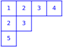
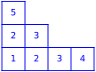
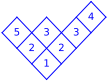

Tableaux¶
AUTHORS:
Mike Hansen (2007): initial version
Jason Bandlow (2011): updated to use Parent/Element model, and many minor fixes
Andrew Mathas (2012-13): completed the transition to the parent/element model begun by Jason Bandlow
Travis Scrimshaw (11-22-2012): Added tuple options, changed
*katabolism*to*catabolism*. Cleaned up documentation.Andrew Mathas (2016-08-11): Row standard tableaux added
Oliver Pechenik (2018): Added increasing tableaux.
This file consists of the following major classes:
Element classes:
Factory classes:
Parent classes:
SemistandardTableaux_all(facade class)StandardTableaux_all(facade class)IncreasingTableaux_all(facade class)RowStandardTableaux_all(facade class)
For display options, see Tableaux.options().
Todo
Move methods that only apply to semistandard tableaux from tableau to semistandard tableau
Copy/move functionality to skew tableaux
Add a class for tableaux of a given shape (eg Tableaux_shape)
- class sage.combinat.tableau.IncreasingTableau(parent, t, check=True)[source]¶
Bases:
TableauA class to model an increasing tableau.
INPUT:
t– a tableau, a list of iterables, or an empty list
An increasing tableau is a tableau whose entries are positive integers that are strictly increasing across rows and strictly increasing down columns.
EXAMPLES:
sage: t = IncreasingTableau([[1,2,3],[2,3]]); t [[1, 2, 3], [2, 3]] sage: t.shape() [3, 2] sage: t.pp() # pretty printing 1 2 3 2 3 sage: t = Tableau([[1,2],[2]]) sage: s = IncreasingTableau(t); s [[1, 2], [2]] sage: IncreasingTableau([]) # The empty tableau []
>>> from sage.all import * >>> t = IncreasingTableau([[Integer(1),Integer(2),Integer(3)],[Integer(2),Integer(3)]]); t [[1, 2, 3], [2, 3]] >>> t.shape() [3, 2] >>> t.pp() # pretty printing 1 2 3 2 3 >>> t = Tableau([[Integer(1),Integer(2)],[Integer(2)]]) >>> s = IncreasingTableau(t); s [[1, 2], [2]] >>> IncreasingTableau([]) # The empty tableau []
You can also construct an
IncreasingTableaufrom the appropriateParentobject:sage: IT = IncreasingTableaux() sage: IT([[1, 2, 3], [4, 5]]) [[1, 2, 3], [4, 5]]
>>> from sage.all import * >>> IT = IncreasingTableaux() >>> IT([[Integer(1), Integer(2), Integer(3)], [Integer(4), Integer(5)]]) [[1, 2, 3], [4, 5]]
See also
- K_bender_knuth(i)[source]¶
Return the
i-th K-Bender-Knuth operator (as defined in [DPS2017]) applied toself.The \(i\)-th K-Bender-Knuth operator swaps the letters \(i\) and \(i + 1\) everywhere where doing so would not break increasingness.
EXAMPLES:
sage: T = IncreasingTableau([[1,3,4],[2,4,5]]) sage: T.K_bender_knuth(2) [[1, 2, 4], [3, 4, 5]] sage: T.K_bender_knuth(3) [[1, 3, 4], [2, 4, 5]]
>>> from sage.all import * >>> T = IncreasingTableau([[Integer(1),Integer(3),Integer(4)],[Integer(2),Integer(4),Integer(5)]]) >>> T.K_bender_knuth(Integer(2)) [[1, 2, 4], [3, 4, 5]] >>> T.K_bender_knuth(Integer(3)) [[1, 3, 4], [2, 4, 5]]
- K_evacuation(ceiling=None)[source]¶
Return the K-evacuation involution from [TY2009] to
self.EXAMPLES:
sage: T = IncreasingTableau([[1,3,4],[2,4,5]]) sage: T.K_evacuation() [[1, 2, 4], [2, 3, 5]] sage: T.K_evacuation(6) [[2, 3, 5], [3, 4, 6]] sage: U = IncreasingTableau([[1,3,4],[3,4,5],[5]]) sage: U.K_evacuation() [[1, 2, 3], [2, 3, 5], [3]]
>>> from sage.all import * >>> T = IncreasingTableau([[Integer(1),Integer(3),Integer(4)],[Integer(2),Integer(4),Integer(5)]]) >>> T.K_evacuation() [[1, 2, 4], [2, 3, 5]] >>> T.K_evacuation(Integer(6)) [[2, 3, 5], [3, 4, 6]] >>> U = IncreasingTableau([[Integer(1),Integer(3),Integer(4)],[Integer(3),Integer(4),Integer(5)],[Integer(5)]]) >>> U.K_evacuation() [[1, 2, 3], [2, 3, 5], [3]]
- K_promotion(ceiling=None)[source]¶
Return the K-promotion operator from [Pec2014] applied to
self.EXAMPLES:
sage: T = IncreasingTableau([[1,3,4],[2,4,5]]) sage: T.K_promotion() [[1, 2, 3], [3, 4, 5]] sage: T.K_promotion(6) [[1, 2, 3], [3, 4, 6]] sage: U = IncreasingTableau([[1,3,4],[3,4,5],[5]]) sage: U.K_promotion() [[2, 3, 4], [3, 4, 5], [4]]
>>> from sage.all import * >>> T = IncreasingTableau([[Integer(1),Integer(3),Integer(4)],[Integer(2),Integer(4),Integer(5)]]) >>> T.K_promotion() [[1, 2, 3], [3, 4, 5]] >>> T.K_promotion(Integer(6)) [[1, 2, 3], [3, 4, 6]] >>> U = IncreasingTableau([[Integer(1),Integer(3),Integer(4)],[Integer(3),Integer(4),Integer(5)],[Integer(5)]]) >>> U.K_promotion() [[2, 3, 4], [3, 4, 5], [4]]
- K_promotion_inverse(ceiling=None)[source]¶
Return the inverse of K-promotion operator applied to
self.EXAMPLES:
sage: T = IncreasingTableau([[1,3,4],[2,4,5]]) sage: T.K_promotion_inverse() [[1, 2, 4], [3, 4, 5]] sage: T.K_promotion_inverse(6) [[2, 4, 5], [3, 5, 6]] sage: U = IncreasingTableau([[1,3,4],[3,4,5],[5]]) sage: U.K_promotion_inverse() [[1, 2, 4], [2, 4, 5], [4]]
>>> from sage.all import * >>> T = IncreasingTableau([[Integer(1),Integer(3),Integer(4)],[Integer(2),Integer(4),Integer(5)]]) >>> T.K_promotion_inverse() [[1, 2, 4], [3, 4, 5]] >>> T.K_promotion_inverse(Integer(6)) [[2, 4, 5], [3, 5, 6]] >>> U = IncreasingTableau([[Integer(1),Integer(3),Integer(4)],[Integer(3),Integer(4),Integer(5)],[Integer(5)]]) >>> U.K_promotion_inverse() [[1, 2, 4], [2, 4, 5], [4]]
- descent_set()[source]¶
Compute the descents of the increasing tableau
selfas defined in [DPS2017].The number \(i\) is a descent of an increasing tableau if some instance of \(i + 1\) appears in a lower row than some instance of \(i\).
Note
This notion is close to the notion of descent for a standard tableau but is unrelated to the notion for semistandard tableaux.
EXAMPLES:
sage: T = IncreasingTableau([[1,2,4],[3,5,6]]) sage: T.descent_set() [2, 4] sage: U = IncreasingTableau([[1,3,4],[2,4,5]]) sage: U.descent_set() [1, 3, 4] sage: V = IncreasingTableau([[1,3,4],[3,4,5],[4,5]]) sage: V.descent_set() [3, 4]
>>> from sage.all import * >>> T = IncreasingTableau([[Integer(1),Integer(2),Integer(4)],[Integer(3),Integer(5),Integer(6)]]) >>> T.descent_set() [2, 4] >>> U = IncreasingTableau([[Integer(1),Integer(3),Integer(4)],[Integer(2),Integer(4),Integer(5)]]) >>> U.descent_set() [1, 3, 4] >>> V = IncreasingTableau([[Integer(1),Integer(3),Integer(4)],[Integer(3),Integer(4),Integer(5)],[Integer(4),Integer(5)]]) >>> V.descent_set() [3, 4]
- dual_K_evacuation(ceiling=None)[source]¶
Return the dual K-evacuation involution applied to
self.EXAMPLES:
sage: T = IncreasingTableau([[1,3,4],[2,4,5]]) sage: T.dual_K_evacuation() [[1, 2, 4], [2, 3, 5]] sage: T.dual_K_evacuation(6) [[2, 3, 5], [3, 4, 6]] sage: U = IncreasingTableau([[1,3,4],[3,4,5],[5]]) sage: U.dual_K_evacuation() [[1, 2, 3], [2, 3, 5], [3]]
>>> from sage.all import * >>> T = IncreasingTableau([[Integer(1),Integer(3),Integer(4)],[Integer(2),Integer(4),Integer(5)]]) >>> T.dual_K_evacuation() [[1, 2, 4], [2, 3, 5]] >>> T.dual_K_evacuation(Integer(6)) [[2, 3, 5], [3, 4, 6]] >>> U = IncreasingTableau([[Integer(1),Integer(3),Integer(4)],[Integer(3),Integer(4),Integer(5)],[Integer(5)]]) >>> U.dual_K_evacuation() [[1, 2, 3], [2, 3, 5], [3]]
- class sage.combinat.tableau.IncreasingTableaux(**kwds)[source]¶
Bases:
TableauxA factory class for the various classes of increasing tableaux.
An increasing tableau is a tableau whose entries are positive integers that are strictly increasing across rows and strictly increasing down columns. Note that Sage uses the English convention for partitions and tableaux; the longer rows are displayed on top.
INPUT:
Keyword arguments:
size– the size of the tableauxshape– the shape of the tableauxeval– the weight (also called binary content) of the tableaux, where values can be either \(0\) or \(1\) with position \(i\) being \(1\) if and only if \(i\) can appear in the tableauxmax_entry– positive integer or infinity (oo); the maximum entry for the tableaux; ifsizeorshapeare specified,max_entrydefaults to besizeor the size ofshape
Positional arguments:
the first argument is interpreted as either
sizeorshapeaccording to whether it is an integer or a partitionthe second keyword argument will always be interpreted as
eval
Warning
The
evalis not the usual notion ofevalorweight, where the \(i\)-th entry counts how many \(i\)’s appear in the tableau.EXAMPLES:
sage: IT = IncreasingTableaux([2,1]); IT Increasing tableaux of shape [2, 1] and maximum entry 3 sage: IT.list() [[[1, 3], [2]], [[1, 2], [3]], [[1, 2], [2]], [[1, 3], [3]], [[2, 3], [3]]] sage: IT = IncreasingTableaux(3); IT Increasing tableaux of size 3 and maximum entry 3 sage: IT.list() [[[1, 2, 3]], [[1, 3], [2]], [[1, 2], [3]], [[1, 2], [2]], [[1, 3], [3]], [[2, 3], [3]], [[1], [2], [3]]] sage: IT = IncreasingTableaux(3, max_entry=2); IT Increasing tableaux of size 3 and maximum entry 2 sage: IT.list() [[[1, 2], [2]]] sage: IT = IncreasingTableaux(3, max_entry=4); IT Increasing tableaux of size 3 and maximum entry 4 sage: IT.list() [[[1, 2, 3]], [[1, 2, 4]], [[1, 3, 4]], [[2, 3, 4]], [[1, 3], [2]], [[1, 2], [3]], [[1, 4], [2]], [[1, 2], [4]], [[1, 2], [2]], [[1, 4], [3]], [[1, 3], [4]], [[1, 3], [3]], [[1, 4], [4]], [[2, 4], [3]], [[2, 3], [4]], [[2, 3], [3]], [[2, 4], [4]], [[3, 4], [4]], [[1], [2], [3]], [[1], [2], [4]], [[1], [3], [4]], [[2], [3], [4]]] sage: IT = IncreasingTableaux(3, max_entry=oo); IT Increasing tableaux of size 3 sage: IT[123] [[5, 7], [6]] sage: IT = IncreasingTableaux(max_entry=2) sage: list(IT) [[], [[1]], [[2]], [[1, 2]], [[1], [2]]] sage: IT[4] [[1], [2]] sage: IncreasingTableaux()[0] []
>>> from sage.all import * >>> IT = IncreasingTableaux([Integer(2),Integer(1)]); IT Increasing tableaux of shape [2, 1] and maximum entry 3 >>> IT.list() [[[1, 3], [2]], [[1, 2], [3]], [[1, 2], [2]], [[1, 3], [3]], [[2, 3], [3]]] >>> IT = IncreasingTableaux(Integer(3)); IT Increasing tableaux of size 3 and maximum entry 3 >>> IT.list() [[[1, 2, 3]], [[1, 3], [2]], [[1, 2], [3]], [[1, 2], [2]], [[1, 3], [3]], [[2, 3], [3]], [[1], [2], [3]]] >>> IT = IncreasingTableaux(Integer(3), max_entry=Integer(2)); IT Increasing tableaux of size 3 and maximum entry 2 >>> IT.list() [[[1, 2], [2]]] >>> IT = IncreasingTableaux(Integer(3), max_entry=Integer(4)); IT Increasing tableaux of size 3 and maximum entry 4 >>> IT.list() [[[1, 2, 3]], [[1, 2, 4]], [[1, 3, 4]], [[2, 3, 4]], [[1, 3], [2]], [[1, 2], [3]], [[1, 4], [2]], [[1, 2], [4]], [[1, 2], [2]], [[1, 4], [3]], [[1, 3], [4]], [[1, 3], [3]], [[1, 4], [4]], [[2, 4], [3]], [[2, 3], [4]], [[2, 3], [3]], [[2, 4], [4]], [[3, 4], [4]], [[1], [2], [3]], [[1], [2], [4]], [[1], [3], [4]], [[2], [3], [4]]] >>> IT = IncreasingTableaux(Integer(3), max_entry=oo); IT Increasing tableaux of size 3 >>> IT[Integer(123)] [[5, 7], [6]] >>> IT = IncreasingTableaux(max_entry=Integer(2)) >>> list(IT) [[], [[1]], [[2]], [[1, 2]], [[1], [2]]] >>> IT[Integer(4)] [[1], [2]] >>> IncreasingTableaux()[Integer(0)] []
See also
- Element[source]¶
alias of
IncreasingTableau
- class sage.combinat.tableau.IncreasingTableaux_all(max_entry=None)[source]¶
Bases:
IncreasingTableaux,DisjointUnionEnumeratedSetsAll increasing tableaux.
EXAMPLES:
sage: T = IncreasingTableaux() sage: T.cardinality() +Infinity sage: T = IncreasingTableaux(max_entry=3) sage: list(T) [[], [[1]], [[2]], [[3]], [[1, 2]], [[1, 3]], [[2, 3]], [[1], [2]], [[1], [3]], [[2], [3]], [[1, 2, 3]], [[1, 3], [2]], [[1, 2], [3]], [[1, 2], [2]], [[1, 3], [3]], [[2, 3], [3]], [[1], [2], [3]]]
>>> from sage.all import * >>> T = IncreasingTableaux() >>> T.cardinality() +Infinity >>> T = IncreasingTableaux(max_entry=Integer(3)) >>> list(T) [[], [[1]], [[2]], [[3]], [[1, 2]], [[1, 3]], [[2, 3]], [[1], [2]], [[1], [3]], [[2], [3]], [[1, 2, 3]], [[1, 3], [2]], [[1, 2], [3]], [[1, 2], [2]], [[1, 3], [3]], [[2, 3], [3]], [[1], [2], [3]]]
- class sage.combinat.tableau.IncreasingTableaux_shape(p, max_entry=None)[source]¶
Bases:
IncreasingTableauxIncreasing tableaux of fixed shape \(p\) with a given max entry.
An increasing tableau with max entry \(i\) is required to have all its entries less or equal to \(i\). It is not required to actually contain an entry \(i\).
INPUT:
p– a partitionmax_entry– the max entry; defaults to the size ofp
- class sage.combinat.tableau.IncreasingTableaux_shape_inf(p)[source]¶
Bases:
IncreasingTableauxIncreasing tableaux of fixed shape \(p\) and no maximum entry.
- class sage.combinat.tableau.IncreasingTableaux_shape_weight(p, wt)[source]¶
Bases:
IncreasingTableaux_shapeIncreasing tableaux of fixed shape \(p\) and binary weight \(wt\).
- class sage.combinat.tableau.IncreasingTableaux_size(n, max_entry=None)[source]¶
Bases:
IncreasingTableauxIncreasing tableaux of fixed size \(n\).
- class sage.combinat.tableau.IncreasingTableaux_size_inf(n)[source]¶
Bases:
IncreasingTableauxIncreasing tableaux of fixed size \(n\) with no maximum entry.
- class sage.combinat.tableau.IncreasingTableaux_size_weight(n, wt)[source]¶
Bases:
IncreasingTableauxIncreasing tableaux of fixed size \(n\) and weight \(wt\).
- class sage.combinat.tableau.RowStandardTableau(parent, t, check=True)[source]¶
Bases:
TableauA class to model a row standard tableau.
A row standard tableau is a tableau whose entries are positive integers from 1 to \(m\) that increase along rows.
INPUT:
t– a Tableau, a list of iterables, or an empty list
EXAMPLES:
sage: t = RowStandardTableau([[3,4,5],[1,2]]); t [[3, 4, 5], [1, 2]] sage: t.shape() [3, 2] sage: t.pp() # pretty printing 3 4 5 1 2 sage: t.is_standard() False sage: RowStandardTableau([]) # The empty tableau [] sage: RowStandardTableau([[3,4,5],[1,2]]) in StandardTableaux() False sage: RowStandardTableau([[1,2,5],[3,4]]) in StandardTableaux() True
>>> from sage.all import * >>> t = RowStandardTableau([[Integer(3),Integer(4),Integer(5)],[Integer(1),Integer(2)]]); t [[3, 4, 5], [1, 2]] >>> t.shape() [3, 2] >>> t.pp() # pretty printing 3 4 5 1 2 >>> t.is_standard() False >>> RowStandardTableau([]) # The empty tableau [] >>> RowStandardTableau([[Integer(3),Integer(4),Integer(5)],[Integer(1),Integer(2)]]) in StandardTableaux() False >>> RowStandardTableau([[Integer(1),Integer(2),Integer(5)],[Integer(3),Integer(4)]]) in StandardTableaux() True
When using code that will generate a lot of tableaux, it is more efficient to construct a
RowStandardTableaufrom the appropriateParentobject:sage: ST = RowStandardTableaux() sage: ST([[3, 4, 5], [1, 2]]) [[3, 4, 5], [1, 2]]
>>> from sage.all import * >>> ST = RowStandardTableaux() >>> ST([[Integer(3), Integer(4), Integer(5)], [Integer(1), Integer(2)]]) [[3, 4, 5], [1, 2]]
See also
- class sage.combinat.tableau.RowStandardTableaux[source]¶
Bases:
TableauxA factory for the various classes of row standard tableaux.
INPUT:
either a nonnegative integer (possibly specified with the keyword
n) or a partition
OUTPUT: with no argument, the class of all standard tableaux
with a nonnegative integer argument,
n, the class of all standard tableaux of sizenwith a partition argument, the class of all standard tableaux of that shape
A row standard tableau is a tableau that contains each of the entries from \(1\) to \(n\) exactly once and is increasing along rows.
All classes of row standard tableaux are iterable.
EXAMPLES:
sage: ST = RowStandardTableaux(3); ST Row standard tableaux of size 3 sage: ST.first() # needs sage.graphs [[1, 2, 3]] sage: ST.last() # needs sage.graphs sage.modules [[3], [1], [2]] sage: ST.cardinality() # needs sage.graphs sage.modules 10 sage: ST.list() # needs sage.graphs sage.modules [[[1, 2, 3]], [[2, 3], [1]], [[1, 2], [3]], [[1, 3], [2]], [[3], [2], [1]], [[2], [3], [1]], [[1], [3], [2]], [[1], [2], [3]], [[2], [1], [3]], [[3], [1], [2]]]
>>> from sage.all import * >>> ST = RowStandardTableaux(Integer(3)); ST Row standard tableaux of size 3 >>> ST.first() # needs sage.graphs [[1, 2, 3]] >>> ST.last() # needs sage.graphs sage.modules [[3], [1], [2]] >>> ST.cardinality() # needs sage.graphs sage.modules 10 >>> ST.list() # needs sage.graphs sage.modules [[[1, 2, 3]], [[2, 3], [1]], [[1, 2], [3]], [[1, 3], [2]], [[3], [2], [1]], [[2], [3], [1]], [[1], [3], [2]], [[1], [2], [3]], [[2], [1], [3]], [[3], [1], [2]]]
See also
- Element[source]¶
alias of
RowStandardTableau
- class sage.combinat.tableau.RowStandardTableaux_all[source]¶
Bases:
RowStandardTableaux,DisjointUnionEnumeratedSetsAll row standard tableaux.
- class sage.combinat.tableau.RowStandardTableaux_shape(p)[source]¶
Bases:
RowStandardTableauxRow Standard tableaux of a fixed shape \(p\).
- cardinality()[source]¶
Return the number of row standard tableaux of this shape.
This is just the index of the corresponding Young subgroup in the full symmetric group.
EXAMPLES:
sage: RowStandardTableaux([3,2,1]).cardinality() 60 sage: RowStandardTableaux([2,2]).cardinality() 6 sage: RowStandardTableaux([5]).cardinality() 1 sage: RowStandardTableaux([6,5,5,3]).cardinality() 1955457504 sage: RowStandardTableaux([]).cardinality() 1
>>> from sage.all import * >>> RowStandardTableaux([Integer(3),Integer(2),Integer(1)]).cardinality() 60 >>> RowStandardTableaux([Integer(2),Integer(2)]).cardinality() 6 >>> RowStandardTableaux([Integer(5)]).cardinality() 1 >>> RowStandardTableaux([Integer(6),Integer(5),Integer(5),Integer(3)]).cardinality() 1955457504 >>> RowStandardTableaux([]).cardinality() 1
- class sage.combinat.tableau.RowStandardTableaux_size(n)[source]¶
Bases:
RowStandardTableaux,DisjointUnionEnumeratedSetsRow standard tableaux of fixed size \(n\).
EXAMPLES:
sage: [t for t in RowStandardTableaux(1)] # needs sage.graphs [[[1]]] sage: [t for t in RowStandardTableaux(2)] # needs sage.graphs [[[1, 2]], [[2], [1]], [[1], [2]]] sage: list(RowStandardTableaux(3)) # needs sage.graphs [[[1, 2, 3]], [[2, 3], [1]], [[1, 2], [3]], [[1, 3], [2]], [[3], [2], [1]], [[2], [3], [1]], [[1], [3], [2]], [[1], [2], [3]], [[2], [1], [3]], [[3], [1], [2]]]
>>> from sage.all import * >>> [t for t in RowStandardTableaux(Integer(1))] # needs sage.graphs [[[1]]] >>> [t for t in RowStandardTableaux(Integer(2))] # needs sage.graphs [[[1, 2]], [[2], [1]], [[1], [2]]] >>> list(RowStandardTableaux(Integer(3))) # needs sage.graphs [[[1, 2, 3]], [[2, 3], [1]], [[1, 2], [3]], [[1, 3], [2]], [[3], [2], [1]], [[2], [3], [1]], [[1], [3], [2]], [[1], [2], [3]], [[2], [1], [3]], [[3], [1], [2]]]
- class sage.combinat.tableau.SemistandardTableau(parent, t, check=True)[source]¶
Bases:
TableauA class to model a semistandard tableau.
INPUT:
t– a tableau, a list of iterables, or an empty list
OUTPUT: a SemistandardTableau object constructed from
tA semistandard tableau is a tableau whose entries are positive integers, which are weakly increasing in rows and strictly increasing down columns.
EXAMPLES:
sage: t = SemistandardTableau([[1,2,3],[2,3]]); t [[1, 2, 3], [2, 3]] sage: t.shape() [3, 2] sage: t.pp() # pretty printing 1 2 3 2 3 sage: t = Tableau([[1,2],[2]]) sage: s = SemistandardTableau(t); s [[1, 2], [2]] sage: SemistandardTableau([]) # The empty tableau []
>>> from sage.all import * >>> t = SemistandardTableau([[Integer(1),Integer(2),Integer(3)],[Integer(2),Integer(3)]]); t [[1, 2, 3], [2, 3]] >>> t.shape() [3, 2] >>> t.pp() # pretty printing 1 2 3 2 3 >>> t = Tableau([[Integer(1),Integer(2)],[Integer(2)]]) >>> s = SemistandardTableau(t); s [[1, 2], [2]] >>> SemistandardTableau([]) # The empty tableau []
When using code that will generate a lot of tableaux, it is slightly more efficient to construct a SemistandardTableau from the appropriate
Parentobject:sage: SST = SemistandardTableaux() sage: SST([[1, 2, 3], [4, 5]]) [[1, 2, 3], [4, 5]]
>>> from sage.all import * >>> SST = SemistandardTableaux() >>> SST([[Integer(1), Integer(2), Integer(3)], [Integer(4), Integer(5)]]) [[1, 2, 3], [4, 5]]
- class sage.combinat.tableau.SemistandardTableaux(**kwds)[source]¶
Bases:
TableauxA factory class for the various classes of semistandard tableaux.
INPUT:
Keyword arguments:
size– the size of the tableauxshape– the shape of the tableauxeval– the weight (also called content or evaluation) of the tableauxmax_entry– a maximum entry for the tableaux. This can be a positive integer or infinity (oo). Ifsizeorshapeare specified,max_entrydefaults to besizeor the size ofshape.
Positional arguments:
The first argument is interpreted as either
sizeorshapeaccording to whether it is an integer or a partitionThe second keyword argument will always be interpreted as
eval
OUTPUT:
The appropriate class, after checking basic consistency tests. (For example, specifying
evalimplies a value formax_entry).
A semistandard tableau is a tableau whose entries are positive integers, which are weakly increasing in rows and strictly increasing down columns. Note that Sage uses the English convention for partitions and tableaux; the longer rows are displayed on top.
Classes of semistandard tableaux can be iterated over if and only if there is some restriction.
EXAMPLES:
sage: SST = SemistandardTableaux([2,1]); SST Semistandard tableaux of shape [2, 1] and maximum entry 3 sage: SST.list() # needs sage.modules [[[1, 1], [2]], [[1, 1], [3]], [[1, 2], [2]], [[1, 2], [3]], [[1, 3], [2]], [[1, 3], [3]], [[2, 2], [3]], [[2, 3], [3]]] sage: SST = SemistandardTableaux(3); SST Semistandard tableaux of size 3 and maximum entry 3 sage: SST.list() # needs sage.modules [[[1, 1, 1]], [[1, 1, 2]], [[1, 1, 3]], [[1, 2, 2]], [[1, 2, 3]], [[1, 3, 3]], [[2, 2, 2]], [[2, 2, 3]], [[2, 3, 3]], [[3, 3, 3]], [[1, 1], [2]], [[1, 1], [3]], [[1, 2], [2]], [[1, 2], [3]], [[1, 3], [2]], [[1, 3], [3]], [[2, 2], [3]], [[2, 3], [3]], [[1], [2], [3]]] sage: SST = SemistandardTableaux(3, max_entry=2); SST Semistandard tableaux of size 3 and maximum entry 2 sage: SST.list() # needs sage.modules [[[1, 1, 1]], [[1, 1, 2]], [[1, 2, 2]], [[2, 2, 2]], [[1, 1], [2]], [[1, 2], [2]]] sage: SST = SemistandardTableaux(3, max_entry=oo); SST Semistandard tableaux of size 3 sage: SST[123] # needs sage.modules [[3, 4], [6]] sage: SemistandardTableaux(max_entry=2)[11] # needs sage.modules [[1, 1], [2]] sage: SemistandardTableaux()[0] # needs sage.modules []
>>> from sage.all import * >>> SST = SemistandardTableaux([Integer(2),Integer(1)]); SST Semistandard tableaux of shape [2, 1] and maximum entry 3 >>> SST.list() # needs sage.modules [[[1, 1], [2]], [[1, 1], [3]], [[1, 2], [2]], [[1, 2], [3]], [[1, 3], [2]], [[1, 3], [3]], [[2, 2], [3]], [[2, 3], [3]]] >>> SST = SemistandardTableaux(Integer(3)); SST Semistandard tableaux of size 3 and maximum entry 3 >>> SST.list() # needs sage.modules [[[1, 1, 1]], [[1, 1, 2]], [[1, 1, 3]], [[1, 2, 2]], [[1, 2, 3]], [[1, 3, 3]], [[2, 2, 2]], [[2, 2, 3]], [[2, 3, 3]], [[3, 3, 3]], [[1, 1], [2]], [[1, 1], [3]], [[1, 2], [2]], [[1, 2], [3]], [[1, 3], [2]], [[1, 3], [3]], [[2, 2], [3]], [[2, 3], [3]], [[1], [2], [3]]] >>> SST = SemistandardTableaux(Integer(3), max_entry=Integer(2)); SST Semistandard tableaux of size 3 and maximum entry 2 >>> SST.list() # needs sage.modules [[[1, 1, 1]], [[1, 1, 2]], [[1, 2, 2]], [[2, 2, 2]], [[1, 1], [2]], [[1, 2], [2]]] >>> SST = SemistandardTableaux(Integer(3), max_entry=oo); SST Semistandard tableaux of size 3 >>> SST[Integer(123)] # needs sage.modules [[3, 4], [6]] >>> SemistandardTableaux(max_entry=Integer(2))[Integer(11)] # needs sage.modules [[1, 1], [2]] >>> SemistandardTableaux()[Integer(0)] # needs sage.modules []
- Element[source]¶
alias of
SemistandardTableau
- class sage.combinat.tableau.SemistandardTableaux_all(max_entry=None)[source]¶
Bases:
SemistandardTableaux,DisjointUnionEnumeratedSetsAll semistandard tableaux.
- class sage.combinat.tableau.SemistandardTableaux_shape(p, max_entry=None)[source]¶
Bases:
SemistandardTableauxSemistandard tableaux of fixed shape \(p\) with a given max entry.
A semistandard tableau with max entry \(i\) is required to have all its entries less or equal to \(i\). It is not required to actually contain an entry \(i\).
INPUT:
p– a partitionmax_entry– the max entry; defaults to the size of \(p\)
- cardinality(algorithm='hook')[source]¶
Return the cardinality of
self.INPUT:
algorithm– (default:'hook') any one of the following:'hook'– use Stanley’s hook length formula'sum'– sum over the compositions ofmax_entrythe number of semistandard tableau withshapeand given weight vector
This is computed using Stanley’s hook length formula:
\[f_{\lambda} = \prod_{u\in\lambda} \frac{n+c(u)}{h(u)}.\]where \(n\) is the
max_entry, \(c(u)\) is the content of \(u\), and \(h(u)\) is the hook length of \(u\). See [Sta-EC2] Corollary 7.21.4.EXAMPLES:
sage: SemistandardTableaux([2,1]).cardinality() 8 sage: SemistandardTableaux([2,2,1]).cardinality() 75 sage: SymmetricFunctions(QQ).schur()([2,2,1]).expand(5)(1,1,1,1,1) # cross check # needs sage.modules 75 sage: SemistandardTableaux([5]).cardinality() 126 sage: SemistandardTableaux([3,2,1]).cardinality() 896 sage: SemistandardTableaux([3,2,1], max_entry=7).cardinality() 2352 sage: SemistandardTableaux([6,5,4,3,2,1], max_entry=30).cardinality() 208361017592001331200 sage: ssts = [SemistandardTableaux(p, max_entry=6) for p in Partitions(5)] sage: all(sst.cardinality() == sst.cardinality(algorithm='sum') # needs sage.modules ....: for sst in ssts) True
>>> from sage.all import * >>> SemistandardTableaux([Integer(2),Integer(1)]).cardinality() 8 >>> SemistandardTableaux([Integer(2),Integer(2),Integer(1)]).cardinality() 75 >>> SymmetricFunctions(QQ).schur()([Integer(2),Integer(2),Integer(1)]).expand(Integer(5))(Integer(1),Integer(1),Integer(1),Integer(1),Integer(1)) # cross check # needs sage.modules 75 >>> SemistandardTableaux([Integer(5)]).cardinality() 126 >>> SemistandardTableaux([Integer(3),Integer(2),Integer(1)]).cardinality() 896 >>> SemistandardTableaux([Integer(3),Integer(2),Integer(1)], max_entry=Integer(7)).cardinality() 2352 >>> SemistandardTableaux([Integer(6),Integer(5),Integer(4),Integer(3),Integer(2),Integer(1)], max_entry=Integer(30)).cardinality() 208361017592001331200 >>> ssts = [SemistandardTableaux(p, max_entry=Integer(6)) for p in Partitions(Integer(5))] >>> all(sst.cardinality() == sst.cardinality(algorithm='sum') # needs sage.modules ... for sst in ssts) True
- random_element()[source]¶
Return a uniformly distributed random tableau of the given
shapeandmax_entry.- Uses the algorithm from [Kra1999] based on the Novelli-Pak-Stoyanovskii bijection
http://www.sciencedirect.com/science/article/pii/0012365X9290368P
EXAMPLES:
sage: S = SemistandardTableaux([2, 2, 1, 1]) sage: S.random_element() in S True sage: S = SemistandardTableaux([2, 2, 1, 1], max_entry=7) sage: S.random_element() in S True
>>> from sage.all import * >>> S = SemistandardTableaux([Integer(2), Integer(2), Integer(1), Integer(1)]) >>> S.random_element() in S True >>> S = SemistandardTableaux([Integer(2), Integer(2), Integer(1), Integer(1)], max_entry=Integer(7)) >>> S.random_element() in S True
- class sage.combinat.tableau.SemistandardTableaux_shape_inf(p)[source]¶
Bases:
SemistandardTableauxSemistandard tableaux of fixed shape \(p\) and no maximum entry.
- class sage.combinat.tableau.SemistandardTableaux_shape_weight(p, mu)[source]¶
Bases:
SemistandardTableaux_shapeSemistandard tableaux of fixed shape \(p\) and weight \(\mu\).
- cardinality()[source]¶
Return the number of semistandard tableaux of the given shape and weight, as computed by
kostka_numberfunction ofsymmetrica.EXAMPLES:
sage: # needs sage.modules sage: SemistandardTableaux([2,2], [2, 1, 1]).cardinality() 1 sage: SemistandardTableaux([2,2,2], [2, 2, 1,1]).cardinality() 1 sage: SemistandardTableaux([2,2,2], [2, 2, 2]).cardinality() 1 sage: SemistandardTableaux([3,2,1], [2, 2, 2]).cardinality() 2
>>> from sage.all import * >>> # needs sage.modules >>> SemistandardTableaux([Integer(2),Integer(2)], [Integer(2), Integer(1), Integer(1)]).cardinality() 1 >>> SemistandardTableaux([Integer(2),Integer(2),Integer(2)], [Integer(2), Integer(2), Integer(1),Integer(1)]).cardinality() 1 >>> SemistandardTableaux([Integer(2),Integer(2),Integer(2)], [Integer(2), Integer(2), Integer(2)]).cardinality() 1 >>> SemistandardTableaux([Integer(3),Integer(2),Integer(1)], [Integer(2), Integer(2), Integer(2)]).cardinality() 2
- list()[source]¶
Return a list of all semistandard tableaux in
selfgenerated by symmetrica.EXAMPLES:
sage: # needs sage.modules sage: SemistandardTableaux([2,2], [2, 1, 1]).list() [[[1, 1], [2, 3]]] sage: SemistandardTableaux([2,2,2], [2, 2, 1,1]).list() [[[1, 1], [2, 2], [3, 4]]] sage: SemistandardTableaux([2,2,2], [2, 2, 2]).list() [[[1, 1], [2, 2], [3, 3]]] sage: SemistandardTableaux([3,2,1], [2, 2, 2]).list() [[[1, 1, 2], [2, 3], [3]], [[1, 1, 3], [2, 2], [3]]]
>>> from sage.all import * >>> # needs sage.modules >>> SemistandardTableaux([Integer(2),Integer(2)], [Integer(2), Integer(1), Integer(1)]).list() [[[1, 1], [2, 3]]] >>> SemistandardTableaux([Integer(2),Integer(2),Integer(2)], [Integer(2), Integer(2), Integer(1),Integer(1)]).list() [[[1, 1], [2, 2], [3, 4]]] >>> SemistandardTableaux([Integer(2),Integer(2),Integer(2)], [Integer(2), Integer(2), Integer(2)]).list() [[[1, 1], [2, 2], [3, 3]]] >>> SemistandardTableaux([Integer(3),Integer(2),Integer(1)], [Integer(2), Integer(2), Integer(2)]).list() [[[1, 1, 2], [2, 3], [3]], [[1, 1, 3], [2, 2], [3]]]
- random_element()[source]¶
A random element in
self.self.random_element()returns a random element inselfwith uniform probability.This is the default implementation from the category
EnumeratedSet()which uses the methodunrank.EXAMPLES:
sage: C = FiniteEnumeratedSets().example() sage: n = C.random_element() sage: n in C True sage: n = C._random_element_from_unrank() sage: n in C True
>>> from sage.all import * >>> C = FiniteEnumeratedSets().example() >>> n = C.random_element() >>> n in C True >>> n = C._random_element_from_unrank() >>> n in C True
- class sage.combinat.tableau.SemistandardTableaux_size(n, max_entry=None)[source]¶
Bases:
SemistandardTableauxSemistandard tableaux of fixed size \(n\).
- cardinality()[source]¶
Return the cardinality of
self.EXAMPLES:
sage: SemistandardTableaux(3).cardinality() 19 sage: SemistandardTableaux(4).cardinality() 116 sage: SemistandardTableaux(4, max_entry=2).cardinality() 9 sage: SemistandardTableaux(4, max_entry=10).cardinality() 4225 sage: ns = list(range(1, 6)) sage: ssts = [ SemistandardTableaux(n) for n in ns ] sage: all(sst.cardinality() == len(sst.list()) for sst in ssts) # needs sage.modules True
>>> from sage.all import * >>> SemistandardTableaux(Integer(3)).cardinality() 19 >>> SemistandardTableaux(Integer(4)).cardinality() 116 >>> SemistandardTableaux(Integer(4), max_entry=Integer(2)).cardinality() 9 >>> SemistandardTableaux(Integer(4), max_entry=Integer(10)).cardinality() 4225 >>> ns = list(range(Integer(1), Integer(6))) >>> ssts = [ SemistandardTableaux(n) for n in ns ] >>> all(sst.cardinality() == len(sst.list()) for sst in ssts) # needs sage.modules True
- random_element()[source]¶
Generate a random
SemistandardTableauwith uniform probability.The RSK algorithm gives a bijection between symmetric \(k\times k\) matrices of nonnegative integers that sum to \(n\) and semistandard tableaux with size \(n\) and maximum entry \(k\).
The number of \(k\times k\) symmetric matrices of nonnegative integers having sum of elements on the diagonal \(i\) and sum of elements above the diagonal \(j\) is \(\binom{k + i - 1}{k - 1}\binom{\binom{k}{2} + j - 1}{\binom{k}{2} - 1}\). We first choose the sum of the elements on the diagonal randomly weighted by the number of matrices having that trace. We then create random integer vectors of length \(k\) having that sum and use them to generate a \(k\times k\) diagonal matrix. Then we take a random integer vector of length \(\binom{k}{2}\) summing to half the remainder and distribute it symmetrically to the remainder of the matrix.
Applying RSK to the random symmetric matrix gives us a pair of identical
SemistandardTableauof which we choose the first.EXAMPLES:
sage: SemistandardTableaux(6).random_element() # random # needs sage.modules [[1, 1, 2], [3, 5, 5]] sage: SemistandardTableaux(6, max_entry=7).random_element() # random # needs sage.modules [[2, 4, 4, 6, 6, 6]]
>>> from sage.all import * >>> SemistandardTableaux(Integer(6)).random_element() # random # needs sage.modules [[1, 1, 2], [3, 5, 5]] >>> SemistandardTableaux(Integer(6), max_entry=Integer(7)).random_element() # random # needs sage.modules [[2, 4, 4, 6, 6, 6]]
- class sage.combinat.tableau.SemistandardTableaux_size_inf(n)[source]¶
Bases:
SemistandardTableauxSemistandard tableaux of fixed size \(n\) with no maximum entry.
- class sage.combinat.tableau.SemistandardTableaux_size_weight(n, mu)[source]¶
Bases:
SemistandardTableauxSemistandard tableaux of fixed size \(n\) and weight \(\mu\).
- cardinality()[source]¶
Return the cardinality of
self.EXAMPLES:
sage: SemistandardTableaux(3, [2,1]).cardinality() # needs sage.modules 2 sage: SemistandardTableaux(4, [2,2]).cardinality() # needs sage.modules 3
>>> from sage.all import * >>> SemistandardTableaux(Integer(3), [Integer(2),Integer(1)]).cardinality() # needs sage.modules 2 >>> SemistandardTableaux(Integer(4), [Integer(2),Integer(2)]).cardinality() # needs sage.modules 3
- class sage.combinat.tableau.StandardTableau(parent, t, check=True)[source]¶
Bases:
SemistandardTableauA class to model a standard tableau.
INPUT:
t– a Tableau, a list of iterables, or an empty list
A standard tableau is a semistandard tableau whose entries are exactly the positive integers from 1 to \(n\), where \(n\) is the size of the tableau.
EXAMPLES:
sage: t = StandardTableau([[1,2,3],[4,5]]); t [[1, 2, 3], [4, 5]] sage: t.shape() [3, 2] sage: t.pp() # pretty printing 1 2 3 4 5 sage: t.is_standard() True sage: StandardTableau([]) # The empty tableau [] sage: StandardTableau([[1,2,3],[4,5]]) in RowStandardTableaux() True
>>> from sage.all import * >>> t = StandardTableau([[Integer(1),Integer(2),Integer(3)],[Integer(4),Integer(5)]]); t [[1, 2, 3], [4, 5]] >>> t.shape() [3, 2] >>> t.pp() # pretty printing 1 2 3 4 5 >>> t.is_standard() True >>> StandardTableau([]) # The empty tableau [] >>> StandardTableau([[Integer(1),Integer(2),Integer(3)],[Integer(4),Integer(5)]]) in RowStandardTableaux() True
When using code that will generate a lot of tableaux, it is more efficient to construct a StandardTableau from the appropriate
Parentobject:sage: ST = StandardTableaux() sage: ST([[1, 2, 3], [4, 5]]) [[1, 2, 3], [4, 5]]
>>> from sage.all import * >>> ST = StandardTableaux() >>> ST([[Integer(1), Integer(2), Integer(3)], [Integer(4), Integer(5)]]) [[1, 2, 3], [4, 5]]
- dominates(t)[source]¶
Return
Trueifselfdominates the tableaut.That is, if the shape of the tableau restricted to \(k\) dominates the shape of
trestricted to \(k\), for \(k = 1, 2, \ldots, n\).When the two tableaux have the same shape, then this ordering coincides with the Bruhat ordering for the corresponding permutations.
INPUT:
t– a tableau
EXAMPLES:
sage: s = StandardTableau([[1,2,3],[4,5]]) sage: t = StandardTableau([[1,2],[3,5],[4]]) sage: s.dominates(t) True sage: t.dominates(s) False sage: all(StandardTableau(s).dominates(t) for t in StandardTableaux([3,2])) True sage: s.dominates([[1,2,3,4,5]]) False
>>> from sage.all import * >>> s = StandardTableau([[Integer(1),Integer(2),Integer(3)],[Integer(4),Integer(5)]]) >>> t = StandardTableau([[Integer(1),Integer(2)],[Integer(3),Integer(5)],[Integer(4)]]) >>> s.dominates(t) True >>> t.dominates(s) False >>> all(StandardTableau(s).dominates(t) for t in StandardTableaux([Integer(3),Integer(2)])) True >>> s.dominates([[Integer(1),Integer(2),Integer(3),Integer(4),Integer(5)]]) False
- down()[source]¶
An iterator for all the standard tableaux that can be obtained from
selfby removing a cell. Note that this iterates just over a single tableau (or nothing ifselfis empty).EXAMPLES:
sage: t = StandardTableau([[1,2],[3]]) sage: [x for x in t.down()] [[[1, 2]]] sage: t = StandardTableau([]) sage: [x for x in t.down()] []
>>> from sage.all import * >>> t = StandardTableau([[Integer(1),Integer(2)],[Integer(3)]]) >>> [x for x in t.down()] [[[1, 2]]] >>> t = StandardTableau([]) >>> [x for x in t.down()] []
- down_list()[source]¶
Return a list of all the standard tableaux that can be obtained from
selfby removing a cell. Note that this is just a singleton list ifselfis nonempty, and an empty list otherwise.EXAMPLES:
sage: t = StandardTableau([[1,2],[3]]) sage: t.down_list() [[[1, 2]]] sage: t = StandardTableau([]) sage: t.down_list() []
>>> from sage.all import * >>> t = StandardTableau([[Integer(1),Integer(2)],[Integer(3)]]) >>> t.down_list() [[[1, 2]]] >>> t = StandardTableau([]) >>> t.down_list() []
- is_standard()[source]¶
Return
Truesinceselfis a standard tableau.EXAMPLES:
sage: StandardTableau([[1, 3], [2, 4]]).is_standard() True
>>> from sage.all import * >>> StandardTableau([[Integer(1), Integer(3)], [Integer(2), Integer(4)]]).is_standard() True
- promotion(n=None)[source]¶
Return the image of
selfunder the promotion operator.The promotion operator, applied to a standard tableau \(t\), does the following:
Remove the letter \(n\) from \(t\), thus leaving a hole where it used to be. Apply jeu de taquin to move this hole southwest (in French notation) until it reaches the inner boundary of \(t\). Fill \(0\) into the hole once jeu de taquin has completed. Finally, add \(1\) to each letter in the tableau. The resulting standard tableau is the image of \(t\) under the promotion operator.
This definition of promotion is precisely the one given in [Hai1992] (p. 90). It is the inverse of the maps called “promotion” in [Sag2011] (p. 23) and in [Stan2009].
See the
promotion()method for a more general operator.EXAMPLES:
sage: ST = StandardTableaux(7) sage: all( st.promotion().promotion_inverse() == st for st in ST ) # long time True sage: all( st.promotion_inverse().promotion() == st for st in ST ) # long time True sage: st = StandardTableau([[1,2,5],[3,4]]) sage: parent(st.promotion()) Standard tableaux
>>> from sage.all import * >>> ST = StandardTableaux(Integer(7)) >>> all( st.promotion().promotion_inverse() == st for st in ST ) # long time True >>> all( st.promotion_inverse().promotion() == st for st in ST ) # long time True >>> st = StandardTableau([[Integer(1),Integer(2),Integer(5)],[Integer(3),Integer(4)]]) >>> parent(st.promotion()) Standard tableaux
- promotion_inverse(n=None)[source]¶
Return the image of
selfunder the inverse promotion operator. The optional variable \(m\) should be set to the size ofselfminus \(1\) for a minimal speedup; otherwise, it defaults to this number.The inverse promotion operator, applied to a standard tableau \(t\), does the following:
Remove the letter \(1\) from \(t\), thus leaving a hole where it used to be. Apply jeu de taquin to move this hole northeast (in French notation) until it reaches the outer boundary of \(t\). Fill \(n + 1\) into this hole, where \(n\) is the size of \(t\). Finally, subtract \(1\) from each letter in the tableau. This yields a new standard tableau.
This definition of inverse promotion is the map called “promotion” in [Sag2011] (p. 23) and in [Stan2009], and is the inverse of the map called “promotion” in [Hai1992] (p. 90).
See the
promotion_inverse()method for a more general operator.EXAMPLES:
sage: t = StandardTableau([[1,3],[2,4]]) sage: t.promotion_inverse() [[1, 2], [3, 4]]
>>> from sage.all import * >>> t = StandardTableau([[Integer(1),Integer(3)],[Integer(2),Integer(4)]]) >>> t.promotion_inverse() [[1, 2], [3, 4]]
We check the equivalence of two definitions of inverse promotion on standard tableaux:
sage: ST = StandardTableaux(7) sage: def bk_promotion_inverse7(st): ....: st2 = st ....: for i in range(1, 7): ....: st2 = st2.bender_knuth_involution(i, check=False) ....: return st2 sage: all( bk_promotion_inverse7(st) == st.promotion_inverse() for st in ST ) # long time True
>>> from sage.all import * >>> ST = StandardTableaux(Integer(7)) >>> def bk_promotion_inverse7(st): ... st2 = st ... for i in range(Integer(1), Integer(7)): ... st2 = st2.bender_knuth_involution(i, check=False) ... return st2 >>> all( bk_promotion_inverse7(st) == st.promotion_inverse() for st in ST ) # long time True
- standard_descents()[source]¶
Return a list of the integers \(i\) such that \(i\) appears strictly further north than \(i + 1\) in
self(this is not to say that \(i\) and \(i + 1\) must be in the same column). The list is sorted in increasing order.EXAMPLES:
sage: StandardTableau( [[1,3,4],[2,5]] ).standard_descents() [1, 4] sage: StandardTableau( [[1,2],[3,4]] ).standard_descents() [2] sage: StandardTableau( [[1,2,5],[3,4],[6,7],[8],[9]] ).standard_descents() [2, 5, 7, 8] sage: StandardTableau( [] ).standard_descents() []
>>> from sage.all import * >>> StandardTableau( [[Integer(1),Integer(3),Integer(4)],[Integer(2),Integer(5)]] ).standard_descents() [1, 4] >>> StandardTableau( [[Integer(1),Integer(2)],[Integer(3),Integer(4)]] ).standard_descents() [2] >>> StandardTableau( [[Integer(1),Integer(2),Integer(5)],[Integer(3),Integer(4)],[Integer(6),Integer(7)],[Integer(8)],[Integer(9)]] ).standard_descents() [2, 5, 7, 8] >>> StandardTableau( [] ).standard_descents() []
- standard_major_index()[source]¶
Return the major index of the standard tableau
selfin the standard meaning of the word. The major index is defined to be the sum of the descents ofself(seestandard_descents()for their definition).EXAMPLES:
sage: StandardTableau( [[1,4,5],[2,6],[3]] ).standard_major_index() 8 sage: StandardTableau( [[1,2],[3,4]] ).standard_major_index() 2 sage: StandardTableau( [[1,2,3],[4,5]] ).standard_major_index() 3
>>> from sage.all import * >>> StandardTableau( [[Integer(1),Integer(4),Integer(5)],[Integer(2),Integer(6)],[Integer(3)]] ).standard_major_index() 8 >>> StandardTableau( [[Integer(1),Integer(2)],[Integer(3),Integer(4)]] ).standard_major_index() 2 >>> StandardTableau( [[Integer(1),Integer(2),Integer(3)],[Integer(4),Integer(5)]] ).standard_major_index() 3
- standard_number_of_descents()[source]¶
Return the number of all integers \(i\) such that \(i\) appears strictly further north than \(i + 1\) in
self(this is not to say that \(i\) and \(i + 1\) must be in the same column). A list of these integers can be obtained using thestandard_descents()method.EXAMPLES:
sage: StandardTableau( [[1,2],[3,4],[5]] ).standard_number_of_descents() 2 sage: StandardTableau( [] ).standard_number_of_descents() 0 sage: tabs = StandardTableaux(5) sage: all( t.standard_number_of_descents() == t.schuetzenberger_involution().standard_number_of_descents() for t in tabs ) True
>>> from sage.all import * >>> StandardTableau( [[Integer(1),Integer(2)],[Integer(3),Integer(4)],[Integer(5)]] ).standard_number_of_descents() 2 >>> StandardTableau( [] ).standard_number_of_descents() 0 >>> tabs = StandardTableaux(Integer(5)) >>> all( t.standard_number_of_descents() == t.schuetzenberger_involution().standard_number_of_descents() for t in tabs ) True
- up()[source]¶
An iterator for all the standard tableaux that can be obtained from
selfby adding a cell.EXAMPLES:
sage: t = StandardTableau([[1,2]]) sage: [x for x in t.up()] [[[1, 2, 3]], [[1, 2], [3]]]
>>> from sage.all import * >>> t = StandardTableau([[Integer(1),Integer(2)]]) >>> [x for x in t.up()] [[[1, 2, 3]], [[1, 2], [3]]]
- up_list()[source]¶
Return a list of all the standard tableaux that can be obtained from
selfby adding a cell.EXAMPLES:
sage: t = StandardTableau([[1,2]]) sage: t.up_list() [[[1, 2, 3]], [[1, 2], [3]]]
>>> from sage.all import * >>> t = StandardTableau([[Integer(1),Integer(2)]]) >>> t.up_list() [[[1, 2, 3]], [[1, 2], [3]]]
- class sage.combinat.tableau.StandardTableaux(**kwds)[source]¶
Bases:
SemistandardTableauxA factory for the various classes of standard tableaux.
INPUT:
Either a nonnegative integer (possibly specified with the keyword
n) or a partition.
OUTPUT: with no argument, the class of all standard tableaux
With a nonnegative integer argument,
n, the class of all standard tableaux of sizenWith a partition argument, the class of all standard tableaux of that shape.
A standard tableau is a semistandard tableaux which contains each of the entries from 1 to
nexactly once.All classes of standard tableaux are iterable.
EXAMPLES:
sage: ST = StandardTableaux(3); ST Standard tableaux of size 3 sage: ST.first() [[1, 2, 3]] sage: ST.last() [[1], [2], [3]] sage: ST.cardinality() 4 sage: ST.list() [[[1, 2, 3]], [[1, 3], [2]], [[1, 2], [3]], [[1], [2], [3]]]
>>> from sage.all import * >>> ST = StandardTableaux(Integer(3)); ST Standard tableaux of size 3 >>> ST.first() [[1, 2, 3]] >>> ST.last() [[1], [2], [3]] >>> ST.cardinality() 4 >>> ST.list() [[[1, 2, 3]], [[1, 3], [2]], [[1, 2], [3]], [[1], [2], [3]]]
See also
- Element[source]¶
alias of
StandardTableau
- class sage.combinat.tableau.StandardTableaux_all[source]¶
Bases:
StandardTableaux,DisjointUnionEnumeratedSetsAll standard tableaux.
- class sage.combinat.tableau.StandardTableaux_shape(p)[source]¶
Bases:
StandardTableauxSemistandard tableaux of a fixed shape \(p\).
- cardinality()[source]¶
Return the number of standard Young tableaux of this shape.
This method uses the so-called hook length formula, a formula for the number of Young tableaux associated with a given partition. The formula says the following: Let \(\lambda\) be a partition. For each cell \(c\) of the Young diagram of \(\lambda\), let the hook length of \(c\) be defined as \(1\) plus the number of cells horizontally to the right of \(c\) plus the number of cells vertically below \(c\). The number of standard Young tableaux of shape \(\lambda\) is then \(n!\) divided by the product of the hook lengths of the shape of \(\lambda\), where \(n = |\lambda|\).
For example, consider the partition
[3,2,1]of6with Ferrers diagram:# # # # # #
When we fill in the cells with their respective hook lengths, we obtain:
5 3 1 3 1 1
The hook length formula returns
\[\frac{6!}{5 \cdot 3 \cdot 1 \cdot 3 \cdot 1 \cdot 1} = 16.\]EXAMPLES:
sage: StandardTableaux([3,2,1]).cardinality() 16 sage: StandardTableaux([2,2]).cardinality() 2 sage: StandardTableaux([5]).cardinality() 1 sage: StandardTableaux([6,5,5,3]).cardinality() 6651216 sage: StandardTableaux([]).cardinality() 1
>>> from sage.all import * >>> StandardTableaux([Integer(3),Integer(2),Integer(1)]).cardinality() 16 >>> StandardTableaux([Integer(2),Integer(2)]).cardinality() 2 >>> StandardTableaux([Integer(5)]).cardinality() 1 >>> StandardTableaux([Integer(6),Integer(5),Integer(5),Integer(3)]).cardinality() 6651216 >>> StandardTableaux([]).cardinality() 1
REFERENCES:
- list()[source]¶
Return a list of the standard Young tableaux of the specified shape.
EXAMPLES:
sage: StandardTableaux([2,2]).list() [[[1, 3], [2, 4]], [[1, 2], [3, 4]]] sage: StandardTableaux([5]).list() [[[1, 2, 3, 4, 5]]] sage: StandardTableaux([3,2,1]).list() [[[1, 4, 6], [2, 5], [3]], [[1, 3, 6], [2, 5], [4]], [[1, 2, 6], [3, 5], [4]], [[1, 3, 6], [2, 4], [5]], [[1, 2, 6], [3, 4], [5]], [[1, 4, 5], [2, 6], [3]], [[1, 3, 5], [2, 6], [4]], [[1, 2, 5], [3, 6], [4]], [[1, 3, 4], [2, 6], [5]], [[1, 2, 4], [3, 6], [5]], [[1, 2, 3], [4, 6], [5]], [[1, 3, 5], [2, 4], [6]], [[1, 2, 5], [3, 4], [6]], [[1, 3, 4], [2, 5], [6]], [[1, 2, 4], [3, 5], [6]], [[1, 2, 3], [4, 5], [6]]]
>>> from sage.all import * >>> StandardTableaux([Integer(2),Integer(2)]).list() [[[1, 3], [2, 4]], [[1, 2], [3, 4]]] >>> StandardTableaux([Integer(5)]).list() [[[1, 2, 3, 4, 5]]] >>> StandardTableaux([Integer(3),Integer(2),Integer(1)]).list() [[[1, 4, 6], [2, 5], [3]], [[1, 3, 6], [2, 5], [4]], [[1, 2, 6], [3, 5], [4]], [[1, 3, 6], [2, 4], [5]], [[1, 2, 6], [3, 4], [5]], [[1, 4, 5], [2, 6], [3]], [[1, 3, 5], [2, 6], [4]], [[1, 2, 5], [3, 6], [4]], [[1, 3, 4], [2, 6], [5]], [[1, 2, 4], [3, 6], [5]], [[1, 2, 3], [4, 6], [5]], [[1, 3, 5], [2, 4], [6]], [[1, 2, 5], [3, 4], [6]], [[1, 3, 4], [2, 5], [6]], [[1, 2, 4], [3, 5], [6]], [[1, 2, 3], [4, 5], [6]]]
- random_element()[source]¶
Return a random standard tableau of the given shape using the Greene-Nijenhuis-Wilf Algorithm.
EXAMPLES:
sage: t = StandardTableaux([2,2]).random_element() sage: t.shape() [2, 2] sage: StandardTableaux([]).random_element() []
>>> from sage.all import * >>> t = StandardTableaux([Integer(2),Integer(2)]).random_element() >>> t.shape() [2, 2] >>> StandardTableaux([]).random_element() []
- class sage.combinat.tableau.StandardTableaux_size(n)[source]¶
Bases:
StandardTableaux,DisjointUnionEnumeratedSetsStandard tableaux of fixed size \(n\).
EXAMPLES:
sage: [ t for t in StandardTableaux(1) ] [[[1]]] sage: [ t for t in StandardTableaux(2) ] [[[1, 2]], [[1], [2]]] sage: [ t for t in StandardTableaux(3) ] [[[1, 2, 3]], [[1, 3], [2]], [[1, 2], [3]], [[1], [2], [3]]] sage: StandardTableaux(4)[:] [[[1, 2, 3, 4]], [[1, 3, 4], [2]], [[1, 2, 4], [3]], [[1, 2, 3], [4]], [[1, 3], [2, 4]], [[1, 2], [3, 4]], [[1, 4], [2], [3]], [[1, 3], [2], [4]], [[1, 2], [3], [4]], [[1], [2], [3], [4]]]
>>> from sage.all import * >>> [ t for t in StandardTableaux(Integer(1)) ] [[[1]]] >>> [ t for t in StandardTableaux(Integer(2)) ] [[[1, 2]], [[1], [2]]] >>> [ t for t in StandardTableaux(Integer(3)) ] [[[1, 2, 3]], [[1, 3], [2]], [[1, 2], [3]], [[1], [2], [3]]] >>> StandardTableaux(Integer(4))[:] [[[1, 2, 3, 4]], [[1, 3, 4], [2]], [[1, 2, 4], [3]], [[1, 2, 3], [4]], [[1, 3], [2, 4]], [[1, 2], [3, 4]], [[1, 4], [2], [3]], [[1, 3], [2], [4]], [[1, 2], [3], [4]], [[1], [2], [3], [4]]]
- cardinality()[source]¶
Return the number of all standard tableaux of size
n.The number of standard tableaux of size \(n\) is equal to the number of involutions in the symmetric group \(S_n\). This is a consequence of the symmetry of the RSK correspondence, that if \(\sigma \mapsto (P, Q)\), then \(\sigma^{-1} \mapsto (Q, P)\). For more information, see Wikipedia article Robinson-Schensted-Knuth_correspondence#Symmetry.
ALGORITHM:
The algorithm uses the fact that standard tableaux of size
nare in bijection with the involutions of sizen, (see page 41 in section 4.1 of [Ful1997]). For each number of fixed points, you count the number of ways to choose those fixed points multiplied by the number of perfect matchings on the remaining values.EXAMPLES:
sage: StandardTableaux(3).cardinality() 4 sage: ns = [1,2,3,4,5,6] sage: sts = [StandardTableaux(n) for n in ns] sage: all(st.cardinality() == len(st.list()) for st in sts) True
>>> from sage.all import * >>> StandardTableaux(Integer(3)).cardinality() 4 >>> ns = [Integer(1),Integer(2),Integer(3),Integer(4),Integer(5),Integer(6)] >>> sts = [StandardTableaux(n) for n in ns] >>> all(st.cardinality() == len(st.list()) for st in sts) True
The cardinality can be computed without constructing all elements in this set, so this computation is fast (see also Issue #28273):
sage: StandardTableaux(500).cardinality() 423107565308608549951551753690...221285999236657443927937253376
>>> from sage.all import * >>> StandardTableaux(Integer(500)).cardinality() 423107565308608549951551753690...221285999236657443927937253376
- random_element()[source]¶
Return a random
StandardTableauwith uniform probability.This algorithm uses the fact that the Robinson-Schensted correspondence returns a pair of identical standard Young tableaux (SYTs) if and only if the permutation was an involution. Thus, generating a random SYT is equivalent to generating a random involution.
To generate an involution, we first need to choose its number of fixed points \(k\) (if the size of the involution is even, the number of fixed points will be even, and if the size is odd, the number of fixed points will be odd). To do this, we choose a random integer \(r\) between 0 and the number \(N\) of all involutions of size \(n\). We then decompose the interval \(\{ 1, 2, \ldots, N \}\) into subintervals whose lengths are the numbers of involutions of size \(n\) with respectively \(0\), \(1\), \(\ldots\), \(\left \lfloor N/2 \right \rfloor\) fixed points. The interval in which our random integer \(r\) lies then decides how many fixed points our random involution will have. We then place those fixed points randomly and then compute a perfect matching (an involution without fixed points) on the remaining values.
EXAMPLES:
sage: StandardTableaux(10).random_element() # random [[1, 3, 6], [2, 5, 7], [4, 8], [9], [10]] sage: StandardTableaux(0).random_element() [] sage: StandardTableaux(1).random_element() [[1]]
>>> from sage.all import * >>> StandardTableaux(Integer(10)).random_element() # random [[1, 3, 6], [2, 5, 7], [4, 8], [9], [10]] >>> StandardTableaux(Integer(0)).random_element() [] >>> StandardTableaux(Integer(1)).random_element() [[1]]
- class sage.combinat.tableau.Tableau(parent, t, check=True)[source]¶
Bases:
ClonableListA class to model a tableau.
INPUT:
t– a Tableau, a list of iterables, or an empty list
OUTPUT: a Tableau object constructed from
tA tableau is abstractly a mapping from the cells in a partition to arbitrary objects (called entries). It is often represented as a finite list of nonempty lists (or, more generally an iterator of iterables) of weakly decreasing lengths. This list, in particular, can be empty, representing the empty tableau.
Note that Sage uses the English convention for partitions and tableaux; the longer rows are displayed on top.
EXAMPLES:
sage: t = Tableau([[1,2,3],[4,5]]); t [[1, 2, 3], [4, 5]] sage: t.shape() [3, 2] sage: t.pp() # pretty printing 1 2 3 4 5 sage: t.is_standard() True sage: Tableau([['a','c','b'],[[],(2,1)]]) [['a', 'c', 'b'], [[], (2, 1)]] sage: Tableau([]) # The empty tableau []
>>> from sage.all import * >>> t = Tableau([[Integer(1),Integer(2),Integer(3)],[Integer(4),Integer(5)]]); t [[1, 2, 3], [4, 5]] >>> t.shape() [3, 2] >>> t.pp() # pretty printing 1 2 3 4 5 >>> t.is_standard() True >>> Tableau([['a','c','b'],[[],(Integer(2),Integer(1))]]) [['a', 'c', 'b'], [[], (2, 1)]] >>> Tableau([]) # The empty tableau []
When using code that will generate a lot of tableaux, it is slightly more efficient to construct a Tableau from the appropriate Parent object:
sage: T = Tableaux() sage: T([[1, 2, 3], [4, 5]]) [[1, 2, 3], [4, 5]]
>>> from sage.all import * >>> T = Tableaux() >>> T([[Integer(1), Integer(2), Integer(3)], [Integer(4), Integer(5)]]) [[1, 2, 3], [4, 5]]
- add_entry(cell, m)[source]¶
Return the result of setting the entry in cell
cellequal tomin the tableauself.This tableau has larger size than
selfifcelldoes not belong to the shape ofself; otherwise, the tableau has the same shape asselfand has the appropriate entry replaced.INPUT:
cell– a pair of nonnegative integers
OUTPUT:
The tableau
selfwith the entry in cellcellset tom. This entry overwrites an existing entry ifcellalready belongs toself, or is added to the tableau ifcellis a cocorner of the shapeself. (Either way, the input is not modified.)Note
Both coordinates of
cellare interpreted as starting at \(0\). So,cell == (0, 0)corresponds to the northwesternmost cell.EXAMPLES:
sage: s = StandardTableau([[1,2,5],[3,4]]); s.pp() 1 2 5 3 4 sage: t = s.add_entry( (1,2), 6); t.pp() 1 2 5 3 4 6 sage: t.category() Category of elements of Standard tableaux sage: s.add_entry( (2,0), 6).pp() 1 2 5 3 4 6 sage: u = s.add_entry( (1,2), 3); u.pp() 1 2 5 3 4 3 sage: u.category() Category of elements of Tableaux sage: s.add_entry( (2,2),3) Traceback (most recent call last): ... IndexError: (2, 2) is not an addable cell of the tableau
>>> from sage.all import * >>> s = StandardTableau([[Integer(1),Integer(2),Integer(5)],[Integer(3),Integer(4)]]); s.pp() 1 2 5 3 4 >>> t = s.add_entry( (Integer(1),Integer(2)), Integer(6)); t.pp() 1 2 5 3 4 6 >>> t.category() Category of elements of Standard tableaux >>> s.add_entry( (Integer(2),Integer(0)), Integer(6)).pp() 1 2 5 3 4 6 >>> u = s.add_entry( (Integer(1),Integer(2)), Integer(3)); u.pp() 1 2 5 3 4 3 >>> u.category() Category of elements of Tableaux >>> s.add_entry( (Integer(2),Integer(2)),Integer(3)) Traceback (most recent call last): ... IndexError: (2, 2) is not an addable cell of the tableau
- anti_restrict(n)[source]¶
Return the skew tableau formed by removing all of the cells from
selfthat are filled with a number at most \(n\).EXAMPLES:
sage: t = Tableau([[1,2,3],[4,5]]); t [[1, 2, 3], [4, 5]] sage: t.anti_restrict(1) [[None, 2, 3], [4, 5]] sage: t.anti_restrict(2) [[None, None, 3], [4, 5]] sage: t.anti_restrict(3) [[None, None, None], [4, 5]] sage: t.anti_restrict(4) [[None, None, None], [None, 5]] sage: t.anti_restrict(5) [[None, None, None], [None, None]]
>>> from sage.all import * >>> t = Tableau([[Integer(1),Integer(2),Integer(3)],[Integer(4),Integer(5)]]); t [[1, 2, 3], [4, 5]] >>> t.anti_restrict(Integer(1)) [[None, 2, 3], [4, 5]] >>> t.anti_restrict(Integer(2)) [[None, None, 3], [4, 5]] >>> t.anti_restrict(Integer(3)) [[None, None, None], [4, 5]] >>> t.anti_restrict(Integer(4)) [[None, None, None], [None, 5]] >>> t.anti_restrict(Integer(5)) [[None, None, None], [None, None]]
- atom()[source]¶
EXAMPLES:
sage: Tableau([[1,2],[3,4]]).atom() [2, 2] sage: Tableau([[1,2,3],[4,5],[6]]).atom() [3, 2, 1]
>>> from sage.all import * >>> Tableau([[Integer(1),Integer(2)],[Integer(3),Integer(4)]]).atom() [2, 2] >>> Tableau([[Integer(1),Integer(2),Integer(3)],[Integer(4),Integer(5)],[Integer(6)]]).atom() [3, 2, 1]
- bender_knuth_involution(k, rows=None, check=True)[source]¶
Return the image of
selfunder the \(k\)-th Bender–Knuth involution, assumingselfis a semistandard tableau.Let \(T\) be a tableau, then a lower free `k` in `T` means a cell of \(T\) which is filled with the integer \(k\) and whose direct lower neighbor is not filled with the integer \(k + 1\) (in particular, this lower neighbor might not exist at all). Let an upper free `k + 1` in `T` mean a cell of \(T\) which is filled with the integer \(k + 1\) and whose direct upper neighbor is not filled with the integer \(k\) (in particular, this neighbor might not exist at all). It is clear that for any row \(r\) of \(T\), the lower free \(k\)’s and the upper free \(k + 1\)’s in \(r\) together form a contiguous interval or \(r\).
The `k`-th Bender–Knuth switch at row `i` changes the entries of the cells in this interval in such a way that if it used to have \(a\) entries of \(k\) and \(b\) entries of \(k + 1\), it will now have \(b\) entries of \(k\) and \(a\) entries of \(k + 1\). For fixed \(k\), the \(k\)-th Bender–Knuth switches for different \(i\) commute. The composition of the \(k\)-th Bender–Knuth switches for all rows is called the `k`-th Bender-Knuth involution. This is used to show that the Schur functions defined by semistandard tableaux are symmetric functions.
INPUT:
k– integerrows– (default:None) when set toNone, the method computes the \(k\)-th Bender–Knuth involution as defined above. When an iterable, this computes the composition of the \(k\)-th Bender–Knuth switches at row \(i\) over all \(i\) inrows. When set to an integer \(i\), the method computes the \(k\)-th Bender–Knuth switch at row \(i\). Note the indexing of the rows starts with \(1\).check– (default:True) check to make sureselfis semistandard; Set toFalseto avoid this check
OUTPUT:
The image of
selfunder either the \(k\)-th Bender–Knuth involution, the \(k\)-th Bender–Knuth switch at a certain row, or the composition of such switches, as detailed in the INPUT section.EXAMPLES:
sage: t = Tableau([[1,1,3,4,4,5,6,7],[2,2,4,6,7,7,7],[3,4,5,8,8,9],[6,6,7,10],[7,8,8,11],[8]]) sage: t.bender_knuth_involution(1) == t True sage: t.bender_knuth_involution(2) [[1, 1, 2, 4, 4, 5, 6, 7], [2, 3, 4, 6, 7, 7, 7], [3, 4, 5, 8, 8, 9], [6, 6, 7, 10], [7, 8, 8, 11], [8]] sage: t.bender_knuth_involution(3) [[1, 1, 3, 3, 3, 5, 6, 7], [2, 2, 4, 6, 7, 7, 7], [3, 4, 5, 8, 8, 9], [6, 6, 7, 10], [7, 8, 8, 11], [8]] sage: t.bender_knuth_involution(4) [[1, 1, 3, 4, 5, 5, 6, 7], [2, 2, 4, 6, 7, 7, 7], [3, 5, 5, 8, 8, 9], [6, 6, 7, 10], [7, 8, 8, 11], [8]] sage: t.bender_knuth_involution(5) [[1, 1, 3, 4, 4, 5, 6, 7], [2, 2, 4, 5, 7, 7, 7], [3, 4, 6, 8, 8, 9], [5, 5, 7, 10], [7, 8, 8, 11], [8]] sage: t.bender_knuth_involution(666) == t True sage: t.bender_knuth_involution(4, 2) == t True sage: t.bender_knuth_involution(4, 3) [[1, 1, 3, 4, 4, 5, 6, 7], [2, 2, 4, 6, 7, 7, 7], [3, 5, 5, 8, 8, 9], [6, 6, 7, 10], [7, 8, 8, 11], [8]]
>>> from sage.all import * >>> t = Tableau([[Integer(1),Integer(1),Integer(3),Integer(4),Integer(4),Integer(5),Integer(6),Integer(7)],[Integer(2),Integer(2),Integer(4),Integer(6),Integer(7),Integer(7),Integer(7)],[Integer(3),Integer(4),Integer(5),Integer(8),Integer(8),Integer(9)],[Integer(6),Integer(6),Integer(7),Integer(10)],[Integer(7),Integer(8),Integer(8),Integer(11)],[Integer(8)]]) >>> t.bender_knuth_involution(Integer(1)) == t True >>> t.bender_knuth_involution(Integer(2)) [[1, 1, 2, 4, 4, 5, 6, 7], [2, 3, 4, 6, 7, 7, 7], [3, 4, 5, 8, 8, 9], [6, 6, 7, 10], [7, 8, 8, 11], [8]] >>> t.bender_knuth_involution(Integer(3)) [[1, 1, 3, 3, 3, 5, 6, 7], [2, 2, 4, 6, 7, 7, 7], [3, 4, 5, 8, 8, 9], [6, 6, 7, 10], [7, 8, 8, 11], [8]] >>> t.bender_knuth_involution(Integer(4)) [[1, 1, 3, 4, 5, 5, 6, 7], [2, 2, 4, 6, 7, 7, 7], [3, 5, 5, 8, 8, 9], [6, 6, 7, 10], [7, 8, 8, 11], [8]] >>> t.bender_knuth_involution(Integer(5)) [[1, 1, 3, 4, 4, 5, 6, 7], [2, 2, 4, 5, 7, 7, 7], [3, 4, 6, 8, 8, 9], [5, 5, 7, 10], [7, 8, 8, 11], [8]] >>> t.bender_knuth_involution(Integer(666)) == t True >>> t.bender_knuth_involution(Integer(4), Integer(2)) == t True >>> t.bender_knuth_involution(Integer(4), Integer(3)) [[1, 1, 3, 4, 4, 5, 6, 7], [2, 2, 4, 6, 7, 7, 7], [3, 5, 5, 8, 8, 9], [6, 6, 7, 10], [7, 8, 8, 11], [8]]
The
rowskeyword can be an iterator:sage: t.bender_knuth_involution(6, iter([1,2])) == t False sage: t.bender_knuth_involution(6, iter([3,4])) == t True
>>> from sage.all import * >>> t.bender_knuth_involution(Integer(6), iter([Integer(1),Integer(2)])) == t False >>> t.bender_knuth_involution(Integer(6), iter([Integer(3),Integer(4)])) == t True
The Bender–Knuth involution is an involution:
sage: T = SemistandardTableaux(shape=[3,1,1], max_entry=4) sage: all(t.bender_knuth_involution(k).bender_knuth_involution(k) == t # needs sage.modules ....: for k in range(1, 5) for t in T) True
>>> from sage.all import * >>> T = SemistandardTableaux(shape=[Integer(3),Integer(1),Integer(1)], max_entry=Integer(4)) >>> all(t.bender_knuth_involution(k).bender_knuth_involution(k) == t # needs sage.modules ... for k in range(Integer(1), Integer(5)) for t in T) True
The same holds for the single switches:
sage: all(t.bender_knuth_involution(k, j).bender_knuth_involution(k, j) == t # needs sage.modules ....: for k in range(1, 5) for j in range(1, 5) for t in T) True
>>> from sage.all import * >>> all(t.bender_knuth_involution(k, j).bender_knuth_involution(k, j) == t # needs sage.modules ... for k in range(Integer(1), Integer(5)) for j in range(Integer(1), Integer(5)) for t in T) True
Locality of the Bender–Knuth involutions:
sage: all(t.bender_knuth_involution(k).bender_knuth_involution(l) # needs sage.modules ....: == t.bender_knuth_involution(l).bender_knuth_involution(k) ....: for k in range(1, 5) for l in range(1, 5) if abs(k - l) > 1 ....: for t in T) True
>>> from sage.all import * >>> all(t.bender_knuth_involution(k).bender_knuth_involution(l) # needs sage.modules ... == t.bender_knuth_involution(l).bender_knuth_involution(k) ... for k in range(Integer(1), Integer(5)) for l in range(Integer(1), Integer(5)) if abs(k - l) > Integer(1) ... for t in T) True
Berenstein and Kirillov [KB1995] have shown that \((s_1 s_2)^6 = id\) (for tableaux of straight shape):
sage: p = lambda t, k: t.bender_knuth_involution(k).bender_knuth_involution(k + 1) sage: all(p(p(p(p(p(p(t,1),1),1),1),1),1) == t for t in T) # needs sage.modules True
>>> from sage.all import * >>> p = lambda t, k: t.bender_knuth_involution(k).bender_knuth_involution(k + Integer(1)) >>> all(p(p(p(p(p(p(t,Integer(1)),Integer(1)),Integer(1)),Integer(1)),Integer(1)),Integer(1)) == t for t in T) # needs sage.modules True
However, \((s_2 s_3)^6 = id\) is false:
sage: p = lambda t, k: t.bender_knuth_involution(k).bender_knuth_involution(k + 1) sage: t = Tableau([[1,2,2],[3,4]]) sage: x = t sage: for i in range(6): x = p(x, 2) sage: x [[1, 2, 3], [2, 4]] sage: x == t False
>>> from sage.all import * >>> p = lambda t, k: t.bender_knuth_involution(k).bender_knuth_involution(k + Integer(1)) >>> t = Tableau([[Integer(1),Integer(2),Integer(2)],[Integer(3),Integer(4)]]) >>> x = t >>> for i in range(Integer(6)): x = p(x, Integer(2)) >>> x [[1, 2, 3], [2, 4]] >>> x == t False
- bump(x)[source]¶
Insert
xintoselfusing Schensted’s row-bumping (or row-insertion) algorithm.EXAMPLES:
sage: t = Tableau([[1,2],[3]]) sage: t.bump(1) [[1, 1], [2], [3]] sage: t [[1, 2], [3]] sage: t.bump(2) [[1, 2, 2], [3]] sage: t.bump(3) [[1, 2, 3], [3]] sage: t [[1, 2], [3]] sage: t = Tableau([[1,2,2,3],[2,3,5,5],[4,4,6],[5,6]]) sage: t.bump(2) [[1, 2, 2, 2], [2, 3, 3, 5], [4, 4, 5], [5, 6, 6]] sage: t.bump(1) [[1, 1, 2, 3], [2, 2, 5, 5], [3, 4, 6], [4, 6], [5]]
>>> from sage.all import * >>> t = Tableau([[Integer(1),Integer(2)],[Integer(3)]]) >>> t.bump(Integer(1)) [[1, 1], [2], [3]] >>> t [[1, 2], [3]] >>> t.bump(Integer(2)) [[1, 2, 2], [3]] >>> t.bump(Integer(3)) [[1, 2, 3], [3]] >>> t [[1, 2], [3]] >>> t = Tableau([[Integer(1),Integer(2),Integer(2),Integer(3)],[Integer(2),Integer(3),Integer(5),Integer(5)],[Integer(4),Integer(4),Integer(6)],[Integer(5),Integer(6)]]) >>> t.bump(Integer(2)) [[1, 2, 2, 2], [2, 3, 3, 5], [4, 4, 5], [5, 6, 6]] >>> t.bump(Integer(1)) [[1, 1, 2, 3], [2, 2, 5, 5], [3, 4, 6], [4, 6], [5]]
- bump_multiply(other)[source]¶
Multiply two tableaux using Schensted’s bump.
This product makes the set of semistandard tableaux into an associative monoid. The empty tableau is the unit in this monoid. See pp. 11-12 of [Ful1997].
The same product operation is implemented in a different way in
slide_multiply().EXAMPLES:
sage: t = Tableau([[1,2,2,3],[2,3,5,5],[4,4,6],[5,6]]) sage: t2 = Tableau([[1,2],[3]]) sage: t.bump_multiply(t2) [[1, 1, 2, 2, 3], [2, 2, 3, 5], [3, 4, 5], [4, 6, 6], [5]]
>>> from sage.all import * >>> t = Tableau([[Integer(1),Integer(2),Integer(2),Integer(3)],[Integer(2),Integer(3),Integer(5),Integer(5)],[Integer(4),Integer(4),Integer(6)],[Integer(5),Integer(6)]]) >>> t2 = Tableau([[Integer(1),Integer(2)],[Integer(3)]]) >>> t.bump_multiply(t2) [[1, 1, 2, 2, 3], [2, 2, 3, 5], [3, 4, 5], [4, 6, 6], [5]]
- catabolism()[source]¶
Remove the top row of
selfand insert it back in using column Schensted insertion (starting with the largest letter).EXAMPLES:
sage: Tableau([]).catabolism() [] sage: Tableau([[1,2,3,4,5]]).catabolism() [[1, 2, 3, 4, 5]] sage: Tableau([[1,1,3,3],[2,3],[3]]).catabolism() [[1, 1, 2, 3, 3, 3], [3]] sage: Tableau([[1, 1, 2, 3, 3, 3], [3]]).catabolism() [[1, 1, 2, 3, 3, 3, 3]]
>>> from sage.all import * >>> Tableau([]).catabolism() [] >>> Tableau([[Integer(1),Integer(2),Integer(3),Integer(4),Integer(5)]]).catabolism() [[1, 2, 3, 4, 5]] >>> Tableau([[Integer(1),Integer(1),Integer(3),Integer(3)],[Integer(2),Integer(3)],[Integer(3)]]).catabolism() [[1, 1, 2, 3, 3, 3], [3]] >>> Tableau([[Integer(1), Integer(1), Integer(2), Integer(3), Integer(3), Integer(3)], [Integer(3)]]).catabolism() [[1, 1, 2, 3, 3, 3, 3]]
- catabolism_projector(parts)[source]¶
EXAMPLES:
sage: t = Tableau([[1,1,3,3],[2,3],[3]]) sage: t.catabolism_projector([[4,2,1]]) [[1, 1, 3, 3], [2, 3], [3]] sage: t.catabolism_projector([[1]]) [] sage: t.catabolism_projector([[2,1],[1]]) [] sage: t.catabolism_projector([[1,1],[4,1]]) [[1, 1, 3, 3], [2, 3], [3]]
>>> from sage.all import * >>> t = Tableau([[Integer(1),Integer(1),Integer(3),Integer(3)],[Integer(2),Integer(3)],[Integer(3)]]) >>> t.catabolism_projector([[Integer(4),Integer(2),Integer(1)]]) [[1, 1, 3, 3], [2, 3], [3]] >>> t.catabolism_projector([[Integer(1)]]) [] >>> t.catabolism_projector([[Integer(2),Integer(1)],[Integer(1)]]) [] >>> t.catabolism_projector([[Integer(1),Integer(1)],[Integer(4),Integer(1)]]) [[1, 1, 3, 3], [2, 3], [3]]
- catabolism_sequence()[source]¶
Perform
catabolism()onselfuntil it returns a tableau consisting of a single row.EXAMPLES:
sage: t = Tableau([[1,2,3,4,5,6,8],[7,9]]) sage: t.catabolism_sequence() [[[1, 2, 3, 4, 5, 6, 8], [7, 9]], [[1, 2, 3, 4, 5, 6, 7, 9], [8]], [[1, 2, 3, 4, 5, 6, 7, 8], [9]], [[1, 2, 3, 4, 5, 6, 7, 8, 9]]] sage: Tableau([]).catabolism_sequence() [[]]
>>> from sage.all import * >>> t = Tableau([[Integer(1),Integer(2),Integer(3),Integer(4),Integer(5),Integer(6),Integer(8)],[Integer(7),Integer(9)]]) >>> t.catabolism_sequence() [[[1, 2, 3, 4, 5, 6, 8], [7, 9]], [[1, 2, 3, 4, 5, 6, 7, 9], [8]], [[1, 2, 3, 4, 5, 6, 7, 8], [9]], [[1, 2, 3, 4, 5, 6, 7, 8, 9]]] >>> Tableau([]).catabolism_sequence() [[]]
- cells()[source]¶
Return a list of the coordinates of the cells of
self.Coordinates start at \(0\), so the northwesternmost cell (in English notation) has coordinates \((0, 0)\).
EXAMPLES:
sage: Tableau([[1,2],[3,4]]).cells() [(0, 0), (0, 1), (1, 0), (1, 1)]
>>> from sage.all import * >>> Tableau([[Integer(1),Integer(2)],[Integer(3),Integer(4)]]).cells() [(0, 0), (0, 1), (1, 0), (1, 1)]
- cells_containing(i)[source]¶
Return the list of cells in which the letter \(i\) appears in the tableau
self. The list is ordered with cells appearing from left to right.Cells are given as pairs of coordinates \((a, b)\), where both rows and columns are counted from \(0\) (so \(a = 0\) means the cell lies in the leftmost column of the tableau, etc.).
EXAMPLES:
sage: t = Tableau([[1,1,3],[2,3,5],[4,5]]) sage: t.cells_containing(5) [(2, 1), (1, 2)] sage: t.cells_containing(4) [(2, 0)] sage: t.cells_containing(6) [] sage: t = Tableau([[1,1,2,4],[2,4,4],[4]]) sage: t.cells_containing(4) [(2, 0), (1, 1), (1, 2), (0, 3)] sage: t = Tableau([[1,1,2,8,9],[2,5,6,11],[3,7,7,13],[4,8,9],[5],[13],[14]]) sage: t.cells_containing(8) [(3, 1), (0, 3)] sage: Tableau([]).cells_containing(3) []
>>> from sage.all import * >>> t = Tableau([[Integer(1),Integer(1),Integer(3)],[Integer(2),Integer(3),Integer(5)],[Integer(4),Integer(5)]]) >>> t.cells_containing(Integer(5)) [(2, 1), (1, 2)] >>> t.cells_containing(Integer(4)) [(2, 0)] >>> t.cells_containing(Integer(6)) [] >>> t = Tableau([[Integer(1),Integer(1),Integer(2),Integer(4)],[Integer(2),Integer(4),Integer(4)],[Integer(4)]]) >>> t.cells_containing(Integer(4)) [(2, 0), (1, 1), (1, 2), (0, 3)] >>> t = Tableau([[Integer(1),Integer(1),Integer(2),Integer(8),Integer(9)],[Integer(2),Integer(5),Integer(6),Integer(11)],[Integer(3),Integer(7),Integer(7),Integer(13)],[Integer(4),Integer(8),Integer(9)],[Integer(5)],[Integer(13)],[Integer(14)]]) >>> t.cells_containing(Integer(8)) [(3, 1), (0, 3)] >>> Tableau([]).cells_containing(Integer(3)) []
- charge()[source]¶
Return the charge of the reading word of
self. Seecharge()for more information.EXAMPLES:
sage: Tableau([[1,1],[2,2],[3]]).charge() 0 sage: Tableau([[1,1,3],[2,2]]).charge() 1 sage: Tableau([[1,1,2],[2],[3]]).charge() 1 sage: Tableau([[1,1,2],[2,3]]).charge() 2 sage: Tableau([[1,1,2,3],[2]]).charge() 2 sage: Tableau([[1,1,2,2],[3]]).charge() 3 sage: Tableau([[1,1,2,2,3]]).charge() 4
>>> from sage.all import * >>> Tableau([[Integer(1),Integer(1)],[Integer(2),Integer(2)],[Integer(3)]]).charge() 0 >>> Tableau([[Integer(1),Integer(1),Integer(3)],[Integer(2),Integer(2)]]).charge() 1 >>> Tableau([[Integer(1),Integer(1),Integer(2)],[Integer(2)],[Integer(3)]]).charge() 1 >>> Tableau([[Integer(1),Integer(1),Integer(2)],[Integer(2),Integer(3)]]).charge() 2 >>> Tableau([[Integer(1),Integer(1),Integer(2),Integer(3)],[Integer(2)]]).charge() 2 >>> Tableau([[Integer(1),Integer(1),Integer(2),Integer(2)],[Integer(3)]]).charge() 3 >>> Tableau([[Integer(1),Integer(1),Integer(2),Integer(2),Integer(3)]]).charge() 4
- check()[source]¶
Check that
selfis a valid straight-shape tableau.EXAMPLES:
sage: t = Tableau([[1,1],[2]]) sage: t.check() sage: t = Tableau([[None, None, 1], [2, 4], [3, 4, 5]]) # indirect doctest Traceback (most recent call last): ... ValueError: a tableau must be a list of iterables of weakly decreasing length
>>> from sage.all import * >>> t = Tableau([[Integer(1),Integer(1)],[Integer(2)]]) >>> t.check() >>> t = Tableau([[None, None, Integer(1)], [Integer(2), Integer(4)], [Integer(3), Integer(4), Integer(5)]]) # indirect doctest Traceback (most recent call last): ... ValueError: a tableau must be a list of iterables of weakly decreasing length
- cocharge()[source]¶
Return the cocharge of the reading word of
self. Seecocharge()for more information.EXAMPLES:
sage: Tableau([[1,1],[2,2],[3]]).cocharge() 4 sage: Tableau([[1,1,3],[2,2]]).cocharge() 3 sage: Tableau([[1,1,2],[2],[3]]).cocharge() 3 sage: Tableau([[1,1,2],[2,3]]).cocharge() 2 sage: Tableau([[1,1,2,3],[2]]).cocharge() 2 sage: Tableau([[1,1,2,2],[3]]).cocharge() 1 sage: Tableau([[1,1,2,2,3]]).cocharge() 0
>>> from sage.all import * >>> Tableau([[Integer(1),Integer(1)],[Integer(2),Integer(2)],[Integer(3)]]).cocharge() 4 >>> Tableau([[Integer(1),Integer(1),Integer(3)],[Integer(2),Integer(2)]]).cocharge() 3 >>> Tableau([[Integer(1),Integer(1),Integer(2)],[Integer(2)],[Integer(3)]]).cocharge() 3 >>> Tableau([[Integer(1),Integer(1),Integer(2)],[Integer(2),Integer(3)]]).cocharge() 2 >>> Tableau([[Integer(1),Integer(1),Integer(2),Integer(3)],[Integer(2)]]).cocharge() 2 >>> Tableau([[Integer(1),Integer(1),Integer(2),Integer(2)],[Integer(3)]]).cocharge() 1 >>> Tableau([[Integer(1),Integer(1),Integer(2),Integer(2),Integer(3)]]).cocharge() 0
- codegree(e, multicharge=(0,))[source]¶
Return the Brundan-Kleshchev-Wang [BKW2011] codegree of the standard tableau
self.The codegree of a tableau is an integer that is defined recursively by successively stripping off the number \(k\), for \(k = n, n-1, \ldots, 1\) and at stage adding the number of addable cell of the same residue minus the number of removable cells of the same residue as \(k\) and are above \(k\) in the diagram.
The codegree of the tableau \(T\) gives the degree of “dual” homogeneous basis element of the Graded Specht module that is indexed by \(T\).
INPUT:
e– the quantum characteristicmulticharge– (default:[0]) the multicharge
OUTPUT: the codegree of the tableau
self, which is an integerEXAMPLES:
sage: StandardTableau([[1,3,5],[2,4]]).codegree(3) # needs sage.groups 0 sage: StandardTableau([[1,2,5],[3,4]]).codegree(3) # needs sage.groups 1 sage: StandardTableau([[1,2,5],[3,4]]).codegree(4) # needs sage.groups 0
>>> from sage.all import * >>> StandardTableau([[Integer(1),Integer(3),Integer(5)],[Integer(2),Integer(4)]]).codegree(Integer(3)) # needs sage.groups 0 >>> StandardTableau([[Integer(1),Integer(2),Integer(5)],[Integer(3),Integer(4)]]).codegree(Integer(3)) # needs sage.groups 1 >>> StandardTableau([[Integer(1),Integer(2),Integer(5)],[Integer(3),Integer(4)]]).codegree(Integer(4)) # needs sage.groups 0
- column_stabilizer()[source]¶
Return the PermutationGroup corresponding to the column stabilizer of
self.This assumes that every integer from \(1\) to the size of
selfappears exactly once inself.EXAMPLES:
sage: # needs sage.groups sage: cs = Tableau([[1,2,3],[4,5]]).column_stabilizer() sage: cs.order() == factorial(2)*factorial(2) True sage: PermutationGroupElement([(1,3,2),(4,5)]) in cs False sage: PermutationGroupElement([(1,4)]) in cs True
>>> from sage.all import * >>> # needs sage.groups >>> cs = Tableau([[Integer(1),Integer(2),Integer(3)],[Integer(4),Integer(5)]]).column_stabilizer() >>> cs.order() == factorial(Integer(2))*factorial(Integer(2)) True >>> PermutationGroupElement([(Integer(1),Integer(3),Integer(2)),(Integer(4),Integer(5))]) in cs False >>> PermutationGroupElement([(Integer(1),Integer(4))]) in cs True
- components()[source]¶
This function returns a list containing itself. It exists mainly for compatibility with
TableauTupleas it allows constructions like the example below.EXAMPLES:
sage: t = Tableau([[1,2,3],[4,5]]) sage: for s in t.components(): print(s.to_list()) [[1, 2, 3], [4, 5]]
>>> from sage.all import * >>> t = Tableau([[Integer(1),Integer(2),Integer(3)],[Integer(4),Integer(5)]]) >>> for s in t.components(): print(s.to_list()) [[1, 2, 3], [4, 5]]
- conjugate()[source]¶
Return the conjugate of
self.EXAMPLES:
sage: Tableau([[1,2],[3,4]]).conjugate() [[1, 3], [2, 4]] sage: c = StandardTableau([[1,2],[3,4]]).conjugate() sage: c.parent() Standard tableaux
>>> from sage.all import * >>> Tableau([[Integer(1),Integer(2)],[Integer(3),Integer(4)]]).conjugate() [[1, 3], [2, 4]] >>> c = StandardTableau([[Integer(1),Integer(2)],[Integer(3),Integer(4)]]).conjugate() >>> c.parent() Standard tableaux
- content(k, multicharge=[0])[source]¶
Return the content of
kin the standard tableauself.The content of \(k\) is \(c - r\) if \(k\) appears in row \(r\) and column \(c\) of the tableau.
The
multichargeis a list of length 1 which gives an offset for all of the contents. It is included mainly for compatibility withsage.combinat.tableau_tuple.TableauTuple().EXAMPLES:
sage: StandardTableau([[1,2],[3,4]]).content(3) -1 sage: StandardTableau([[1,2],[3,4]]).content(6) Traceback (most recent call last): ... ValueError: 6 does not appear in tableau
>>> from sage.all import * >>> StandardTableau([[Integer(1),Integer(2)],[Integer(3),Integer(4)]]).content(Integer(3)) -1 >>> StandardTableau([[Integer(1),Integer(2)],[Integer(3),Integer(4)]]).content(Integer(6)) Traceback (most recent call last): ... ValueError: 6 does not appear in tableau
- corners()[source]¶
Return the corners of the tableau
self.EXAMPLES:
sage: Tableau([[1, 4, 6], [2, 5], [3]]).corners() [(0, 2), (1, 1), (2, 0)] sage: Tableau([[1, 3], [2, 4]]).corners() [(1, 1)]
>>> from sage.all import * >>> Tableau([[Integer(1), Integer(4), Integer(6)], [Integer(2), Integer(5)], [Integer(3)]]).corners() [(0, 2), (1, 1), (2, 0)] >>> Tableau([[Integer(1), Integer(3)], [Integer(2), Integer(4)]]).corners() [(1, 1)]
- degree(e, multicharge=(0,))[source]¶
Return the Brundan-Kleshchev-Wang [BKW2011] degree of
self.The degree is an integer that is defined recursively by successively stripping off the number \(k\), for \(k = n, n-1, \ldots, 1\) and at stage adding the number of addable cell of the same residue minus the number of removable cells of the same residue as \(k\) and which are below \(k\) in the diagram.
The degrees of the tableau \(T\) gives the degree of the homogeneous basis element of the graded Specht module that is indexed by \(T\).
INPUT:
e– the quantum characteristicmulticharge– (default:[0]) the multicharge
OUTPUT: the degree of the tableau
self, which is an integerEXAMPLES:
sage: StandardTableau([[1,2,5],[3,4]]).degree(3) # needs sage.groups 0 sage: StandardTableau([[1,2,5],[3,4]]).degree(4) # needs sage.groups 1
>>> from sage.all import * >>> StandardTableau([[Integer(1),Integer(2),Integer(5)],[Integer(3),Integer(4)]]).degree(Integer(3)) # needs sage.groups 0 >>> StandardTableau([[Integer(1),Integer(2),Integer(5)],[Integer(3),Integer(4)]]).degree(Integer(4)) # needs sage.groups 1
- descents()[source]¶
Return a list of the cells
(i,j)such thatself[i][j] > self[i-1][j].Warning
This is not to be confused with the descents of a standard tableau.
EXAMPLES:
sage: Tableau( [[1,4],[2,3]] ).descents() [(1, 0)] sage: Tableau( [[1,2],[3,4]] ).descents() [(1, 0), (1, 1)] sage: Tableau( [[1,2,3],[4,5]] ).descents() [(1, 0), (1, 1)]
>>> from sage.all import * >>> Tableau( [[Integer(1),Integer(4)],[Integer(2),Integer(3)]] ).descents() [(1, 0)] >>> Tableau( [[Integer(1),Integer(2)],[Integer(3),Integer(4)]] ).descents() [(1, 0), (1, 1)] >>> Tableau( [[Integer(1),Integer(2),Integer(3)],[Integer(4),Integer(5)]] ).descents() [(1, 0), (1, 1)]
- entries()[source]¶
Return the tuple of all entries of
self, in the order obtained by reading across the rows from top to bottom (in English notation).EXAMPLES:
sage: t = Tableau([[1,3], [2]]) sage: t.entries() (1, 3, 2)
>>> from sage.all import * >>> t = Tableau([[Integer(1),Integer(3)], [Integer(2)]]) >>> t.entries() (1, 3, 2)
- entry(cell)[source]¶
Return the entry of cell
cellin the tableauself. Here,cellshould be given as a tuple \((i,j)\) of zero-based coordinates (so the northwesternmost cell in English notation is \((0,0)\)).EXAMPLES:
sage: t = Tableau([[1,2],[3,4]]) sage: t.entry( (0,0) ) 1 sage: t.entry( (1,1) ) 4
>>> from sage.all import * >>> t = Tableau([[Integer(1),Integer(2)],[Integer(3),Integer(4)]]) >>> t.entry( (Integer(0),Integer(0)) ) 1 >>> t.entry( (Integer(1),Integer(1)) ) 4
- evacuation(n=None, check=True)[source]¶
Return the evacuation of the tableau
self.This is an alias for
schuetzenberger_involution().This method relies on the analogous method on words, which reverts the word and then complements all letters within the underlying ordered alphabet. If \(n\) is specified, the underlying alphabet is assumed to be \([1, 2, \ldots, n]\). If no alphabet is specified, \(n\) is the maximal letter appearing in
self.INPUT:
n– integer specifying the maximal letter in the alphabet (optional)check– boolean (default:True); check to make sureselfis semistandard
OUTPUT: a tableau, the evacuation of
selfEXAMPLES:
sage: t = Tableau([[1,1,1],[2,2]]) sage: t.evacuation(3) [[2, 2, 3], [3, 3]] sage: t = Tableau([[1,2,3],[4,5]]) sage: t.evacuation() [[1, 2, 5], [3, 4]] sage: t = Tableau([[1,3,5,7],[2,4,6],[8,9]]) sage: t.evacuation() [[1, 2, 6, 8], [3, 4, 9], [5, 7]] sage: t = Tableau([]) sage: t.evacuation() [] sage: t = StandardTableau([[1,2,3],[4,5]]) sage: s = t.evacuation() sage: s.parent() Standard tableaux
>>> from sage.all import * >>> t = Tableau([[Integer(1),Integer(1),Integer(1)],[Integer(2),Integer(2)]]) >>> t.evacuation(Integer(3)) [[2, 2, 3], [3, 3]] >>> t = Tableau([[Integer(1),Integer(2),Integer(3)],[Integer(4),Integer(5)]]) >>> t.evacuation() [[1, 2, 5], [3, 4]] >>> t = Tableau([[Integer(1),Integer(3),Integer(5),Integer(7)],[Integer(2),Integer(4),Integer(6)],[Integer(8),Integer(9)]]) >>> t.evacuation() [[1, 2, 6, 8], [3, 4, 9], [5, 7]] >>> t = Tableau([]) >>> t.evacuation() [] >>> t = StandardTableau([[Integer(1),Integer(2),Integer(3)],[Integer(4),Integer(5)]]) >>> s = t.evacuation() >>> s.parent() Standard tableaux
- first_column_descent()[source]¶
Return the first cell where
selfis not column standard.Cells are ordered left to right along the rows and then top to bottom. That is, the cell \((r, c)\) with \(r\) and \(c\) minimal such that the entry in position \((r, c)\) is bigger than the entry in position \((r, c+1)\). If there is no such cell then
Noneis returned - in this case the tableau is column strict.OUTPUT:
The first cell which there is a descent or
Noneif no such cell exists.EXAMPLES:
sage: Tableau([[1,4,5],[2,3]]).first_column_descent() (0, 1) sage: Tableau([[1,2,3],[4]]).first_column_descent() is None True
>>> from sage.all import * >>> Tableau([[Integer(1),Integer(4),Integer(5)],[Integer(2),Integer(3)]]).first_column_descent() (0, 1) >>> Tableau([[Integer(1),Integer(2),Integer(3)],[Integer(4)]]).first_column_descent() is None True
- first_row_descent()[source]¶
Return the first cell where the tableau
selfis not row standard.Cells are ordered left to right along the rows and then top to bottom. That is, the cell \((r,c)\) with \(r\) and \(c\) minimal such that the entry in position \((r,c)\) is bigger than the entry in position \((r, c+1)\). If there is no such cell then
Noneis returned - in this case the tableau is row strict.OUTPUT:
The first cell which there is a descent or
Noneif no such cell exists.EXAMPLES:
sage: t = Tableau([[1,3,2],[4]]); t.first_row_descent() (0, 1) sage: Tableau([[1,2,3],[4]]).first_row_descent() is None True
>>> from sage.all import * >>> t = Tableau([[Integer(1),Integer(3),Integer(2)],[Integer(4)]]); t.first_row_descent() (0, 1) >>> Tableau([[Integer(1),Integer(2),Integer(3)],[Integer(4)]]).first_row_descent() is None True
- flush()[source]¶
Return the number of flush segments in
self, as in [Sal2014].Let \(1 \le i < k \le r+1\) and suppose \(\ell\) is the smallest integer greater than \(k\) such that there exists an \(\ell\)-segment in the \((i+1)\)-st row of \(T\). A \(k\)-segment in the \(i\)-th row of \(T\) is called flush if the leftmost box in the \(k\)-segment and the leftmost box of the \(\ell\)-segment are in the same column of \(T\). If, however, no such \(\ell\) exists, then this \(k\)-segment is said to be flush if the number of boxes in the \(k\)-segment is equal to \(\theta_i\), where \(\theta_i = \lambda_i - \lambda_{i+1}\) and the shape of \(T\) is \(\lambda = (\lambda_1 > \lambda_2 > \cdots > \lambda_r)\). Denote the number of flush \(k\)-segments in \(T\) by \(\mathrm{flush}(T)\).
EXAMPLES:
sage: t = Tableau([[1,1,2,3,5],[2,3,5,5],[3,4]]) sage: t.flush() 3 sage: B = crystals.Tableaux("A4", shape=[4,3,2,1]) # needs sage.modules sage: t = B[32].to_tableau() # needs sage.modules sage: t.flush() # needs sage.modules 4
>>> from sage.all import * >>> t = Tableau([[Integer(1),Integer(1),Integer(2),Integer(3),Integer(5)],[Integer(2),Integer(3),Integer(5),Integer(5)],[Integer(3),Integer(4)]]) >>> t.flush() 3 >>> B = crystals.Tableaux("A4", shape=[Integer(4),Integer(3),Integer(2),Integer(1)]) # needs sage.modules >>> t = B[Integer(32)].to_tableau() # needs sage.modules >>> t.flush() # needs sage.modules 4
- height()[source]¶
Return the height of
self.EXAMPLES:
sage: Tableau([[1,2,3],[4,5]]).height() 2 sage: Tableau([[1,2,3]]).height() 1 sage: Tableau([]).height() 0
>>> from sage.all import * >>> Tableau([[Integer(1),Integer(2),Integer(3)],[Integer(4),Integer(5)]]).height() 2 >>> Tableau([[Integer(1),Integer(2),Integer(3)]]).height() 1 >>> Tableau([]).height() 0
- hillman_grassl()[source]¶
Return the image of the \(\lambda\)-array
selfunder the Hillman-Grassl correspondence (as aWeakReversePlanePartition).This relies on interpreting
selfas a \(\lambda\)-array in the sense ofhillman_grassl.Fix a partition \(\lambda\) (see
Partition()). We draw all partitions and tableaux in English notation.A \(\lambda\)-array will mean a tableau of shape \(\lambda\) whose entries are nonnegative integers. (No conditions on the order of these entries are made. Note that \(0\) is allowed.)
A weak reverse plane partition of shape \(\lambda\) (short: \(\lambda\)-rpp) will mean a \(\lambda\)-array whose entries weakly increase along each row and weakly increase along each column.
The Hillman-Grassl correspondence \(H\) is the map that sends a \(\lambda\)-array \(M\) to a \(\lambda\)-rpp \(H(M)\) defined recursively as follows:
If all entries of \(M\) are \(0\), then \(H(M) = M\).
Otherwise, let \(s\) be the index of the leftmost column of \(M\) containing a nonzero entry. Let \(r\) be the index of the bottommost nonzero entry in the \(s\)-th column of \(M\). Let \(M'\) be the \(\lambda\)-array obtained from \(M\) by subtracting \(1\) from the \((r, s)\)-th entry of \(M\). Let \(Q = (q_{i, j})\) be the image \(H(M')\) (which is already defined by recursion).
Define a sequence \(((i_1, j_1), (i_2, j_2), \ldots, (i_n, j_n))\) of boxes in the diagram of \(\lambda\) (actually a lattice path made of southward and westward steps) as follows: Set \((i_1, j_1) = (r, \lambda_r)\) (the rightmost box in the \(r\)-th row of \(\lambda\)). If \((i_k, j_k)\) is defined for some \(k \geq 1\), then \((i_{k+1}, j_{k+1})\) is constructed as follows: If \(q_{i_k + 1, j_k}\) is well-defined and equals \(q_{i_k, j_k}\), then we set \((i_{k+1}, j_{k+1}) = (i_k + 1, j_k)\). Otherwise, if \(j_k = s\), then the sequence ends here. Otherwise, we set \((i_{k+1}, j_{k+1}) = (i_k, j_k - 1)\).
Let \(H(M)\) be the array obtained from \(Q\) by adding \(1\) to the \((i_k, j_k)\)-th entry of \(Q\) for each \(k \in \{1, 2, \ldots, n\}\).
See [Gans1981] (Section 3) for this construction.
See also
hillman_grassl()for the Hillman-Grassl correspondence as a standalone function.hillman_grassl_inverse()for the inverse map.EXAMPLES:
sage: a = Tableau([[2, 1, 1], [0, 2, 0], [1, 1]]) sage: A = a.hillman_grassl(); A [[2, 2, 4], [2, 3, 4], [3, 5]] sage: A.parent(), a.parent() (Weak Reverse Plane Partitions, Tableaux)
>>> from sage.all import * >>> a = Tableau([[Integer(2), Integer(1), Integer(1)], [Integer(0), Integer(2), Integer(0)], [Integer(1), Integer(1)]]) >>> A = a.hillman_grassl(); A [[2, 2, 4], [2, 3, 4], [3, 5]] >>> A.parent(), a.parent() (Weak Reverse Plane Partitions, Tableaux)
- insert_word(w, left=False)[source]¶
Insert the word
winto the tableauselfletter by letter using Schensted insertion. By default, the wordwis being processed from left to right, and the insertion used is row insertion. If the optional keywordleftis set toTrue, the wordwis being processed from right to left, and column insertion is used instead.EXAMPLES:
sage: t0 = Tableau([]) sage: w = [1,1,2,3,3,3,3] sage: t0.insert_word(w) [[1, 1, 2, 3, 3, 3, 3]] sage: t0.insert_word(w,left=True) [[1, 1, 2, 3, 3, 3, 3]] sage: w.reverse() sage: t0.insert_word(w) [[1, 1, 3, 3], [2, 3], [3]] sage: t0.insert_word(w,left=True) [[1, 1, 3, 3], [2, 3], [3]] sage: t1 = Tableau([[1,3],[2]]) sage: t1.insert_word([4,5]) [[1, 3, 4, 5], [2]] sage: t1.insert_word([4,5], left=True) [[1, 3], [2, 5], [4]]
>>> from sage.all import * >>> t0 = Tableau([]) >>> w = [Integer(1),Integer(1),Integer(2),Integer(3),Integer(3),Integer(3),Integer(3)] >>> t0.insert_word(w) [[1, 1, 2, 3, 3, 3, 3]] >>> t0.insert_word(w,left=True) [[1, 1, 2, 3, 3, 3, 3]] >>> w.reverse() >>> t0.insert_word(w) [[1, 1, 3, 3], [2, 3], [3]] >>> t0.insert_word(w,left=True) [[1, 1, 3, 3], [2, 3], [3]] >>> t1 = Tableau([[Integer(1),Integer(3)],[Integer(2)]]) >>> t1.insert_word([Integer(4),Integer(5)]) [[1, 3, 4, 5], [2]] >>> t1.insert_word([Integer(4),Integer(5)], left=True) [[1, 3], [2, 5], [4]]
- inversion_number()[source]¶
Return the inversion number of
self.The inversion number is defined to be the number of inversions of
selfminus the sum of the arm lengths of the descents ofself(see theinversions()anddescents()methods for the relevant definitions).Warning
This has none of the meanings in which the word “inversion” is used in the theory of standard tableaux.
EXAMPLES:
sage: t = Tableau([[1,2,3],[2,5]]) sage: t.inversion_number() 0 sage: t = Tableau([[1,2,4],[3,5]]) sage: t.inversion_number() 0
>>> from sage.all import * >>> t = Tableau([[Integer(1),Integer(2),Integer(3)],[Integer(2),Integer(5)]]) >>> t.inversion_number() 0 >>> t = Tableau([[Integer(1),Integer(2),Integer(4)],[Integer(3),Integer(5)]]) >>> t.inversion_number() 0
- inversions()[source]¶
Return a list of the inversions of
self.Let \(T\) be a tableau. An inversion is an attacking pair \((c,d)\) of the shape of \(T\) (see
attacking_pairs()for a definition of this) such that the entry of \(c\) in \(T\) is greater than the entry of \(d\).Warning
Do not mistake this for the inversions of a standard tableau.
EXAMPLES:
sage: t = Tableau([[1,2,3],[2,5]]) sage: t.inversions() [((1, 1), (0, 0))] sage: t = Tableau([[1,4,3],[5,2],[2,6],[3]]) sage: t.inversions() [((0, 1), (0, 2)), ((1, 0), (1, 1)), ((1, 1), (0, 0)), ((2, 1), (1, 0))]
>>> from sage.all import * >>> t = Tableau([[Integer(1),Integer(2),Integer(3)],[Integer(2),Integer(5)]]) >>> t.inversions() [((1, 1), (0, 0))] >>> t = Tableau([[Integer(1),Integer(4),Integer(3)],[Integer(5),Integer(2)],[Integer(2),Integer(6)],[Integer(3)]]) >>> t.inversions() [((0, 1), (0, 2)), ((1, 0), (1, 1)), ((1, 1), (0, 0)), ((2, 1), (1, 0))]
- is_column_increasing(weak=False)[source]¶
Return
Trueif the entries in each column are in increasing order, andFalseotherwise.By default, this checks for strictly increasing columns. Set
weaktoTrueto test for weakly increasing columns.EXAMPLES:
sage: T = Tableau([[1, 1, 3], [1, 2]]) sage: T.is_column_increasing(weak=True) True sage: T.is_column_increasing() False sage: Tableau([[2], [1]]).is_column_increasing(weak=True) False
>>> from sage.all import * >>> T = Tableau([[Integer(1), Integer(1), Integer(3)], [Integer(1), Integer(2)]]) >>> T.is_column_increasing(weak=True) True >>> T.is_column_increasing() False >>> Tableau([[Integer(2)], [Integer(1)]]).is_column_increasing(weak=True) False
- is_column_strict()[source]¶
Return
Trueifselfis a column strict tableau andFalseotherwise.A tableau is column strict if the entries in each column are in (strictly) increasing order.
EXAMPLES:
sage: Tableau([[1, 3], [2, 4]]).is_column_strict() True sage: Tableau([[1, 2], [2, 4]]).is_column_strict() True sage: Tableau([[2, 3], [2, 4]]).is_column_strict() False sage: Tableau([[5, 3], [2, 4]]).is_column_strict() False sage: Tableau([]).is_column_strict() True sage: Tableau([[1, 4, 2]]).is_column_strict() True sage: Tableau([[1, 4, 2], [2, 5]]).is_column_strict() True sage: Tableau([[1, 4, 2], [2, 3]]).is_column_strict() False
>>> from sage.all import * >>> Tableau([[Integer(1), Integer(3)], [Integer(2), Integer(4)]]).is_column_strict() True >>> Tableau([[Integer(1), Integer(2)], [Integer(2), Integer(4)]]).is_column_strict() True >>> Tableau([[Integer(2), Integer(3)], [Integer(2), Integer(4)]]).is_column_strict() False >>> Tableau([[Integer(5), Integer(3)], [Integer(2), Integer(4)]]).is_column_strict() False >>> Tableau([]).is_column_strict() True >>> Tableau([[Integer(1), Integer(4), Integer(2)]]).is_column_strict() True >>> Tableau([[Integer(1), Integer(4), Integer(2)], [Integer(2), Integer(5)]]).is_column_strict() True >>> Tableau([[Integer(1), Integer(4), Integer(2)], [Integer(2), Integer(3)]]).is_column_strict() False
- is_increasing()[source]¶
Return
Trueifselfis an increasing tableau andFalseotherwise.A tableau is increasing if it is both row strict and column strict.
EXAMPLES:
sage: Tableau([[1, 3], [2, 4]]).is_increasing() True sage: Tableau([[1, 2], [2, 4]]).is_increasing() True sage: Tableau([[2, 3], [2, 4]]).is_increasing() False sage: Tableau([[5, 3], [2, 4]]).is_increasing() False sage: Tableau([[1, 2, 3], [2, 3], [3]]).is_increasing() True
>>> from sage.all import * >>> Tableau([[Integer(1), Integer(3)], [Integer(2), Integer(4)]]).is_increasing() True >>> Tableau([[Integer(1), Integer(2)], [Integer(2), Integer(4)]]).is_increasing() True >>> Tableau([[Integer(2), Integer(3)], [Integer(2), Integer(4)]]).is_increasing() False >>> Tableau([[Integer(5), Integer(3)], [Integer(2), Integer(4)]]).is_increasing() False >>> Tableau([[Integer(1), Integer(2), Integer(3)], [Integer(2), Integer(3)], [Integer(3)]]).is_increasing() True
- is_k_tableau(k)[source]¶
Check whether
selfis a valid weak \(k\)-tableau.EXAMPLES:
sage: t = Tableau([[1,2,3],[2,3],[3]]) sage: t.is_k_tableau(3) True sage: t = Tableau([[1,1,3],[2,2],[3]]) sage: t.is_k_tableau(3) False
>>> from sage.all import * >>> t = Tableau([[Integer(1),Integer(2),Integer(3)],[Integer(2),Integer(3)],[Integer(3)]]) >>> t.is_k_tableau(Integer(3)) True >>> t = Tableau([[Integer(1),Integer(1),Integer(3)],[Integer(2),Integer(2)],[Integer(3)]]) >>> t.is_k_tableau(Integer(3)) False
- is_key_tableau()[source]¶
Return
Trueifselfis a key tableau orFalseotherwise.A tableau is a key tableau if the set of entries in the \(j\)-th column is a subset of the set of entries in the \((j-1)\)-st column.
REFERENCES:
EXAMPLES:
sage: t = Tableau([[1,1,1],[2,3],[3]]) sage: t.is_key_tableau() True sage: t = Tableau([[1,1,2],[2,3],[3]]) sage: t.is_key_tableau() False
>>> from sage.all import * >>> t = Tableau([[Integer(1),Integer(1),Integer(1)],[Integer(2),Integer(3)],[Integer(3)]]) >>> t.is_key_tableau() True >>> t = Tableau([[Integer(1),Integer(1),Integer(2)],[Integer(2),Integer(3)],[Integer(3)]]) >>> t.is_key_tableau() False
- is_rectangular()[source]¶
Return
Trueif the tableauselfis rectangular andFalseotherwise.EXAMPLES:
sage: Tableau([[1,2],[3,4]]).is_rectangular() True sage: Tableau([[1,2,3],[4,5],[6]]).is_rectangular() False sage: Tableau([]).is_rectangular() True
>>> from sage.all import * >>> Tableau([[Integer(1),Integer(2)],[Integer(3),Integer(4)]]).is_rectangular() True >>> Tableau([[Integer(1),Integer(2),Integer(3)],[Integer(4),Integer(5)],[Integer(6)]]).is_rectangular() False >>> Tableau([]).is_rectangular() True
- is_row_increasing(weak=False)[source]¶
Return
Trueif the entries in each row are in increasing order, andFalseotherwise.By default, this checks for strictly increasing rows. Set
weaktoTrueto test for weakly increasing rows.EXAMPLES:
sage: T = Tableau([[1, 1, 3], [1, 2]]) sage: T.is_row_increasing(weak=True) True sage: T.is_row_increasing() False sage: Tableau([[2, 1]]).is_row_increasing(weak=True) False
>>> from sage.all import * >>> T = Tableau([[Integer(1), Integer(1), Integer(3)], [Integer(1), Integer(2)]]) >>> T.is_row_increasing(weak=True) True >>> T.is_row_increasing() False >>> Tableau([[Integer(2), Integer(1)]]).is_row_increasing(weak=True) False
- is_row_strict()[source]¶
Return
Trueifselfis a row strict tableau andFalseotherwise.A tableau is row strict if the entries in each row are in (strictly) increasing order.
EXAMPLES:
sage: Tableau([[1, 3], [2, 4]]).is_row_strict() True sage: Tableau([[1, 2], [2, 4]]).is_row_strict() True sage: Tableau([[2, 3], [2, 4]]).is_row_strict() True sage: Tableau([[5, 3], [2, 4]]).is_row_strict() False
>>> from sage.all import * >>> Tableau([[Integer(1), Integer(3)], [Integer(2), Integer(4)]]).is_row_strict() True >>> Tableau([[Integer(1), Integer(2)], [Integer(2), Integer(4)]]).is_row_strict() True >>> Tableau([[Integer(2), Integer(3)], [Integer(2), Integer(4)]]).is_row_strict() True >>> Tableau([[Integer(5), Integer(3)], [Integer(2), Integer(4)]]).is_row_strict() False
- is_semistandard()[source]¶
Return
Trueifselfis a semistandard tableau, andFalseotherwise.A tableau is semistandard if its rows weakly increase and its columns strictly increase.
EXAMPLES:
sage: Tableau([[1,1],[1,2]]).is_semistandard() False sage: Tableau([[1,2],[1,2]]).is_semistandard() False sage: Tableau([[1,1],[2,2]]).is_semistandard() True sage: Tableau([[1,2],[2,3]]).is_semistandard() True sage: Tableau([[4,1],[3,2]]).is_semistandard() False
>>> from sage.all import * >>> Tableau([[Integer(1),Integer(1)],[Integer(1),Integer(2)]]).is_semistandard() False >>> Tableau([[Integer(1),Integer(2)],[Integer(1),Integer(2)]]).is_semistandard() False >>> Tableau([[Integer(1),Integer(1)],[Integer(2),Integer(2)]]).is_semistandard() True >>> Tableau([[Integer(1),Integer(2)],[Integer(2),Integer(3)]]).is_semistandard() True >>> Tableau([[Integer(4),Integer(1)],[Integer(3),Integer(2)]]).is_semistandard() False
- is_standard()[source]¶
Return
Trueifselfis a standard tableau andFalseotherwise.EXAMPLES:
sage: Tableau([[1, 3], [2, 4]]).is_standard() True sage: Tableau([[1, 2], [2, 4]]).is_standard() False sage: Tableau([[2, 3], [2, 4]]).is_standard() False sage: Tableau([[5, 3], [2, 4]]).is_standard() False
>>> from sage.all import * >>> Tableau([[Integer(1), Integer(3)], [Integer(2), Integer(4)]]).is_standard() True >>> Tableau([[Integer(1), Integer(2)], [Integer(2), Integer(4)]]).is_standard() False >>> Tableau([[Integer(2), Integer(3)], [Integer(2), Integer(4)]]).is_standard() False >>> Tableau([[Integer(5), Integer(3)], [Integer(2), Integer(4)]]).is_standard() False
- k_weight(k)[source]¶
Return the \(k\)-weight of
self.A tableau has \(k\)-weight \(\alpha = (\alpha_1, ..., \alpha_n)\) if there are exactly \(\alpha_i\) distinct residues for the cells occupied by the letter \(i\) for each \(i\). The residue of a cell in position \((a,b)\) is \(a-b\) modulo \(k+1\).
This definition is the one used in [Ive2012] (p. 12).
EXAMPLES:
sage: Tableau([[1,2],[2,3]]).k_weight(1) [1, 1, 1] sage: Tableau([[1,2],[2,3]]).k_weight(2) [1, 2, 1] sage: t = Tableau([[1,1,1,2,5],[2,3,6],[3],[4]]) sage: t.k_weight(1) [2, 1, 1, 1, 1, 1] sage: t.k_weight(2) [3, 2, 2, 1, 1, 1] sage: t.k_weight(3) [3, 1, 2, 1, 1, 1] sage: t.k_weight(4) [3, 2, 2, 1, 1, 1] sage: t.k_weight(5) [3, 2, 2, 1, 1, 1]
>>> from sage.all import * >>> Tableau([[Integer(1),Integer(2)],[Integer(2),Integer(3)]]).k_weight(Integer(1)) [1, 1, 1] >>> Tableau([[Integer(1),Integer(2)],[Integer(2),Integer(3)]]).k_weight(Integer(2)) [1, 2, 1] >>> t = Tableau([[Integer(1),Integer(1),Integer(1),Integer(2),Integer(5)],[Integer(2),Integer(3),Integer(6)],[Integer(3)],[Integer(4)]]) >>> t.k_weight(Integer(1)) [2, 1, 1, 1, 1, 1] >>> t.k_weight(Integer(2)) [3, 2, 2, 1, 1, 1] >>> t.k_weight(Integer(3)) [3, 1, 2, 1, 1, 1] >>> t.k_weight(Integer(4)) [3, 2, 2, 1, 1, 1] >>> t.k_weight(Integer(5)) [3, 2, 2, 1, 1, 1]
- lambda_catabolism(part)[source]¶
Return the
part-catabolism ofself, wherepartis a partition (which can be just given as an array).For a partition \(\lambda\) and a tableau \(T\), the \(\lambda\)-catabolism of \(T\) is defined by performing the following steps.
Truncate the parts of \(\lambda\) so that \(\lambda\) is contained in the shape of \(T\). Let \(m\) be the length of this partition.
Let \(T_a\) be the first \(m\) rows of \(T\), and \(T_b\) be the remaining rows.
Let \(S_a\) be the skew tableau \(T_a / \lambda\).
Concatenate the reading words of \(S_a\) and \(T_b\), and insert into a tableau.
EXAMPLES:
sage: Tableau([[1,1,3],[2,4,5]]).lambda_catabolism([2,1]) [[3, 5], [4]] sage: t = Tableau([[1,1,3,3],[2,3],[3]]) sage: t.lambda_catabolism([]) [[1, 1, 3, 3], [2, 3], [3]] sage: t.lambda_catabolism([1]) [[1, 2, 3, 3, 3], [3]] sage: t.lambda_catabolism([1,1]) [[1, 3, 3, 3], [3]] sage: t.lambda_catabolism([2,1]) [[3, 3, 3, 3]] sage: t.lambda_catabolism([4,2,1]) [] sage: t.lambda_catabolism([5,1]) [[3, 3]] sage: t.lambda_catabolism([4,1]) [[3, 3]]
>>> from sage.all import * >>> Tableau([[Integer(1),Integer(1),Integer(3)],[Integer(2),Integer(4),Integer(5)]]).lambda_catabolism([Integer(2),Integer(1)]) [[3, 5], [4]] >>> t = Tableau([[Integer(1),Integer(1),Integer(3),Integer(3)],[Integer(2),Integer(3)],[Integer(3)]]) >>> t.lambda_catabolism([]) [[1, 1, 3, 3], [2, 3], [3]] >>> t.lambda_catabolism([Integer(1)]) [[1, 2, 3, 3, 3], [3]] >>> t.lambda_catabolism([Integer(1),Integer(1)]) [[1, 3, 3, 3], [3]] >>> t.lambda_catabolism([Integer(2),Integer(1)]) [[3, 3, 3, 3]] >>> t.lambda_catabolism([Integer(4),Integer(2),Integer(1)]) [] >>> t.lambda_catabolism([Integer(5),Integer(1)]) [[3, 3]] >>> t.lambda_catabolism([Integer(4),Integer(1)]) [[3, 3]]
- last_letter_lequal(tab2)[source]¶
Return
Trueifselfis less than or equal totab2in the last letter ordering.EXAMPLES:
sage: st = StandardTableaux([3,2]) sage: f = lambda b: 1 if b else 0 sage: matrix([[f(t1.last_letter_lequal(t2)) for t2 in st] for t1 in st]) # needs sage.modules [1 1 1 1 1] [0 1 1 1 1] [0 0 1 1 1] [0 0 0 1 1] [0 0 0 0 1]
>>> from sage.all import * >>> st = StandardTableaux([Integer(3),Integer(2)]) >>> f = lambda b: Integer(1) if b else Integer(0) >>> matrix([[f(t1.last_letter_lequal(t2)) for t2 in st] for t1 in st]) # needs sage.modules [1 1 1 1 1] [0 1 1 1 1] [0 0 1 1 1] [0 0 0 1 1] [0 0 0 0 1]
- left_key_tableau()[source]¶
Return the left key tableau of
self.The left key tableau of a tableau \(T\) is the key tableau whose entries are weakly less than the corresponding entries in \(T\), and whose column reading word is subject to certain conditions. See [LS1990] for the full definition.
ALGORITHM:
The following algorithm follows [Wil2010]. Note that if \(T\) is a key tableau then the output of the algorithm is \(T\).
To compute the left key tableau \(L\) of a tableau \(T\) we iterate over the columns of \(T\). Let \(T_j\) be the \(j\)-th column of \(T\) and iterate over the entries in \(T_j\) from bottom to top. Initialize the corresponding entry \(k\) in \(L\) as the largest entry in \(T_j\). Scan the columns to the left of \(T_j\) and with each column update \(k\) to be the lowest entry in that column which is weakly less than \(k\). Update \(T_j\) and all columns to the left by removing all scanned entries.
See also
EXAMPLES:
sage: t = Tableau([[1,2],[2,3]]) sage: t.left_key_tableau() [[1, 1], [2, 2]] sage: t = Tableau([[1,1,2,4],[2,3,3],[4],[5]]) sage: t.left_key_tableau() [[1, 1, 1, 2], [2, 2, 2], [4], [5]]
>>> from sage.all import * >>> t = Tableau([[Integer(1),Integer(2)],[Integer(2),Integer(3)]]) >>> t.left_key_tableau() [[1, 1], [2, 2]] >>> t = Tableau([[Integer(1),Integer(1),Integer(2),Integer(4)],[Integer(2),Integer(3),Integer(3)],[Integer(4)],[Integer(5)]]) >>> t.left_key_tableau() [[1, 1, 1, 2], [2, 2, 2], [4], [5]]
- leq(secondtab)[source]¶
Check whether each entry of
selfis less-or-equal to the corresponding entry of a further tableausecondtab.INPUT:
secondtab– a tableau of the same shape asself
EXAMPLES:
sage: T = Tableau([[1, 2], [3]]) sage: S = Tableau([[1, 3], [3]]) sage: G = Tableau([[2, 1], [4]]) sage: H = Tableau([[1, 2], [4]]) sage: T.leq(S) True sage: T.leq(T) True sage: T.leq(G) False sage: T.leq(H) True sage: S.leq(T) False sage: S.leq(G) False sage: S.leq(H) False sage: G.leq(H) False sage: H.leq(G) False
>>> from sage.all import * >>> T = Tableau([[Integer(1), Integer(2)], [Integer(3)]]) >>> S = Tableau([[Integer(1), Integer(3)], [Integer(3)]]) >>> G = Tableau([[Integer(2), Integer(1)], [Integer(4)]]) >>> H = Tableau([[Integer(1), Integer(2)], [Integer(4)]]) >>> T.leq(S) True >>> T.leq(T) True >>> T.leq(G) False >>> T.leq(H) True >>> S.leq(T) False >>> S.leq(G) False >>> S.leq(H) False >>> G.leq(H) False >>> H.leq(G) False
- level()[source]¶
Return the level of
self, which is always 1.This function exists mainly for compatibility with
TableauTuple.EXAMPLES:
sage: Tableau([[1,2,3],[4,5]]).level() 1
>>> from sage.all import * >>> Tableau([[Integer(1),Integer(2),Integer(3)],[Integer(4),Integer(5)]]).level() 1
- major_index()[source]¶
Return the major index of
self.The major index of a tableau \(T\) is defined to be the sum of the number of descents of
T(defined indescents()) with the sum of their legs’ lengths.Warning
This is not to be confused with the major index of a standard tableau.
EXAMPLES:
sage: Tableau( [[1,4],[2,3]] ).major_index() 1 sage: Tableau( [[1,2],[3,4]] ).major_index() 2
>>> from sage.all import * >>> Tableau( [[Integer(1),Integer(4)],[Integer(2),Integer(3)]] ).major_index() 1 >>> Tableau( [[Integer(1),Integer(2)],[Integer(3),Integer(4)]] ).major_index() 2
If the major index would be defined in the sense of standard tableaux theory, then the following would give 3 for a result:
sage: Tableau( [[1,2,3],[4,5]] ).major_index() 2
>>> from sage.all import * >>> Tableau( [[Integer(1),Integer(2),Integer(3)],[Integer(4),Integer(5)]] ).major_index() 2
- plot(descents=False)[source]¶
Return a plot
self.If English notation is set then the first row of the tableau is on the top:

If French notation is set, the first row of the tableau is on the bottom:

If Russian notation is set, we tilt the French notation by 45 degrees:

INPUT:
descents– boolean (default:False); ifTrue, then the descents are marked in the tableau; only valid ifselfis a standard tableau
EXAMPLES:
sage: t = Tableau([[1,2,4],[3]]) sage: t.plot() # needs sage.plot Graphics object consisting of 11 graphics primitives sage: t.plot(descents=True) # needs sage.plot Graphics object consisting of 12 graphics primitives sage: t = Tableau([[2,2,4],[3]]) sage: t.plot() # needs sage.plot Graphics object consisting of 11 graphics primitives sage: t.plot(descents=True) # needs sage.plot Traceback (most recent call last): ... ValueError: the tableau must be standard for 'descents=True'
>>> from sage.all import * >>> t = Tableau([[Integer(1),Integer(2),Integer(4)],[Integer(3)]]) >>> t.plot() # needs sage.plot Graphics object consisting of 11 graphics primitives >>> t.plot(descents=True) # needs sage.plot Graphics object consisting of 12 graphics primitives >>> t = Tableau([[Integer(2),Integer(2),Integer(4)],[Integer(3)]]) >>> t.plot() # needs sage.plot Graphics object consisting of 11 graphics primitives >>> t.plot(descents=True) # needs sage.plot Traceback (most recent call last): ... ValueError: the tableau must be standard for 'descents=True'
- pp()[source]¶
Pretty print a string of the tableau.
EXAMPLES:
sage: T = Tableau([[1,2,3],[3,4],[5]]) sage: T.pp() 1 2 3 3 4 5 sage: Tableaux.options.convention="french" sage: T.pp() 5 3 4 1 2 3 sage: Tableaux.options.convention="russian" sage: T.pp() 5 4 3 3 2 1 sage: Tableaux.options._reset()
>>> from sage.all import * >>> T = Tableau([[Integer(1),Integer(2),Integer(3)],[Integer(3),Integer(4)],[Integer(5)]]) >>> T.pp() 1 2 3 3 4 5 >>> Tableaux.options.convention="french" >>> T.pp() 5 3 4 1 2 3 >>> Tableaux.options.convention="russian" >>> T.pp() 5 4 3 3 2 1 >>> Tableaux.options._reset()
- promotion(n)[source]¶
Return the image of
selfunder the promotion operator.Warning
You might know this operator as the inverse promotion operator – literature does not agree on the name. You might also be looking for the Lapointe-Lascoux-Morse promotion operator (
promotion_operator()).The promotion operator, applied to a tableau \(t\), does the following:
Iterate over all letters \(n+1\) in the tableau \(t\), from left to right. For each of these letters, do the following:
Remove the letter from \(t\), thus leaving a hole where it used to be.
Apply jeu de taquin to move this hole southwest (in French notation) until it reaches the inner boundary of \(t\).
Fill \(0\) into the hole once jeu de taquin has completed.
Once this all is done, add \(1\) to each letter in the tableau. This is not always well-defined. Restricted to the class of semistandard tableaux whose entries are all \(\leq n + 1\), this is the usual promotion operator defined on this class.
When
selfis a standard tableau of sizen + 1, this definition of promotion is precisely the one given in [Hai1992] (p. 90). It is the inverse of the maps called “promotion” in [Sag2011] (p. 23) and in [Stan2009].Warning
To my (Darij’s) knowledge, the fact that the above promotion operator really is the inverse of the “inverse promotion operator”
promotion_inverse()for semistandard tableaux has never been proven in literature. Corrections are welcome.REFERENCES:
EXAMPLES:
sage: t = Tableau([[1,2],[3,3]]) sage: t.promotion(2) [[1, 1], [2, 3]] sage: t = Tableau([[1,1,1],[2,2,3],[3,4,4]]) sage: t.promotion(3) [[1, 1, 2], [2, 2, 3], [3, 4, 4]] sage: t = Tableau([[1,2],[2]]) sage: t.promotion(3) [[2, 3], [3]] sage: t = Tableau([[1,1,3],[2,2]]) sage: t.promotion(2) [[1, 2, 2], [3, 3]] sage: t = Tableau([[1,1,3],[2,3]]) sage: t.promotion(2) [[1, 1, 2], [2, 3]] sage: t = Tableau([]) sage: t.promotion(2) []
>>> from sage.all import * >>> t = Tableau([[Integer(1),Integer(2)],[Integer(3),Integer(3)]]) >>> t.promotion(Integer(2)) [[1, 1], [2, 3]] >>> t = Tableau([[Integer(1),Integer(1),Integer(1)],[Integer(2),Integer(2),Integer(3)],[Integer(3),Integer(4),Integer(4)]]) >>> t.promotion(Integer(3)) [[1, 1, 2], [2, 2, 3], [3, 4, 4]] >>> t = Tableau([[Integer(1),Integer(2)],[Integer(2)]]) >>> t.promotion(Integer(3)) [[2, 3], [3]] >>> t = Tableau([[Integer(1),Integer(1),Integer(3)],[Integer(2),Integer(2)]]) >>> t.promotion(Integer(2)) [[1, 2, 2], [3, 3]] >>> t = Tableau([[Integer(1),Integer(1),Integer(3)],[Integer(2),Integer(3)]]) >>> t.promotion(Integer(2)) [[1, 1, 2], [2, 3]] >>> t = Tableau([]) >>> t.promotion(Integer(2)) []
- promotion_inverse(n)[source]¶
Return the image of
selfunder the inverse promotion operator.Warning
You might know this operator as the promotion operator (without “inverse”) – literature does not agree on the name.
The inverse promotion operator, applied to a tableau \(t\), does the following:
Iterate over all letters \(1\) in the tableau \(t\), from right to left. For each of these letters, do the following:
Remove the letter from \(t\), thus leaving a hole where it used to be.
Apply jeu de taquin to move this hole northeast (in French notation) until it reaches the outer boundary of \(t\).
Fill \(n+2\) into the hole once jeu de taquin has completed.
Once this all is done, subtract \(1\) from each letter in the tableau. This is not always well-defined. Restricted to the class of semistandard tableaux whose entries are all \(\leq n + 1\), this is the usual inverse promotion operator defined on this class.
When
selfis a standard tableau of sizen + 1, this definition of inverse promotion is the map called “promotion” in [Sag2011] (p. 23) and in [Stan2009], and is the inverse of the map called “promotion” in [Hai1992] (p. 90).Warning
To my (Darij’s) knowledge, the fact that the above “inverse promotion operator” really is the inverse of the promotion operator
promotion()for semistandard tableaux has never been proven in literature. Corrections are welcome.EXAMPLES:
sage: t = Tableau([[1,2],[3,3]]) sage: t.promotion_inverse(2) [[1, 2], [2, 3]] sage: t = Tableau([[1,2],[2,3]]) sage: t.promotion_inverse(2) [[1, 1], [2, 3]] sage: t = Tableau([[1,2,5],[3,3,6],[4,7]]) sage: t.promotion_inverse(8) [[1, 2, 4], [2, 5, 9], [3, 6]] sage: t = Tableau([]) sage: t.promotion_inverse(2) []
>>> from sage.all import * >>> t = Tableau([[Integer(1),Integer(2)],[Integer(3),Integer(3)]]) >>> t.promotion_inverse(Integer(2)) [[1, 2], [2, 3]] >>> t = Tableau([[Integer(1),Integer(2)],[Integer(2),Integer(3)]]) >>> t.promotion_inverse(Integer(2)) [[1, 1], [2, 3]] >>> t = Tableau([[Integer(1),Integer(2),Integer(5)],[Integer(3),Integer(3),Integer(6)],[Integer(4),Integer(7)]]) >>> t.promotion_inverse(Integer(8)) [[1, 2, 4], [2, 5, 9], [3, 6]] >>> t = Tableau([]) >>> t.promotion_inverse(Integer(2)) []
- promotion_operator(i)[source]¶
Return a list of semistandard tableaux obtained by the \(i\)-th Lapointe-Lascoux-Morse promotion operator from the semistandard tableau
self.Warning
This is not Schuetzenberger’s jeu de taquin promotion! For the latter, see
promotion()andpromotion_inverse().This operator is defined by taking the maximum entry \(m\) of \(T\), then adding a horizontal \(i\)-strip to \(T\) in all possible ways, each time filling this strip with \(m+1\)’s, and finally letting the permutation \(\sigma_1 \sigma_2 \cdots \sigma_m = (2, 3, \ldots, m+1, 1)\) act on each of the resulting tableaux via the Lascoux-Schuetzenberger action (
symmetric_group_action_on_values()). This method returns the list of all resulting tableaux. See [LLM2003] for the purpose of this operator.EXAMPLES:
sage: t = Tableau([[1,2],[3]]) sage: t.promotion_operator(1) [[[1, 2, 4], [3]], [[1, 2], [3, 4]], [[1, 2], [3], [4]]] sage: t.promotion_operator(2) [[[1, 1, 2, 4], [3]], [[1, 1, 4], [2, 3]], [[1, 1, 2], [3], [4]], [[1, 1], [2, 3], [4]]] sage: Tableau([[1]]).promotion_operator(2) [[[1, 1, 2]], [[1, 1], [2]]] sage: Tableau([[1,1],[2]]).promotion_operator(3) [[[1, 1, 1, 2, 3], [2]], [[1, 1, 1, 3], [2, 2]], [[1, 1, 1, 2], [2], [3]], [[1, 1, 1], [2, 2], [3]]]
>>> from sage.all import * >>> t = Tableau([[Integer(1),Integer(2)],[Integer(3)]]) >>> t.promotion_operator(Integer(1)) [[[1, 2, 4], [3]], [[1, 2], [3, 4]], [[1, 2], [3], [4]]] >>> t.promotion_operator(Integer(2)) [[[1, 1, 2, 4], [3]], [[1, 1, 4], [2, 3]], [[1, 1, 2], [3], [4]], [[1, 1], [2, 3], [4]]] >>> Tableau([[Integer(1)]]).promotion_operator(Integer(2)) [[[1, 1, 2]], [[1, 1], [2]]] >>> Tableau([[Integer(1),Integer(1)],[Integer(2)]]).promotion_operator(Integer(3)) [[[1, 1, 1, 2, 3], [2]], [[1, 1, 1, 3], [2, 2]], [[1, 1, 1, 2], [2], [3]], [[1, 1, 1], [2, 2], [3]]]
The example from [LLM2003] p. 12:
sage: Tableau([[1,1],[2,2]]).promotion_operator(3) [[[1, 1, 1, 3, 3], [2, 2]], [[1, 1, 1, 3], [2, 2], [3]], [[1, 1, 1], [2, 2], [3, 3]]]
>>> from sage.all import * >>> Tableau([[Integer(1),Integer(1)],[Integer(2),Integer(2)]]).promotion_operator(Integer(3)) [[[1, 1, 1, 3, 3], [2, 2]], [[1, 1, 1, 3], [2, 2], [3]], [[1, 1, 1], [2, 2], [3, 3]]]
- raise_action_from_words(f, *args)[source]¶
EXAMPLES:
sage: from sage.combinat.tableau import symmetric_group_action_on_values sage: import functools sage: t = Tableau([[1,1,3,3],[2,3],[3]]) sage: f = functools.partial(t.raise_action_from_words, symmetric_group_action_on_values) sage: f([1,2,3]) [[1, 1, 3, 3], [2, 3], [3]] sage: f([3,2,1]) [[1, 1, 1, 1], [2, 3], [3]] sage: f([1,3,2]) [[1, 1, 2, 2], [2, 2], [3]]
>>> from sage.all import * >>> from sage.combinat.tableau import symmetric_group_action_on_values >>> import functools >>> t = Tableau([[Integer(1),Integer(1),Integer(3),Integer(3)],[Integer(2),Integer(3)],[Integer(3)]]) >>> f = functools.partial(t.raise_action_from_words, symmetric_group_action_on_values) >>> f([Integer(1),Integer(2),Integer(3)]) [[1, 1, 3, 3], [2, 3], [3]] >>> f([Integer(3),Integer(2),Integer(1)]) [[1, 1, 1, 1], [2, 3], [3]] >>> f([Integer(1),Integer(3),Integer(2)]) [[1, 1, 2, 2], [2, 2], [3]]
- reading_word_permutation()[source]¶
Return the permutation obtained by reading the entries of the standardization of
selfrow by row, starting with the bottommost row (in English notation).EXAMPLES:
sage: StandardTableau([[1,2],[3,4]]).reading_word_permutation() [3, 4, 1, 2]
>>> from sage.all import * >>> StandardTableau([[Integer(1),Integer(2)],[Integer(3),Integer(4)]]).reading_word_permutation() [3, 4, 1, 2]
Check that Issue #14724 is fixed:
sage: SemistandardTableau([[1,1]]).reading_word_permutation() [1, 2]
>>> from sage.all import * >>> SemistandardTableau([[Integer(1),Integer(1)]]).reading_word_permutation() [1, 2]
- reduced_column_word()[source]¶
Return the lexicographically minimal reduced expression for the permutation that maps the conjugate of the
initial_tableau()toself.Ths reduced expression is a minimal length coset representative for the corresponding Young subgroup. In one line notation, the permutation is obtained by concatenating the columns of the tableau in order from top to bottom.
EXAMPLES:
sage: StandardTableau([[1,4,6],[2,5],[3]]).reduced_column_word() [] sage: StandardTableau([[1,4,5],[2,6],[3]]).reduced_column_word() [5] sage: StandardTableau([[1,3,6],[2,5],[4]]).reduced_column_word() [3] sage: StandardTableau([[1,3,5],[2,6],[4]]).reduced_column_word() [3, 5] sage: StandardTableau([[1,2,5],[3,6],[4]]).reduced_column_word() [3, 2, 5]
>>> from sage.all import * >>> StandardTableau([[Integer(1),Integer(4),Integer(6)],[Integer(2),Integer(5)],[Integer(3)]]).reduced_column_word() [] >>> StandardTableau([[Integer(1),Integer(4),Integer(5)],[Integer(2),Integer(6)],[Integer(3)]]).reduced_column_word() [5] >>> StandardTableau([[Integer(1),Integer(3),Integer(6)],[Integer(2),Integer(5)],[Integer(4)]]).reduced_column_word() [3] >>> StandardTableau([[Integer(1),Integer(3),Integer(5)],[Integer(2),Integer(6)],[Integer(4)]]).reduced_column_word() [3, 5] >>> StandardTableau([[Integer(1),Integer(2),Integer(5)],[Integer(3),Integer(6)],[Integer(4)]]).reduced_column_word() [3, 2, 5]
- reduced_lambda_catabolism(part)[source]¶
EXAMPLES:
sage: t = Tableau([[1,1,3,3],[2,3],[3]]) sage: t.reduced_lambda_catabolism([]) [[1, 1, 3, 3], [2, 3], [3]] sage: t.reduced_lambda_catabolism([1]) [[1, 2, 3, 3, 3], [3]] sage: t.reduced_lambda_catabolism([1,1]) [[1, 3, 3, 3], [3]] sage: t.reduced_lambda_catabolism([2,1]) [[3, 3, 3, 3]] sage: t.reduced_lambda_catabolism([4,2,1]) [] sage: t.reduced_lambda_catabolism([5,1]) 0 sage: t.reduced_lambda_catabolism([4,1]) 0
>>> from sage.all import * >>> t = Tableau([[Integer(1),Integer(1),Integer(3),Integer(3)],[Integer(2),Integer(3)],[Integer(3)]]) >>> t.reduced_lambda_catabolism([]) [[1, 1, 3, 3], [2, 3], [3]] >>> t.reduced_lambda_catabolism([Integer(1)]) [[1, 2, 3, 3, 3], [3]] >>> t.reduced_lambda_catabolism([Integer(1),Integer(1)]) [[1, 3, 3, 3], [3]] >>> t.reduced_lambda_catabolism([Integer(2),Integer(1)]) [[3, 3, 3, 3]] >>> t.reduced_lambda_catabolism([Integer(4),Integer(2),Integer(1)]) [] >>> t.reduced_lambda_catabolism([Integer(5),Integer(1)]) 0 >>> t.reduced_lambda_catabolism([Integer(4),Integer(1)]) 0
- reduced_row_word()[source]¶
Return the lexicographically minimal reduced expression for the permutation that maps the
initial_tableau()toself.Ths reduced expression is a minimal length coset representative for the corresponding Young subgroup. In one line notation, the permutation is obtained by concatenating the rows of the tableau in order from top to bottom.
EXAMPLES:
sage: StandardTableau([[1,2,3],[4,5],[6]]).reduced_row_word() [] sage: StandardTableau([[1,2,3],[4,6],[5]]).reduced_row_word() [5] sage: StandardTableau([[1,2,4],[3,6],[5]]).reduced_row_word() [3, 5] sage: StandardTableau([[1,2,5],[3,6],[4]]).reduced_row_word() [3, 5, 4] sage: StandardTableau([[1,2,6],[3,5],[4]]).reduced_row_word() [3, 4, 5, 4]
>>> from sage.all import * >>> StandardTableau([[Integer(1),Integer(2),Integer(3)],[Integer(4),Integer(5)],[Integer(6)]]).reduced_row_word() [] >>> StandardTableau([[Integer(1),Integer(2),Integer(3)],[Integer(4),Integer(6)],[Integer(5)]]).reduced_row_word() [5] >>> StandardTableau([[Integer(1),Integer(2),Integer(4)],[Integer(3),Integer(6)],[Integer(5)]]).reduced_row_word() [3, 5] >>> StandardTableau([[Integer(1),Integer(2),Integer(5)],[Integer(3),Integer(6)],[Integer(4)]]).reduced_row_word() [3, 5, 4] >>> StandardTableau([[Integer(1),Integer(2),Integer(6)],[Integer(3),Integer(5)],[Integer(4)]]).reduced_row_word() [3, 4, 5, 4]
- residue(k, e, multicharge=(0,))[source]¶
Return the residue of the integer
kin the tableauself.The residue of \(k\) in a standard tableau is \(c - r + m\) in \(\ZZ / e\ZZ\), where \(k\) appears in row \(r\) and column \(c\) of the tableau with multicharge \(m\).
INPUT:
k– integer in \(\{1, 2, \ldots, n\}\)e– integer in \(\{0, 2, 3, 4, 5, \ldots\}\)multicharge– (default:[0]) a list of length 1
Here \(n\) is its size of
self.The
multichargeis a list of length 1 which gives an offset for all of the contents. It is included mainly for compatibility withresidue().OUTPUT: the residue in \(\ZZ / e\ZZ\)
EXAMPLES:
sage: StandardTableau([[1,2,5],[3,4]]).residue(1,3) 0 sage: StandardTableau([[1,2,5],[3,4]]).residue(2,3) 1 sage: StandardTableau([[1,2,5],[3,4]]).residue(3,3) 2 sage: StandardTableau([[1,2,5],[3,4]]).residue(4,3) 0 sage: StandardTableau([[1,2,5],[3,4]]).residue(5,3) 2 sage: StandardTableau([[1,2,5],[3,4]]).residue(6,3) Traceback (most recent call last): ... ValueError: 6 does not appear in the tableau
>>> from sage.all import * >>> StandardTableau([[Integer(1),Integer(2),Integer(5)],[Integer(3),Integer(4)]]).residue(Integer(1),Integer(3)) 0 >>> StandardTableau([[Integer(1),Integer(2),Integer(5)],[Integer(3),Integer(4)]]).residue(Integer(2),Integer(3)) 1 >>> StandardTableau([[Integer(1),Integer(2),Integer(5)],[Integer(3),Integer(4)]]).residue(Integer(3),Integer(3)) 2 >>> StandardTableau([[Integer(1),Integer(2),Integer(5)],[Integer(3),Integer(4)]]).residue(Integer(4),Integer(3)) 0 >>> StandardTableau([[Integer(1),Integer(2),Integer(5)],[Integer(3),Integer(4)]]).residue(Integer(5),Integer(3)) 2 >>> StandardTableau([[Integer(1),Integer(2),Integer(5)],[Integer(3),Integer(4)]]).residue(Integer(6),Integer(3)) Traceback (most recent call last): ... ValueError: 6 does not appear in the tableau
- residue_sequence(e, multicharge=(0,))[source]¶
Return the
sage.combinat.tableau_residues.ResidueSequenceof the tableauself.INPUT:
e– integer in \(\{0, 2, 3, 4, 5, \ldots\}\)multicharge– (default:[0]) a sequence of integers of length 1
The \(multicharge\) is a list of length 1 which gives an offset for all of the contents. It is included mainly for compatibility with
residue().OUTPUT:
The corresponding residue sequence of the tableau; see
ResidueSequence.EXAMPLES:
sage: StandardTableauTuple([[1,2],[3,4]]).residue_sequence(2) # needs sage.groups 2-residue sequence (0,1,1,0) with multicharge (0) sage: StandardTableauTuple([[1,2],[3,4]]).residue_sequence(3) # needs sage.groups 3-residue sequence (0,1,2,0) with multicharge (0) sage: StandardTableauTuple([[1,2],[3,4]]).residue_sequence(4) # needs sage.groups 4-residue sequence (0,1,3,0) with multicharge (0)
>>> from sage.all import * >>> StandardTableauTuple([[Integer(1),Integer(2)],[Integer(3),Integer(4)]]).residue_sequence(Integer(2)) # needs sage.groups 2-residue sequence (0,1,1,0) with multicharge (0) >>> StandardTableauTuple([[Integer(1),Integer(2)],[Integer(3),Integer(4)]]).residue_sequence(Integer(3)) # needs sage.groups 3-residue sequence (0,1,2,0) with multicharge (0) >>> StandardTableauTuple([[Integer(1),Integer(2)],[Integer(3),Integer(4)]]).residue_sequence(Integer(4)) # needs sage.groups 4-residue sequence (0,1,3,0) with multicharge (0)
- restrict(n)[source]¶
Return the restriction of the semistandard tableau
selfton. If possible, the restricted tableau will have the same parent as this tableau.If \(T\) is a semistandard tableau and \(n\) is a nonnegative integer, then the restriction of \(T\) to \(n\) is defined as the (semistandard) tableau obtained by removing all cells filled with entries greater than \(n\) from \(T\).
Note
If only the shape of the restriction, rather than the whole restriction, is needed, then the faster method
restriction_shape()is preferred.EXAMPLES:
sage: Tableau([[1,2],[3],[4]]).restrict(3) [[1, 2], [3]] sage: StandardTableau([[1,2],[3],[4]]).restrict(2) [[1, 2]] sage: Tableau([[1,2,3],[2,4,4],[3]]).restrict(0) [] sage: Tableau([[1,2,3],[2,4,4],[3]]).restrict(2) [[1, 2], [2]] sage: Tableau([[1,2,3],[2,4,4],[3]]).restrict(3) [[1, 2, 3], [2], [3]] sage: Tableau([[1,2,3],[2,4,4],[3]]).restrict(5) [[1, 2, 3], [2, 4, 4], [3]]
>>> from sage.all import * >>> Tableau([[Integer(1),Integer(2)],[Integer(3)],[Integer(4)]]).restrict(Integer(3)) [[1, 2], [3]] >>> StandardTableau([[Integer(1),Integer(2)],[Integer(3)],[Integer(4)]]).restrict(Integer(2)) [[1, 2]] >>> Tableau([[Integer(1),Integer(2),Integer(3)],[Integer(2),Integer(4),Integer(4)],[Integer(3)]]).restrict(Integer(0)) [] >>> Tableau([[Integer(1),Integer(2),Integer(3)],[Integer(2),Integer(4),Integer(4)],[Integer(3)]]).restrict(Integer(2)) [[1, 2], [2]] >>> Tableau([[Integer(1),Integer(2),Integer(3)],[Integer(2),Integer(4),Integer(4)],[Integer(3)]]).restrict(Integer(3)) [[1, 2, 3], [2], [3]] >>> Tableau([[Integer(1),Integer(2),Integer(3)],[Integer(2),Integer(4),Integer(4)],[Integer(3)]]).restrict(Integer(5)) [[1, 2, 3], [2, 4, 4], [3]]
If possible the restricted tableau will belong to the same category as the original tableau:
sage: S = StandardTableau([[1,2,4,7],[3,5],[6]]); S.category() Category of elements of Standard tableaux sage: S.restrict(4).category() Category of elements of Standard tableaux sage: SS=StandardTableaux([4,2,1])([[1,2,4,7],[3,5],[6]]); SS.category() Category of elements of Standard tableaux of shape [4, 2, 1] sage: SS.restrict(4).category() Category of elements of Standard tableaux sage: Tableau([[1,2],[3],[4]]).restrict(3) [[1, 2], [3]] sage: Tableau([[1,2],[3],[4]]).restrict(2) [[1, 2]] sage: SemistandardTableau([[1,1],[2]]).restrict(1) [[1, 1]] sage: _.category() Category of elements of Semistandard tableaux
>>> from sage.all import * >>> S = StandardTableau([[Integer(1),Integer(2),Integer(4),Integer(7)],[Integer(3),Integer(5)],[Integer(6)]]); S.category() Category of elements of Standard tableaux >>> S.restrict(Integer(4)).category() Category of elements of Standard tableaux >>> SS=StandardTableaux([Integer(4),Integer(2),Integer(1)])([[Integer(1),Integer(2),Integer(4),Integer(7)],[Integer(3),Integer(5)],[Integer(6)]]); SS.category() Category of elements of Standard tableaux of shape [4, 2, 1] >>> SS.restrict(Integer(4)).category() Category of elements of Standard tableaux >>> Tableau([[Integer(1),Integer(2)],[Integer(3)],[Integer(4)]]).restrict(Integer(3)) [[1, 2], [3]] >>> Tableau([[Integer(1),Integer(2)],[Integer(3)],[Integer(4)]]).restrict(Integer(2)) [[1, 2]] >>> SemistandardTableau([[Integer(1),Integer(1)],[Integer(2)]]).restrict(Integer(1)) [[1, 1]] >>> _.category() Category of elements of Semistandard tableaux
- restriction_shape(n)[source]¶
Return the shape of the restriction of the semistandard tableau
selfton.If \(T\) is a semistandard tableau and \(n\) is a nonnegative integer, then the restriction of \(T\) to \(n\) is defined as the (semistandard) tableau obtained by removing all cells filled with entries greater than \(n\) from \(T\).
This method computes merely the shape of the restriction. For the restriction itself, use
restrict().EXAMPLES:
sage: Tableau([[1,2],[2,3],[3,4]]).restriction_shape(3) [2, 2, 1] sage: StandardTableau([[1,2],[3],[4],[5]]).restriction_shape(2) [2] sage: Tableau([[1,3,3,5],[2,4,4],[17]]).restriction_shape(0) [] sage: Tableau([[1,3,3,5],[2,4,4],[17]]).restriction_shape(2) [1, 1] sage: Tableau([[1,3,3,5],[2,4,4],[17]]).restriction_shape(3) [3, 1] sage: Tableau([[1,3,3,5],[2,4,4],[17]]).restriction_shape(5) [4, 3] sage: all( T.restriction_shape(i) == T.restrict(i).shape() ....: for T in StandardTableaux(5) for i in range(1, 5) ) True
>>> from sage.all import * >>> Tableau([[Integer(1),Integer(2)],[Integer(2),Integer(3)],[Integer(3),Integer(4)]]).restriction_shape(Integer(3)) [2, 2, 1] >>> StandardTableau([[Integer(1),Integer(2)],[Integer(3)],[Integer(4)],[Integer(5)]]).restriction_shape(Integer(2)) [2] >>> Tableau([[Integer(1),Integer(3),Integer(3),Integer(5)],[Integer(2),Integer(4),Integer(4)],[Integer(17)]]).restriction_shape(Integer(0)) [] >>> Tableau([[Integer(1),Integer(3),Integer(3),Integer(5)],[Integer(2),Integer(4),Integer(4)],[Integer(17)]]).restriction_shape(Integer(2)) [1, 1] >>> Tableau([[Integer(1),Integer(3),Integer(3),Integer(5)],[Integer(2),Integer(4),Integer(4)],[Integer(17)]]).restriction_shape(Integer(3)) [3, 1] >>> Tableau([[Integer(1),Integer(3),Integer(3),Integer(5)],[Integer(2),Integer(4),Integer(4)],[Integer(17)]]).restriction_shape(Integer(5)) [4, 3] >>> all( T.restriction_shape(i) == T.restrict(i).shape() ... for T in StandardTableaux(Integer(5)) for i in range(Integer(1), Integer(5)) ) True
- reverse_bump(loc)[source]¶
Reverse row bump the entry of
selfat the specified locationloc(given as a row index or a corner(r, c)of the tableau).This is the reverse of Schensted’s row-insertion algorithm. See Section 1.1, page 8, of Fulton’s [Ful1997].
INPUT:
loc– can be either of the following:The coordinates
(r, c)of the square to reverse-bump (which must be a corner of the tableau);The row index
rof this square.
Note that both
randcare \(0\)-based, i.e., the topmost row and the leftmost column are the \(0\)-th row and the \(0\)-th column.
OUTPUT: an ordered pair consisting of:
The resulting (smaller) tableau;
The entry bumped out at the end of the process.
See also
EXAMPLES:
This is the reverse of Schensted’s bump:
sage: T = Tableau([[1, 1, 2, 2, 4], [2, 3, 3], [3, 4], [4]]) sage: T.reverse_bump(2) ([[1, 1, 2, 3, 4], [2, 3, 4], [3], [4]], 2) sage: T == T.reverse_bump(2)[0].bump(2) True sage: T.reverse_bump((3, 0)) ([[1, 2, 2, 2, 4], [3, 3, 3], [4, 4]], 1)
>>> from sage.all import * >>> T = Tableau([[Integer(1), Integer(1), Integer(2), Integer(2), Integer(4)], [Integer(2), Integer(3), Integer(3)], [Integer(3), Integer(4)], [Integer(4)]]) >>> T.reverse_bump(Integer(2)) ([[1, 1, 2, 3, 4], [2, 3, 4], [3], [4]], 2) >>> T == T.reverse_bump(Integer(2))[Integer(0)].bump(Integer(2)) True >>> T.reverse_bump((Integer(3), Integer(0))) ([[1, 2, 2, 2, 4], [3, 3, 3], [4, 4]], 1)
Some errors caused by wrong input:
sage: T.reverse_bump((3, 1)) Traceback (most recent call last): ... ValueError: invalid corner sage: T.reverse_bump(4) Traceback (most recent call last): ... IndexError: list index out of range sage: Tableau([[2, 2, 1], [3, 3]]).reverse_bump(0) Traceback (most recent call last): ... ValueError: reverse bumping is only defined for semistandard tableaux
>>> from sage.all import * >>> T.reverse_bump((Integer(3), Integer(1))) Traceback (most recent call last): ... ValueError: invalid corner >>> T.reverse_bump(Integer(4)) Traceback (most recent call last): ... IndexError: list index out of range >>> Tableau([[Integer(2), Integer(2), Integer(1)], [Integer(3), Integer(3)]]).reverse_bump(Integer(0)) Traceback (most recent call last): ... ValueError: reverse bumping is only defined for semistandard tableaux
Some edge cases:
sage: Tableau([[1]]).reverse_bump(0) ([], 1) sage: Tableau([[1,1]]).reverse_bump(0) ([[1]], 1) sage: Tableau([]).reverse_bump(0) Traceback (most recent call last): ... IndexError: list index out of range
>>> from sage.all import * >>> Tableau([[Integer(1)]]).reverse_bump(Integer(0)) ([], 1) >>> Tableau([[Integer(1),Integer(1)]]).reverse_bump(Integer(0)) ([[1]], 1) >>> Tableau([]).reverse_bump(Integer(0)) Traceback (most recent call last): ... IndexError: list index out of range
Note
Reverse row bumping is only implemented for tableaux with weakly increasing and strictly increasing columns (though the tableau does not need to be an instance of class
SemistandardTableau).
- right_key_tableau()[source]¶
Return the right key tableau of
self.The right key tableau of a tableau \(T\) is a key tableau whose entries are weakly greater than the corresponding entries in \(T\), and whose column reading word is subject to certain conditions. See [LS1990] for the full definition.
ALGORITHM:
The following algorithm follows [Wil2010]. Note that if \(T\) is a key tableau then the output of the algorithm is \(T\).
To compute the right key tableau \(R\) of a tableau \(T\) we iterate over the columns of \(T\). Let \(T_j\) be the \(j\)-th column of \(T\) and iterate over the entries in \(T_j\) from bottom to top. Initialize the corresponding entry \(k\) in \(R\) to be the largest entry in \(T_j\). Scan the bottom of each column of \(T\) to the right of \(T_j\), updating \(k\) to be the scanned entry whenever the scanned entry is weakly greater than \(k\). Update \(T_j\) and all columns to the right by removing all scanned entries.
See also
EXAMPLES:
sage: t = Tableau([[1,2],[2,3]]) sage: t.right_key_tableau() [[2, 2], [3, 3]] sage: t = Tableau([[1,1,2,4],[2,3,3],[4],[5]]) sage: t.right_key_tableau() [[2, 2, 2, 4], [3, 4, 4], [4], [5]]
>>> from sage.all import * >>> t = Tableau([[Integer(1),Integer(2)],[Integer(2),Integer(3)]]) >>> t.right_key_tableau() [[2, 2], [3, 3]] >>> t = Tableau([[Integer(1),Integer(1),Integer(2),Integer(4)],[Integer(2),Integer(3),Integer(3)],[Integer(4)],[Integer(5)]]) >>> t.right_key_tableau() [[2, 2, 2, 4], [3, 4, 4], [4], [5]]
- rotate_180()[source]¶
Return the tableau obtained by rotating
selfby \(180\) degrees.This only works for rectangular tableaux.
EXAMPLES:
sage: Tableau([[1,2],[3,4]]).rotate_180() [[4, 3], [2, 1]]
>>> from sage.all import * >>> Tableau([[Integer(1),Integer(2)],[Integer(3),Integer(4)]]).rotate_180() [[4, 3], [2, 1]]
- row_stabilizer()[source]¶
Return the PermutationGroup corresponding to the row stabilizer of
self.This assumes that every integer from \(1\) to the size of
selfappears exactly once inself.EXAMPLES:
sage: # needs sage.groups sage: rs = Tableau([[1,2,3],[4,5]]).row_stabilizer() sage: rs.order() == factorial(3)*factorial(2) True sage: PermutationGroupElement([(1,3,2),(4,5)]) in rs True sage: PermutationGroupElement([(1,4)]) in rs False sage: rs = Tableau([[1, 2],[3]]).row_stabilizer() sage: PermutationGroupElement([(1,2),(3,)]) in rs True sage: rs.one().domain() [1, 2, 3] sage: rs = Tableau([[1],[2],[3]]).row_stabilizer() sage: rs.order() 1 sage: rs = Tableau([[2,4,5],[1,3]]).row_stabilizer() sage: rs.order() 12 sage: rs = Tableau([]).row_stabilizer() sage: rs.order() 1
>>> from sage.all import * >>> # needs sage.groups >>> rs = Tableau([[Integer(1),Integer(2),Integer(3)],[Integer(4),Integer(5)]]).row_stabilizer() >>> rs.order() == factorial(Integer(3))*factorial(Integer(2)) True >>> PermutationGroupElement([(Integer(1),Integer(3),Integer(2)),(Integer(4),Integer(5))]) in rs True >>> PermutationGroupElement([(Integer(1),Integer(4))]) in rs False >>> rs = Tableau([[Integer(1), Integer(2)],[Integer(3)]]).row_stabilizer() >>> PermutationGroupElement([(Integer(1),Integer(2)),(Integer(3),)]) in rs True >>> rs.one().domain() [1, 2, 3] >>> rs = Tableau([[Integer(1)],[Integer(2)],[Integer(3)]]).row_stabilizer() >>> rs.order() 1 >>> rs = Tableau([[Integer(2),Integer(4),Integer(5)],[Integer(1),Integer(3)]]).row_stabilizer() >>> rs.order() 12 >>> rs = Tableau([]).row_stabilizer() >>> rs.order() 1
- schensted_insert(i, left=False)[source]¶
Insert
iintoselfusing Schensted’s row-bumping (or row-insertion) algorithm.INPUT:
i– a number to insertleft– boolean (default:False); if set toTrue, the insertion will be done from the left. That is, if one thinks of the algorithm as appending a letter to the reading word ofself, we append the letter to the left instead of the right
EXAMPLES:
sage: t = Tableau([[3,5],[7]]) sage: t.schensted_insert(8) [[3, 5, 8], [7]] sage: t.schensted_insert(8, left=True) [[3, 5], [7], [8]]
>>> from sage.all import * >>> t = Tableau([[Integer(3),Integer(5)],[Integer(7)]]) >>> t.schensted_insert(Integer(8)) [[3, 5, 8], [7]] >>> t.schensted_insert(Integer(8), left=True) [[3, 5], [7], [8]]
- schuetzenberger_involution(n=None, check=True)[source]¶
Return the Schuetzenberger involution of the tableau
self.This method relies on the analogous method on words, which reverts the word and then complements all letters within the underlying ordered alphabet. If \(n\) is specified, the underlying alphabet is assumed to be \([1, 2, \ldots, n]\). If no alphabet is specified, \(n\) is the maximal letter appearing in
self.INPUT:
n– integer specifying the maximal letter in the alphabet (optional)check– boolean (default:True); check to make sureselfis semistandard
OUTPUT: a tableau, the Schuetzenberger involution of
selfEXAMPLES:
sage: t = Tableau([[1,1,1],[2,2]]) sage: t.schuetzenberger_involution(3) [[2, 2, 3], [3, 3]] sage: t = Tableau([[1,2,3],[4,5]]) sage: t.schuetzenberger_involution() [[1, 2, 5], [3, 4]] sage: t = Tableau([[1,3,5,7],[2,4,6],[8,9]]) sage: t.schuetzenberger_involution() [[1, 2, 6, 8], [3, 4, 9], [5, 7]] sage: t = Tableau([]) sage: t.schuetzenberger_involution() [] sage: t = StandardTableau([[1,2,3],[4,5]]) sage: s = t.schuetzenberger_involution() sage: s.parent() Standard tableaux
>>> from sage.all import * >>> t = Tableau([[Integer(1),Integer(1),Integer(1)],[Integer(2),Integer(2)]]) >>> t.schuetzenberger_involution(Integer(3)) [[2, 2, 3], [3, 3]] >>> t = Tableau([[Integer(1),Integer(2),Integer(3)],[Integer(4),Integer(5)]]) >>> t.schuetzenberger_involution() [[1, 2, 5], [3, 4]] >>> t = Tableau([[Integer(1),Integer(3),Integer(5),Integer(7)],[Integer(2),Integer(4),Integer(6)],[Integer(8),Integer(9)]]) >>> t.schuetzenberger_involution() [[1, 2, 6, 8], [3, 4, 9], [5, 7]] >>> t = Tableau([]) >>> t.schuetzenberger_involution() [] >>> t = StandardTableau([[Integer(1),Integer(2),Integer(3)],[Integer(4),Integer(5)]]) >>> s = t.schuetzenberger_involution() >>> s.parent() Standard tableaux
- seg()[source]¶
Return the total number of segments in
self, as in [Sal2014].Let \(T\) be a tableaux. We define a \(k\)-segment of \(T\) (in the \(i\)-th row) to be a maximal consecutive sequence of \(k\)-boxes in the \(i\)-th row for any \(i+1 \le k \le r+1\). Denote the total number of \(k\)-segments in \(T\) by \(\mathrm{seg}(T)\).
REFERENCES:
EXAMPLES:
sage: t = Tableau([[1,1,2,3,5],[2,3,5,5],[3,4]]) sage: t.seg() 6 sage: B = crystals.Tableaux("A4", shape=[4,3,2,1]) # needs sage.modules sage: t = B[31].to_tableau() # needs sage.modules sage: t.seg() # needs sage.modules 3
>>> from sage.all import * >>> t = Tableau([[Integer(1),Integer(1),Integer(2),Integer(3),Integer(5)],[Integer(2),Integer(3),Integer(5),Integer(5)],[Integer(3),Integer(4)]]) >>> t.seg() 6 >>> B = crystals.Tableaux("A4", shape=[Integer(4),Integer(3),Integer(2),Integer(1)]) # needs sage.modules >>> t = B[Integer(31)].to_tableau() # needs sage.modules >>> t.seg() # needs sage.modules 3
- shape()[source]¶
Return the shape of a tableau
self.EXAMPLES:
sage: Tableau([[1,2,3],[4,5],[6]]).shape() [3, 2, 1]
>>> from sage.all import * >>> Tableau([[Integer(1),Integer(2),Integer(3)],[Integer(4),Integer(5)],[Integer(6)]]).shape() [3, 2, 1]
- size()[source]¶
Return the size of the shape of the tableau
self.EXAMPLES:
sage: Tableau([[1, 4, 6], [2, 5], [3]]).size() 6 sage: Tableau([[1, 3], [2, 4]]).size() 4
>>> from sage.all import * >>> Tableau([[Integer(1), Integer(4), Integer(6)], [Integer(2), Integer(5)], [Integer(3)]]).size() 6 >>> Tableau([[Integer(1), Integer(3)], [Integer(2), Integer(4)]]).size() 4
- slide_multiply(other)[source]¶
Multiply two tableaux using jeu de taquin.
This product makes the set of semistandard tableaux into an associative monoid. The empty tableau is the unit in this monoid.
See pp. 15 of [Ful1997].
The same product operation is implemented in a different way in
bump_multiply().EXAMPLES:
sage: t = Tableau([[1,2,2,3],[2,3,5,5],[4,4,6],[5,6]]) sage: t2 = Tableau([[1,2],[3]]) sage: t.slide_multiply(t2) [[1, 1, 2, 2, 3], [2, 2, 3, 5], [3, 4, 5], [4, 6, 6], [5]]
>>> from sage.all import * >>> t = Tableau([[Integer(1),Integer(2),Integer(2),Integer(3)],[Integer(2),Integer(3),Integer(5),Integer(5)],[Integer(4),Integer(4),Integer(6)],[Integer(5),Integer(6)]]) >>> t2 = Tableau([[Integer(1),Integer(2)],[Integer(3)]]) >>> t.slide_multiply(t2) [[1, 1, 2, 2, 3], [2, 2, 3, 5], [3, 4, 5], [4, 6, 6], [5]]
- socle()[source]¶
EXAMPLES:
sage: Tableau([[1,2],[3,4]]).socle() 2 sage: Tableau([[1,2,3,4]]).socle() 4
>>> from sage.all import * >>> Tableau([[Integer(1),Integer(2)],[Integer(3),Integer(4)]]).socle() 2 >>> Tableau([[Integer(1),Integer(2),Integer(3),Integer(4)]]).socle() 4
- standardization(check=True)[source]¶
Return the standardization of
self, assumingselfis a semistandard tableau.The standardization of a semistandard tableau \(T\) is the standard tableau \(\mathrm{st}(T)\) of the same shape as \(T\) whose reversed reading word is the standardization of the reversed reading word of \(T\).
The standardization of a word \(w\) can be formed by replacing all \(1\)’s in \(w\) by \(1, 2, \ldots, k_1\) from left to right, all \(2\)’s in \(w\) by \(k_1 + 1, k_1 + 2, \ldots, k_2\), and repeating for all letters which appear in \(w\). See also
Word.standard_permutation().INPUT:
check– (default:True) check to make sureselfis semistandard; set toFalseto avoid this check
EXAMPLES:
sage: t = Tableau([[1,3,3,4],[2,4,4],[5,16]]) sage: t.standardization() [[1, 3, 4, 7], [2, 5, 6], [8, 9]]
>>> from sage.all import * >>> t = Tableau([[Integer(1),Integer(3),Integer(3),Integer(4)],[Integer(2),Integer(4),Integer(4)],[Integer(5),Integer(16)]]) >>> t.standardization() [[1, 3, 4, 7], [2, 5, 6], [8, 9]]
Standard tableaux are fixed under standardization:
sage: all((t == t.standardization() for t in StandardTableaux(6))) True sage: t = Tableau([]) sage: t.standardization() []
>>> from sage.all import * >>> all((t == t.standardization() for t in StandardTableaux(Integer(6)))) True >>> t = Tableau([]) >>> t.standardization() []
The reading word of the standardization is the standardization of the reading word:
sage: T = SemistandardTableaux(shape=[5,2,2,1], max_entry=4) sage: all(t.to_word().standard_permutation() == t.standardization().reading_word_permutation() for t in T) # long time True
>>> from sage.all import * >>> T = SemistandardTableaux(shape=[Integer(5),Integer(2),Integer(2),Integer(1)], max_entry=Integer(4)) >>> all(t.to_word().standard_permutation() == t.standardization().reading_word_permutation() for t in T) # long time True
- sulzgruber_correspondence()[source]¶
Return the image of the \(\lambda\)-array
selfunder the Sulzgruber correspondence (as aWeakReversePlanePartition).This relies on interpreting
selfas a \(\lambda\)-array in the sense ofhillman_grassl. Seehillman_grasslfor definitions of the objects involved.The Sulzgruber correspondence is the map \(\Phi_\lambda\) from [Sulzgr2017] Section 7, and is the map \(\xi_\lambda^{-1}\) from [Pak2002] Section 5. It is denoted by \(\mathcal{RSK}\) in [Hopkins2017]. It is the inverse of the Pak correspondence (
pak_correspondence()). The following description of the Sulzgruber correspondence follows [Hopkins2017] (which denotes it by \(\mathcal{RSK}\)):Fix a partition \(\lambda\) (see
Partition()). We draw all partitions and tableaux in English notation.A \(\lambda\)-array will mean a tableau of shape \(\lambda\) whose entries are nonnegative integers. (No conditions on the order of these entries are made. Note that \(0\) is allowed.)
A weak reverse plane partition of shape \(\lambda\) (short: \(\lambda\)-rpp) will mean a \(\lambda\)-array whose entries weakly increase along each row and weakly increase along each column.
We shall also use the following notation: If \((u, v)\) is a cell of \(\lambda\), and if \(\pi\) is a \(\lambda\)-rpp, then:
the lower bound of \(\pi\) at \((u, v)\) (denoted by \(\pi_{<(u, v)}\)) is defined to be \(\max \{ \pi_{u-1, v} , \pi_{u, v-1} \}\) (where \(\pi_{0, v}\) and \(\pi_{u, 0}\) are understood to mean \(0\)).
the upper bound of \(\pi\) at \((u, v)\) (denoted by \(\pi_{>(u, v)}\)) is defined to be \(\min \{ \pi_{u+1, v} , \pi_{u, v+1} \}\) (where \(\pi_{i, j}\) is understood to mean \(+ \infty\) if \((i, j)\) is not in \(\lambda\); thus, the upper bound at a corner cell is \(+ \infty\)).
toggling \(\pi\) at \((u, v)\) means replacing the entry \(\pi_{u, v}\) of \(\pi\) at \((u, v)\) by \(\pi_{<(u, v)} + \pi_{>(u, v)} - \pi_{u, v}\) (this is well-defined as long as \((u, v)\) is not a corner of \(\lambda\)).
Note that every \(\lambda\)-rpp \(\pi\) and every cell \((u, v)\) of \(\lambda\) satisfy \(\pi_{<(u, v)} \leq \pi_{u, v} \leq \pi_{>(u, v)}\). Note that toggling a \(\lambda\)-rpp (at a cell that is not a corner) always results in a \(\lambda\)-rpp. Also, toggling is an involution).
The Pak correspondence \(\xi_\lambda\) sends a \(\lambda\)-rpp \(\pi\) to a \(\lambda\)-array \(\xi_\lambda(\pi)\). It is defined by recursion on \(\lambda\) (that is, we assume that \(\xi_\mu\) is already defined for every partition \(\mu\) smaller than \(\lambda\)), and its definition proceeds as follows:
If \(\lambda = \varnothing\), then \(\xi_\lambda\) is the obvious bijection sending the only \(\varnothing\)-rpp to the only \(\varnothing\)-array.
Pick any corner \(c = (i, j)\) of \(\lambda\), and let \(\mu\) be the result of removing this corner \(c\) from the partition \(\lambda\). (The exact choice of \(c\) is immaterial.)
Let \(\pi'\) be what remains of \(\pi\) when the corner cell \(c\) is removed.
For each positive integer \(k\) such that \((i-k, j-k)\) is a cell of \(\lambda\), toggle \(\pi'\) at \((i-k, j-k)\). (All these togglings commute, so the order in which they are made is immaterial.)
Let \(M = \xi_\mu(\pi')\).
Extend the \(\mu\)-array \(M\) to a \(\lambda\)-array \(M'\) by adding the cell \(c\) and writing the number \(\pi_{i, j} - \pi_{<(i, j)}\) into this cell.
Set \(\xi_\lambda(\pi) = M'\).
See also
sulzgruber_correspondence()for the Sulzgruber correspondence as a standalone function.pak_correspondence()for the inverse map.EXAMPLES:
sage: a = Tableau([[2, 1, 1], [0, 2, 0], [1, 1]]) sage: A = a.sulzgruber_correspondence(); A [[0, 1, 4], [1, 5, 5], [3, 6]] sage: A.parent(), a.parent() (Weak Reverse Plane Partitions, Tableaux) sage: a = Tableau([[1, 3], [0, 1]]) sage: a.sulzgruber_correspondence() [[0, 4], [1, 5]]
>>> from sage.all import * >>> a = Tableau([[Integer(2), Integer(1), Integer(1)], [Integer(0), Integer(2), Integer(0)], [Integer(1), Integer(1)]]) >>> A = a.sulzgruber_correspondence(); A [[0, 1, 4], [1, 5, 5], [3, 6]] >>> A.parent(), a.parent() (Weak Reverse Plane Partitions, Tableaux) >>> a = Tableau([[Integer(1), Integer(3)], [Integer(0), Integer(1)]]) >>> a.sulzgruber_correspondence() [[0, 4], [1, 5]]
- symmetric_group_action_on_entries(w)[source]¶
Return the tableau obtained form this tableau by acting by the permutation
w.Let \(T\) be a standard tableau of size \(n\), then the action of \(w \in S_n\) is defined by permuting the entries of \(T\) (recall they are \(1, 2, \ldots, n\)). In particular, suppose the entry at cell \((i, j)\) is \(a\), then the entry becomes \(w(a)\). In general, the resulting tableau \(wT\) may not be standard.
Note
This is different than
symmetric_group_action_on_values()which is defined on semistandard tableaux and is guaranteed to return a semistandard tableau.INPUT:
w– a permutation
EXAMPLES:
sage: StandardTableau([[1,2,4],[3,5]]).symmetric_group_action_on_entries( Permutation(((4,5))) ) [[1, 2, 5], [3, 4]] sage: _.category() Category of elements of Standard tableaux sage: StandardTableau([[1,2,4],[3,5]]).symmetric_group_action_on_entries( Permutation(((1,2))) ) [[2, 1, 4], [3, 5]] sage: _.category() Category of elements of Tableaux
>>> from sage.all import * >>> StandardTableau([[Integer(1),Integer(2),Integer(4)],[Integer(3),Integer(5)]]).symmetric_group_action_on_entries( Permutation(((Integer(4),Integer(5)))) ) [[1, 2, 5], [3, 4]] >>> _.category() Category of elements of Standard tableaux >>> StandardTableau([[Integer(1),Integer(2),Integer(4)],[Integer(3),Integer(5)]]).symmetric_group_action_on_entries( Permutation(((Integer(1),Integer(2)))) ) [[2, 1, 4], [3, 5]] >>> _.category() Category of elements of Tableaux
- symmetric_group_action_on_values(perm)[source]¶
Return the image of the semistandard tableau
selfunder the action of the permutationpermusing the Lascoux-Schuetzenberger action of the symmetric group \(S_n\) on the semistandard tableaux with ceiling \(n\).If \(n\) is a nonnegative integer, then the Lascoux-Schuetzenberger action is a group action of the symmetric group \(S_n\) on the set of semistandard Young tableaux with ceiling \(n\) (that is, with entries taken from the set \(\{1, 2, \ldots, n\}\)). It is defined as follows:
Let \(i \in \{1, 2, \ldots, n-1\}\), and let \(T\) be a semistandard tableau with ceiling \(n\). Let \(w\) be the reading word (
to_word()) of \(T\). Replace all letters \(i\) in \(w\) by closing parentheses, and all letters \(i+1\) in \(w\) by opening parentheses. Whenever an opening parenthesis stands left of a closing parenthesis without there being any parentheses in between (it is allowed to have letters in-between as long as they are not parentheses), consider these two parentheses as matched with each other, and replace them back by the letters \(i+1\) and \(i\). Repeat this procedure until there are no more opening parentheses standing left of closing parentheses. Then, let \(a\) be the number of opening parentheses in the word, and \(b\) the number of closing parentheses (notice that all opening parentheses are right of all closing parentheses). Replace the first \(a\) parentheses by the letters \(i\), and replace the remaining \(b\) parentheses by the letters \(i+1\). Let \(w'\) be the resulting word. Let \(T'\) be the tableau with the same shape as \(T\) but with reading word \(w'\). This tableau \(T'\) can be shown to be semistandard. We define the image of \(T\) under the action of the simple transposition \(s_i = (i, i+1) \in S_n\) to be this tableau \(T'\). It can be shown that these actions of the transpositions \(s_1, s_2, \ldots, s_{n-1}\) satisfy the Moore-Coxeter relations of \(S_n\), and thus this extends to a unique action of the symmetric group \(S_n\) on the set of semistandard tableaux with ceiling \(n\). This is the Lascoux-Schuetzenberger action.This action of the symmetric group \(S_n\) on the set of all semistandard tableaux of given shape \(\lambda\) with entries in \(\{ 1, 2, \ldots, n \}\) is the one defined in [Loth02] Theorem 5.6.3. In particular, the action of \(s_i\) is denoted by \(\sigma_i\) in said source. (Beware of the typo in the definition of \(\sigma_i\): it should say \(\sigma_i ( a_i^r a_{i+1}^s ) = a_i^s a_{i+1}^r\), not \(\sigma_i ( a_i^r a_{i+1}^s ) = a_i^s a_{i+1}^s\).)
EXAMPLES:
sage: t = Tableau([[1,1,3,3],[2,3],[3]]) sage: t.symmetric_group_action_on_values([1,2,3]) [[1, 1, 3, 3], [2, 3], [3]] sage: t.symmetric_group_action_on_values([2,1,3]) [[1, 2, 3, 3], [2, 3], [3]] sage: t.symmetric_group_action_on_values([3,1,2]) [[1, 2, 2, 2], [2, 3], [3]] sage: t.symmetric_group_action_on_values([2,3,1]) [[1, 1, 1, 1], [2, 2], [3]] sage: t.symmetric_group_action_on_values([3,2,1]) [[1, 1, 1, 1], [2, 3], [3]] sage: t.symmetric_group_action_on_values([1,3,2]) [[1, 1, 2, 2], [2, 2], [3]]
>>> from sage.all import * >>> t = Tableau([[Integer(1),Integer(1),Integer(3),Integer(3)],[Integer(2),Integer(3)],[Integer(3)]]) >>> t.symmetric_group_action_on_values([Integer(1),Integer(2),Integer(3)]) [[1, 1, 3, 3], [2, 3], [3]] >>> t.symmetric_group_action_on_values([Integer(2),Integer(1),Integer(3)]) [[1, 2, 3, 3], [2, 3], [3]] >>> t.symmetric_group_action_on_values([Integer(3),Integer(1),Integer(2)]) [[1, 2, 2, 2], [2, 3], [3]] >>> t.symmetric_group_action_on_values([Integer(2),Integer(3),Integer(1)]) [[1, 1, 1, 1], [2, 2], [3]] >>> t.symmetric_group_action_on_values([Integer(3),Integer(2),Integer(1)]) [[1, 1, 1, 1], [2, 3], [3]] >>> t.symmetric_group_action_on_values([Integer(1),Integer(3),Integer(2)]) [[1, 1, 2, 2], [2, 2], [3]]
- to_Gelfand_Tsetlin_pattern()[source]¶
Return the
Gelfand-Tsetlin patterncorresponding toselfwhen semistandard.EXAMPLES:
sage: T = Tableau([[1,2,3],[2,3],[3]]) sage: G = T.to_Gelfand_Tsetlin_pattern(); G [[3, 2, 1], [2, 1], [1]] sage: G.to_tableau() == T True sage: T = Tableau([[1,3],[2]]) sage: T.to_Gelfand_Tsetlin_pattern() [[2, 1, 0], [1, 1], [1]]
>>> from sage.all import * >>> T = Tableau([[Integer(1),Integer(2),Integer(3)],[Integer(2),Integer(3)],[Integer(3)]]) >>> G = T.to_Gelfand_Tsetlin_pattern(); G [[3, 2, 1], [2, 1], [1]] >>> G.to_tableau() == T True >>> T = Tableau([[Integer(1),Integer(3)],[Integer(2)]]) >>> T.to_Gelfand_Tsetlin_pattern() [[2, 1, 0], [1, 1], [1]]
- to_chain(max_entry=None)[source]¶
Return the chain of partitions corresponding to the (semi)standard tableau
self.The optional keyword parameter
max_entrycan be used to customize the length of the chain. Specifically, if this parameter is set to a nonnegative integern, then the chain is constructed from the positions of the letters \(1, 2, \ldots, n\) in the tableau.EXAMPLES:
sage: Tableau([[1,2],[3],[4]]).to_chain() [[], [1], [2], [2, 1], [2, 1, 1]] sage: Tableau([[1,1],[2]]).to_chain() [[], [2], [2, 1]] sage: Tableau([[1,1],[3]]).to_chain() [[], [2], [2], [2, 1]] sage: Tableau([]).to_chain() [[]] sage: Tableau([[1,1],[2],[3]]).to_chain(max_entry=2) [[], [2], [2, 1]] sage: Tableau([[1,1],[2],[3]]).to_chain(max_entry=3) [[], [2], [2, 1], [2, 1, 1]] sage: Tableau([[1,1],[2],[3]]).to_chain(max_entry=4) [[], [2], [2, 1], [2, 1, 1], [2, 1, 1]] sage: Tableau([[1,1,2],[2,3],[4,5]]).to_chain(max_entry=6) [[], [2], [3, 1], [3, 2], [3, 2, 1], [3, 2, 2], [3, 2, 2]]
>>> from sage.all import * >>> Tableau([[Integer(1),Integer(2)],[Integer(3)],[Integer(4)]]).to_chain() [[], [1], [2], [2, 1], [2, 1, 1]] >>> Tableau([[Integer(1),Integer(1)],[Integer(2)]]).to_chain() [[], [2], [2, 1]] >>> Tableau([[Integer(1),Integer(1)],[Integer(3)]]).to_chain() [[], [2], [2], [2, 1]] >>> Tableau([]).to_chain() [[]] >>> Tableau([[Integer(1),Integer(1)],[Integer(2)],[Integer(3)]]).to_chain(max_entry=Integer(2)) [[], [2], [2, 1]] >>> Tableau([[Integer(1),Integer(1)],[Integer(2)],[Integer(3)]]).to_chain(max_entry=Integer(3)) [[], [2], [2, 1], [2, 1, 1]] >>> Tableau([[Integer(1),Integer(1)],[Integer(2)],[Integer(3)]]).to_chain(max_entry=Integer(4)) [[], [2], [2, 1], [2, 1, 1], [2, 1, 1]] >>> Tableau([[Integer(1),Integer(1),Integer(2)],[Integer(2),Integer(3)],[Integer(4),Integer(5)]]).to_chain(max_entry=Integer(6)) [[], [2], [3, 1], [3, 2], [3, 2, 1], [3, 2, 2], [3, 2, 2]]
- to_list()[source]¶
Return
selfas a list of lists (not tuples!).EXAMPLES:
sage: t = Tableau([[1,2],[3,4]]) sage: l = t.to_list(); l [[1, 2], [3, 4]] sage: l[0][0] = 2 sage: t [[1, 2], [3, 4]]
>>> from sage.all import * >>> t = Tableau([[Integer(1),Integer(2)],[Integer(3),Integer(4)]]) >>> l = t.to_list(); l [[1, 2], [3, 4]] >>> l[Integer(0)][Integer(0)] = Integer(2) >>> t [[1, 2], [3, 4]]
- to_sign_matrix(max_entry=None)[source]¶
Return the sign matrix of
self.A sign matrix is an \(m \times n\) matrix of 0s, 1s, and -1s such that the partial sums of each column is either 0 or 1 and the partial sums of each row is nonnegative. [Ava2007]
INPUT:
max_entry– nonnegative integer; the maximum allowable number in the tableau (defaults to the largest entry in the tableau if not specified)
EXAMPLES:
sage: t = SemistandardTableau([[1,1,1,2,4],[3,3,4],[4,5],[6,6]]) sage: t.to_sign_matrix(6) # needs sage.modules [ 0 0 0 1 0 0] [ 0 1 0 -1 0 0] [ 1 -1 0 1 0 0] [ 0 0 1 -1 1 1] [ 0 0 0 1 -1 0] sage: t = Tableau([[1,2,4],[3,5]]) sage: t.to_sign_matrix(7) # needs sage.modules [ 0 0 0 1 0 0 0] [ 0 1 0 -1 1 0 0] [ 1 -1 1 0 -1 0 0] sage: t = Tableau([(4,5,4,3),(2,1,3)]) sage: t.to_sign_matrix(5) # needs sage.modules [ 0 0 1 0 0] [ 0 0 0 1 0] [ 1 0 -1 -1 1] [-1 1 0 1 -1] sage: s = Tableau([(1,0,-2,4),(3,4,5)]) sage: s.to_sign_matrix(6) Traceback (most recent call last): ... ValueError: the entries must be nonnegative integers
>>> from sage.all import * >>> t = SemistandardTableau([[Integer(1),Integer(1),Integer(1),Integer(2),Integer(4)],[Integer(3),Integer(3),Integer(4)],[Integer(4),Integer(5)],[Integer(6),Integer(6)]]) >>> t.to_sign_matrix(Integer(6)) # needs sage.modules [ 0 0 0 1 0 0] [ 0 1 0 -1 0 0] [ 1 -1 0 1 0 0] [ 0 0 1 -1 1 1] [ 0 0 0 1 -1 0] >>> t = Tableau([[Integer(1),Integer(2),Integer(4)],[Integer(3),Integer(5)]]) >>> t.to_sign_matrix(Integer(7)) # needs sage.modules [ 0 0 0 1 0 0 0] [ 0 1 0 -1 1 0 0] [ 1 -1 1 0 -1 0 0] >>> t = Tableau([(Integer(4),Integer(5),Integer(4),Integer(3)),(Integer(2),Integer(1),Integer(3))]) >>> t.to_sign_matrix(Integer(5)) # needs sage.modules [ 0 0 1 0 0] [ 0 0 0 1 0] [ 1 0 -1 -1 1] [-1 1 0 1 -1] >>> s = Tableau([(Integer(1),Integer(0),-Integer(2),Integer(4)),(Integer(3),Integer(4),Integer(5))]) >>> s.to_sign_matrix(Integer(6)) Traceback (most recent call last): ... ValueError: the entries must be nonnegative integers
- to_word()[source]¶
An alias for
to_word_by_row().EXAMPLES:
sage: Tableau([[1,2],[3,4]]).to_word() word: 3412 sage: Tableau([[1, 4, 6], [2, 5], [3]]).to_word() word: 325146
>>> from sage.all import * >>> Tableau([[Integer(1),Integer(2)],[Integer(3),Integer(4)]]).to_word() word: 3412 >>> Tableau([[Integer(1), Integer(4), Integer(6)], [Integer(2), Integer(5)], [Integer(3)]]).to_word() word: 325146
- to_word_by_column()[source]¶
Return the word obtained from a column reading of the tableau
self(starting with the leftmost column, reading every column from bottom to top).EXAMPLES:
sage: Tableau([[1,2],[3,4]]).to_word_by_column() word: 3142 sage: Tableau([[1, 4, 6], [2, 5], [3]]).to_word_by_column() word: 321546
>>> from sage.all import * >>> Tableau([[Integer(1),Integer(2)],[Integer(3),Integer(4)]]).to_word_by_column() word: 3142 >>> Tableau([[Integer(1), Integer(4), Integer(6)], [Integer(2), Integer(5)], [Integer(3)]]).to_word_by_column() word: 321546
- to_word_by_row()[source]¶
Return the word obtained from a row reading of the tableau
self(starting with the lowermost row, reading every row from left to right).EXAMPLES:
sage: Tableau([[1,2],[3,4]]).to_word_by_row() word: 3412 sage: Tableau([[1, 4, 6], [2, 5], [3]]).to_word_by_row() word: 325146
>>> from sage.all import * >>> Tableau([[Integer(1),Integer(2)],[Integer(3),Integer(4)]]).to_word_by_row() word: 3412 >>> Tableau([[Integer(1), Integer(4), Integer(6)], [Integer(2), Integer(5)], [Integer(3)]]).to_word_by_row() word: 325146
- vertical_flip()[source]¶
Return the tableau obtained by vertically flipping the tableau
self.This only works for rectangular tableaux.
EXAMPLES:
sage: Tableau([[1,2],[3,4]]).vertical_flip() [[3, 4], [1, 2]]
>>> from sage.all import * >>> Tableau([[Integer(1),Integer(2)],[Integer(3),Integer(4)]]).vertical_flip() [[3, 4], [1, 2]]
- weight()[source]¶
Return the weight of the tableau
self. Trailing zeroes are omitted when returning the weight.The weight of a tableau \(T\) is the sequence \((a_1, a_2, a_3, \ldots )\), where \(a_k\) is the number of entries of \(T\) equal to \(k\). This sequence contains only finitely many nonzero entries.
The weight of a tableau \(T\) is the same as the weight of the reading word of \(T\), for any reading order.
EXAMPLES:
sage: Tableau([[1,2],[3,4]]).weight() [1, 1, 1, 1] sage: Tableau([]).weight() [] sage: Tableau([[1,3,3,7],[4,2],[2,3]]).weight() [1, 2, 3, 1, 0, 0, 1]
>>> from sage.all import * >>> Tableau([[Integer(1),Integer(2)],[Integer(3),Integer(4)]]).weight() [1, 1, 1, 1] >>> Tableau([]).weight() [] >>> Tableau([[Integer(1),Integer(3),Integer(3),Integer(7)],[Integer(4),Integer(2)],[Integer(2),Integer(3)]]).weight() [1, 2, 3, 1, 0, 0, 1]
{kind=link}
{kind=link}
{kind=link}
- class sage.combinat.tableau.Tableau_class(parent, t, check=True)[source]¶
Bases:
TableauThis exists solely for unpickling
Tableau_classobjects.
- class sage.combinat.tableau.Tableaux[source]¶
Bases:
UniqueRepresentation,ParentA factory class for the various classes of tableaux.
INPUT:
n– (optional) nonnegative integer
OUTPUT:
If
nis specified, the class of tableaux of sizen. Otherwise, the class of all tableaux.
A tableau in Sage is a finite list of lists, whose lengths are weakly decreasing, or an empty list, representing the empty tableau. The entries of a tableau can be any Sage objects. Because of this, no enumeration through the set of Tableaux is possible.
EXAMPLES:
sage: T = Tableaux(); T Tableaux sage: T3 = Tableaux(3); T3 Tableaux of size 3 sage: [['a','b']] in T True sage: [['a','b']] in T3 False sage: t = T3([[1,1,1]]); t [[1, 1, 1]] sage: t in T True sage: t.parent() Tableaux of size 3 sage: T([]) # the empty tableau [] sage: T.category() Category of sets
>>> from sage.all import * >>> T = Tableaux(); T Tableaux >>> T3 = Tableaux(Integer(3)); T3 Tableaux of size 3 >>> [['a','b']] in T True >>> [['a','b']] in T3 False >>> t = T3([[Integer(1),Integer(1),Integer(1)]]); t [[1, 1, 1]] >>> t in T True >>> t.parent() Tableaux of size 3 >>> T([]) # the empty tableau [] >>> T.category() Category of sets
- class sage.combinat.tableau.Tableaux_all[source]¶
Bases:
TableauxInitialize the class of all tableaux.
- class sage.combinat.tableau.Tableaux_size(n)[source]¶
Bases:
TableauxTableaux of a fixed size \(n\).
- sage.combinat.tableau.from_chain(chain)[source]¶
Return a semistandard tableau from a chain of partitions.
EXAMPLES:
sage: from sage.combinat.tableau import from_chain sage: from_chain([[], [2], [2, 1], [3, 2, 1]]) [[1, 1, 3], [2, 3], [3]]
>>> from sage.all import * >>> from sage.combinat.tableau import from_chain >>> from_chain([[], [Integer(2)], [Integer(2), Integer(1)], [Integer(3), Integer(2), Integer(1)]]) [[1, 1, 3], [2, 3], [3]]
- sage.combinat.tableau.from_shape_and_word(shape, w, convention='French')[source]¶
Return a tableau from a shape and word.
INPUT:
shape– a partitionw– a word whose length equals that of the partitionconvention– string (default:'French'); can take values'French'or'English'
OUTPUT:
A tableau, whose shape is
shapeand whose reading word isw. If theconventionis specified as'French', the reading word is to be read starting from the top row in French convention (= the bottom row in English convention). If theconventionis specified as'English', the reading word is to be read starting with the top row in English convention.EXAMPLES:
sage: from sage.combinat.tableau import from_shape_and_word sage: t = Tableau([[1, 3], [2], [4]]) sage: shape = t.shape(); shape [2, 1, 1] sage: word = t.to_word(); word word: 4213 sage: from_shape_and_word(shape, word) [[1, 3], [2], [4]] sage: word = Word(flatten(t)) sage: from_shape_and_word(shape, word, convention='English') [[1, 3], [2], [4]]
>>> from sage.all import * >>> from sage.combinat.tableau import from_shape_and_word >>> t = Tableau([[Integer(1), Integer(3)], [Integer(2)], [Integer(4)]]) >>> shape = t.shape(); shape [2, 1, 1] >>> word = t.to_word(); word word: 4213 >>> from_shape_and_word(shape, word) [[1, 3], [2], [4]] >>> word = Word(flatten(t)) >>> from_shape_and_word(shape, word, convention='English') [[1, 3], [2], [4]]
- sage.combinat.tableau.symmetric_group_action_on_values(word, perm)[source]¶
Return the image of the word
wordunder the Lascoux-Schuetzenberger action of the permutationperm.See
Tableau.symmetric_group_action_on_values()for the definition of the Lascoux-Schuetzenberger action on semistandard tableaux. The transformation that the reading word of the tableau undergoes in said definition is precisely the Lascoux-Schuetzenberger action on words.EXAMPLES:
sage: from sage.combinat.tableau import symmetric_group_action_on_values sage: symmetric_group_action_on_values([1,1,1],[1,3,2]) [1, 1, 1] sage: symmetric_group_action_on_values([1,1,1],[2,1,3]) [2, 2, 2] sage: symmetric_group_action_on_values([1,2,1],[2,1,3]) [2, 2, 1] sage: symmetric_group_action_on_values([2,2,2],[2,1,3]) [1, 1, 1] sage: symmetric_group_action_on_values([2,1,2],[2,1,3]) [2, 1, 1] sage: symmetric_group_action_on_values([2,2,3,1,1,2,2,3],[1,3,2]) [2, 3, 3, 1, 1, 2, 3, 3] sage: symmetric_group_action_on_values([2,1,1],[2,1]) [2, 1, 2] sage: symmetric_group_action_on_values([2,2,1],[2,1]) [1, 2, 1] sage: symmetric_group_action_on_values([1,2,1],[2,1]) [2, 2, 1]
>>> from sage.all import * >>> from sage.combinat.tableau import symmetric_group_action_on_values >>> symmetric_group_action_on_values([Integer(1),Integer(1),Integer(1)],[Integer(1),Integer(3),Integer(2)]) [1, 1, 1] >>> symmetric_group_action_on_values([Integer(1),Integer(1),Integer(1)],[Integer(2),Integer(1),Integer(3)]) [2, 2, 2] >>> symmetric_group_action_on_values([Integer(1),Integer(2),Integer(1)],[Integer(2),Integer(1),Integer(3)]) [2, 2, 1] >>> symmetric_group_action_on_values([Integer(2),Integer(2),Integer(2)],[Integer(2),Integer(1),Integer(3)]) [1, 1, 1] >>> symmetric_group_action_on_values([Integer(2),Integer(1),Integer(2)],[Integer(2),Integer(1),Integer(3)]) [2, 1, 1] >>> symmetric_group_action_on_values([Integer(2),Integer(2),Integer(3),Integer(1),Integer(1),Integer(2),Integer(2),Integer(3)],[Integer(1),Integer(3),Integer(2)]) [2, 3, 3, 1, 1, 2, 3, 3] >>> symmetric_group_action_on_values([Integer(2),Integer(1),Integer(1)],[Integer(2),Integer(1)]) [2, 1, 2] >>> symmetric_group_action_on_values([Integer(2),Integer(2),Integer(1)],[Integer(2),Integer(1)]) [1, 2, 1] >>> symmetric_group_action_on_values([Integer(1),Integer(2),Integer(1)],[Integer(2),Integer(1)]) [2, 2, 1]
- sage.combinat.tableau.unmatched_places(w, open, close)[source]¶
Given a word
wand two lettersopenandcloseto be treated as opening and closing parentheses (respectively), return a pair(xs, ys)that encodes the positions of the unmatched parentheses after the standard parenthesis matching procedure is applied tow.More precisely,
xswill be the list of allisuch thatw[i]is an unmatched closing parenthesis, whileyswill be the list of allisuch thatw[i]is an unmatched opening parenthesis. Both lists returned are in increasing order.EXAMPLES:
sage: from sage.combinat.tableau import unmatched_places sage: unmatched_places([2,2,2,1,1,1],2,1) ([], []) sage: unmatched_places([1,1,1,2,2,2],2,1) ([0, 1, 2], [3, 4, 5]) sage: unmatched_places([], 2, 1) ([], []) sage: unmatched_places([1,2,4,6,2,1,5,3],2,1) ([0], [1]) sage: unmatched_places([2,2,1,2,4,6,2,1,5,3], 2, 1) ([], [0, 3]) sage: unmatched_places([3,1,1,1,2,1,2], 2, 1) ([1, 2, 3], [6])
>>> from sage.all import * >>> from sage.combinat.tableau import unmatched_places >>> unmatched_places([Integer(2),Integer(2),Integer(2),Integer(1),Integer(1),Integer(1)],Integer(2),Integer(1)) ([], []) >>> unmatched_places([Integer(1),Integer(1),Integer(1),Integer(2),Integer(2),Integer(2)],Integer(2),Integer(1)) ([0, 1, 2], [3, 4, 5]) >>> unmatched_places([], Integer(2), Integer(1)) ([], []) >>> unmatched_places([Integer(1),Integer(2),Integer(4),Integer(6),Integer(2),Integer(1),Integer(5),Integer(3)],Integer(2),Integer(1)) ([0], [1]) >>> unmatched_places([Integer(2),Integer(2),Integer(1),Integer(2),Integer(4),Integer(6),Integer(2),Integer(1),Integer(5),Integer(3)], Integer(2), Integer(1)) ([], [0, 3]) >>> unmatched_places([Integer(3),Integer(1),Integer(1),Integer(1),Integer(2),Integer(1),Integer(2)], Integer(2), Integer(1)) ([1, 2, 3], [6])